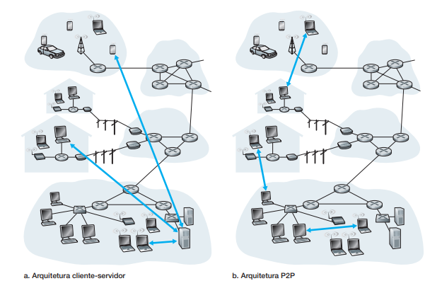
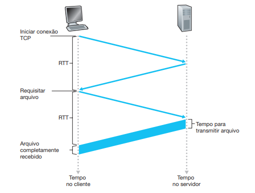

<!doctype html>
<html lang="en">

<head>
  <meta charset="utf-8">
  <meta name="viewport" content="width=device-width, initial-scale=1">
  <meta name="description" content="">
  <meta name="author" content="Mark Otto, Jacob Thornton, and Bootstrap contributors">
  <meta name="generator" content="Hugo 0.101.0">
  <title>Tutorial sobre Redes</title>
  <script src="js/main.js"></script>

  <link rel="canonical" href="https://getbootstrap.com/docs/5.2/examples/sidebars/">
  <!-- CSS only -->
  <link href="https://cdn.jsdelivr.net/npm/bootstrap@5.2.0/dist/css/bootstrap.min.css" rel="stylesheet"
    integrity="sha384-gH2yIJqKdNHPEq0n4Mqa/HGKIhSkIHeL5AyhkYV8i59U5AR6csBvApHHNl/vI1Bx" crossorigin="anonymous">

  <style>
    .bd-placeholder-img {
      font-size: 1.125rem;
      text-anchor: middle;
      -webkit-user-select: none;
      -moz-user-select: none;
      user-select: none;
    }

    @media (min-width: 768px) {
      .bd-placeholder-img-lg {
        font-size: 3.5rem;
      }
    }

    .b-example-divider {
      height: 3rem;
      background-color: rgba(0, 0, 0, .1);
      border: solid rgba(0, 0, 0, .15);
      border-width: 1px 0;
      box-shadow: inset 0 .5em 1.5em rgba(0, 0, 0, .1), inset 0 .125em .5em rgba(0, 0, 0, .15);
    }

    .b-example-vr {
      flex-shrink: 0;
      width: 1.5rem;
      height: 100vh;
    }

    .bi {
      vertical-align: -.125em;
      fill: currentColor;
    }

    .nav-scroller {
      position: relative;
      z-index: 2;
      height: 2.75rem;
      overflow-y: hidden;
    }

    .nav-scroller .nav {
      display: flex;
      flex-wrap: nowrap;
      padding-bottom: 1rem;
      margin-top: -1px;
      overflow-x: auto;
      text-align: center;
      white-space: nowrap;
      -webkit-overflow-scrolling: touch;
    }

    .form-control-dark {
      border-color: var(--bs-gray);

    }

    .form-control-dark:focus {
      border-color: #fff;
      box-shadow: 0 0 0 .25rem rgba(255, 255, 255, .25);
    }

    .text-small {
      font-size: 85%;
    }

    .dropdown-toggle {
      outline: 0;
    }


    .bd-placeholder-img {
      font-size: 1.125rem;
      text-anchor: middle;
      -webkit-user-select: none;
      -moz-user-select: none;
      user-select: none;
    }

    @media (min-width: 768px) {
      .bd-placeholder-img-lg {
        font-size: 3.5rem;
      }
    }

    .b-example-divider {
      height: 3rem;
      background-color: rgba(0, 0, 0, .1);
      border: solid rgba(0, 0, 0, .15);
      border-width: 1px 0;
      box-shadow: inset 0 .5em 1.5em rgba(0, 0, 0, .1), inset 0 .125em .5em rgba(0, 0, 0, .15);
    }

    .b-example-vr {
      flex-shrink: 0;
      width: 1.5rem;
      height: 100vh;
    }

    .bi {
      vertical-align: -.125em;
      fill: currentColor;
    }

    .nav-scroller {
      position: relative;
      z-index: 2;
      height: 2.75rem;
      overflow-y: hidden;
    }

    .nav-scroller .nav {
      display: flex;
      flex-wrap: nowrap;
      padding-bottom: 1rem;
      margin-top: -1px;
      overflow-x: auto;
      text-align: center;
      white-space: nowrap;
      -webkit-overflow-scrolling: touch;
    }

    [type=button]:not(:disabled),
    [type=reset]:not(:disabled),
    [type=submit]:not(:disabled),
    button:not(:disabled) {
      text-align: left
    }
  </style>


  <!-- Custom styles for this template -->
  <link href="sidebars.css" rel="stylesheet">
</head>

<body>


  <header class="p-3 text-bg-dark">
    <div class="container">
      <div class="d-flex flex-wrap align-items-center justify-content-center justify-content-lg-start">

        <ul class="nav col-12 col-lg-auto me-lg-auto mb-2 justify-content-center mb-md-0">
          <li><a href="/" class="nav-link px-2 text-secondary">Repositório</a></li>
          <li><a href="/blog/" class="nav-link px-2 text-white">Blog</a></li>
          <li><a
              href="https://www.amazon.com/s?i=stripbooks&rh=p_27%3AKeith+Ross&s=relevancerank&language=pt&text=Keith+Ross&ref=dp_byline_sr_book_2"
              class="nav-link px-2 text-white">Conheça o autor</a></li>
          <li><a
              href="https://www.amazon.com/-/pt/dp/0133594149/ref=sr_1_1?qid=1663019511&refinements=p_27%3AKeith+Ross&s=books&sr=1-1&text=Keith+Ross"
              class="nav-link px-2 text-white">Compre o livro</a></li>
          <li><a href="https://www.udc.edu.br/site/#/udc/" class="nav-link px-2 text-white">Conheça a UDC</a></li>
        </ul>

        <form class="col-12 col-lg-auto mb-3 mb-lg-0 me-lg-3" role="search" id="searchForm">
          <input id="searchItem" type="search" class="form-control form-control-dark text-bg-dark"
            placeholder="Pesquisar..." aria-label="Pesquisar">
        </form>

        <div class="text-end">
          <button type="button" class="btn btn-outline-light me-2"
            onclick="pesquisar(document.getElementById('searchItem').value)">Procurar</button>
          <button type="button" class="btn btn-warning" data-bs-toggle="modal"
            data-bs-target="#contate-me">Contate-me</button>
        </div>
      </div>
    </div>
  </header>

  <div class="modal fade" id="contate-me" tabindex="-1" aria-labelledby="exampleModalLabel" aria-hidden="true">
    <div class="modal-dialog modal-dialog-centered">
      <div class="modal-content">
        <div class="modal-header">
          <h5 class="modal-title" id="exampleModalLabel">Fale comigo agora mesmo!</h5>
          <button type="button" class="btn-close" data-bs-dismiss="modal" aria-label="Close"></button>
        </div>
        <div class="modal-body">
          <form id="contactForm" data-sb-form-api-token="bbb88a37-8fd7-4785-b9d2-f70ea400910a">

            <!-- Name input -->
            <div class="mb-3">
              <label class="form-label" for="name">Nome</label>
              <input class="form-control" id="name" type="text" placeholder="Nome" data-sb-validations="required" />
              <div class="invalid-feedback" data-sb-feedback="name:required">O nome é necessário.</div>
            </div>

            <!-- Email address input -->
            <div class="mb-3">
              <label class="form-label" for="emailAddress">Endereço de e-mail</label>
              <input class="form-control" id="emailAddress" type="email" placeholder="Endereço de e-mail"
                data-sb-validations="required, email" />
              <div class="invalid-feedback" data-sb-feedback="emailAddress:required">Endereço de e-mail é necessário.
              </div>
              <div class="invalid-feedback" data-sb-feedback="emailAddress:email">Endereço de e-mail não é válido.</div>
            </div>

            <!-- Message input -->
            <div class="mb-3">
              <label class="form-label" for="message">Mensagem</label>
              <textarea class="form-control" id="message" type="text" placeholder="Message" style="height: 10rem;"
                data-sb-validations="required"></textarea>
              <div class="invalid-feedback" data-sb-feedback="message:required">Mensagem é necessaria.</div>
            </div>

            <!-- Form submissions success message -->
            <div class="d-none" id="submitSuccessMessage">
              <div class="text-center mb-3">Seu fourmulário de contato foi enviado corretamente! Obirgado pelo contato.
              </div>
            </div>

            <!-- Form submissions error message -->
            <div class="d-none" id="submitErrorMessage">
              <div class="text-center text-danger mb-3">Erro ao enviar a mensagem!</div>
            </div>

            <!-- Form submit button -->
            <div class="d-grid">
              <button class="btn btn-primary btn-lg disabled" id="submitButton" type="submit">Enviar</button>
            </div>

          </form>
        </div>
      </div>
    </div>
  </div>

  <main class="d-flex flex-nowrap">

    <div class="flex-shrink-0 p-3 bg-white" style="width: 280px;">
      <a href="/" class="d-flex align-items-center pb-3 mb-3 link-dark text-decoration-none border-bottom">
        <span class="fs-5 fw-semibold">Capitulos</span>
      </a>

      <div class="accordion accordion-flush" id="accordionFlushExample">
        <div class="accordion-item">
          <h2 class="accordion-header" id="flush-headingOne">
            <button class="accordion-button collapsed" type="button" data-bs-toggle="collapse"
              data-bs-target="#flush-collapseOne" aria-expanded="false" aria-controls="flush-collapseOne">
              <a data-bs-toggle="collapse" data-bs-target="#cp1">Redes de Computadores</a>
            </button>
          </h2>
          <div id="flush-collapseOne" class="accordion-collapse collapse" aria-labelledby="flush-headingOne"
            data-bs-parent="#accordionFlushExample">
            <div class="accordion-body">
              <ul class="list-unstyled ps-0">
                <li class="mb-1">
                  <button class="btn btn-toggle d-inline-flex align-items-center rounded border-0 collapsed"
                    data-bs-toggle="collapse" data-bs-target="#capitulo-1-1" aria-expanded="false">
                    <a data-bs-toggle="collapse" data-bs-target="#cp1-1">O que é a Internet?</a>
                  </button>
                  <div class="collapse" id="capitulo-1-1">
                    <ul class="btn-toggle-nav list-unstyled fw-normal pb-1 small">
                      <li><a data-bs-toggle="collapse" data-bs-target="#cp1-1-1"
                          class="link-dark d-inline-flex text-decoration-none rounded" href="#">Uma
                          descrição
                          dos componentes da rede</a>
                      </li>
                      <li><a data-bs-toggle="collapse" data-bs-target="#cp1-1-2" href=" #"
                          class="link-dark d-inline-flex text-decoration-none rounded">Uma
                          descrição
                          do serviço</a>
                      </li>
                      <li><a data-bs-toggle="collapse" data-bs-target="#cp1-1-3" href=" #"
                          class="link-dark d-inline-flex text-decoration-none rounded">O que é
                          um protocolo?</a>
                      </li>
                    </ul>
                  </div>
                </li>
                <li class="mb-1">
                  <button class="btn btn-toggle d-inline-flex align-items-center rounded border-0 collapsed"
                    data-bs-toggle="collapse" data-bs-target="#capitulo-1-2" aria-expanded="false">
                    <a data-bs-toggle="collapse" data-bs-target="#cp1-2">A periferia da Internet</a>
                  </button>
                  <div class="collapse" id="capitulo-1-2">
                    <ul class="btn-toggle-nav list-unstyled fw-normal pb-1 small">
                      <li><a href="#" class="link-dark d-inline-flex text-decoration-none rounded"
                          data-bs-toggle="collapse" data-bs-target="#cp1-2-1">Redes
                          de acesso</a>
                      </li>
                      <li><a data-bs-toggle="collapse" data-bs-target="#cp1-2-2" href="#"
                          class="link-dark d-inline-flex text-decoration-none rounded">Meios
                          físicos</a>
                      </li>
                    </ul>
                  </div>
                </li>
                <li class="mb-1">
                  <button class="btn btn-toggle d-inline-flex align-items-center rounded border-0 collapsed"
                    data-bs-toggle="collapse" data-bs-target="#capitulo-1-3" aria-expanded="false">
                    <a data-bs-toggle="collapse" data-bs-target="#cp1-3">O núcleo da rede</a>
                  </button>
                  <div class="collapse" id="capitulo-1-3">
                    <ul class="btn-toggle-nav list-unstyled fw-normal pb-1 small">
                      <li><a href="#" class="link-dark d-inline-flex text-decoration-none rounded"
                          data-bs-toggle="collapse" data-bs-target="#cp1-3-1">Comutação
                          de pacotes</a>
                      </li>
                      <li><a href="#" class="link-dark d-inline-flex text-decoration-none rounded"
                          data-bs-toggle="collapse" data-bs-target="#cp1-3-2">Comutação
                          de circuitos</a>
                      </li>
                      <li><a href="#" class="link-dark d-inline-flex text-decoration-none rounded"
                          data-bs-toggle="collapse" data-bs-target="#cp1-3-3">Uma
                          rede de redes</a>
                      </li>
                    </ul>
                  </div>
                </li>
                <li class="mb-1">
                  <button class="btn btn-toggle d-inline-flex align-items-center rounded border-0 collapsed"
                    data-bs-toggle="collapse" data-bs-target="#capitulo-1-4" aria-expanded="false">
                    <a data-bs-toggle="collapse" data-bs-target="#cp1-4">Atraso, perda e vazão em redes de comutação de
                      pacotes</a>
                  </button>
                  <div class="collapse" id="capitulo-1-4">
                    <ul class="btn-toggle-nav list-unstyled fw-normal pb-1 small">
                      <li><a href="#" class="link-dark d-inline-flex text-decoration-none rounded"
                          data-bs-toggle="collapse" data-bs-target="#cp1-4-1">Uma
                          visão geral de atraso em redes de comutação de pacotes</a>
                      </li>
                      <li><a href="#" class="link-dark d-inline-flex text-decoration-none rounded"
                          data-bs-toggle="collapse" data-bs-target="#cp1-4-2">Atraso
                          de fila e perda de pacote</a>
                      </li>
                      <li><a href="#" class="link-dark d-inline-flex text-decoration-none rounded"
                          data-bs-toggle="collapse" data-bs-target="#cp1-4-3">Atraso
                          fim a fim</a>
                      </li>
                      <li><a href="#" class="link-dark d-inline-flex text-decoration-none rounded"
                          data-bs-toggle="collapse" data-bs-target="#cp1-4-4">Vazão
                          nas redes de computadores</a>
                      </li>
                    </ul>
                  </div>
                </li>
                <li class="mb-1">
                  <button class="btn btn-toggle d-inline-flex align-items-center rounded border-0 collapsed"
                    data-bs-toggle="collapse" data-bs-target="#capitulo-1-5" aria-expanded="false"><a
                      data-bs-toggle="collapse" data-bs-target="#cp1-5">Camadas de protocolo e seus modelos de
                      serviço</a>
                  </button>
                  <div class="collapse" id="capitulo-1-5">
                    <ul class="btn-toggle-nav list-unstyled fw-normal pb-1 small">
                      <li><a href="#" class="link-dark d-inline-flex text-decoration-none rounded"
                          data-bs-toggle="collapse" data-bs-target="#cp1-5-1">Arquitetura
                          de camadas</a>
                      </li>
                      <li><a href="#" class="link-dark d-inline-flex text-decoration-none rounded"
                          data-bs-toggle="collapse" data-bs-target="#cp1-5-2">Encapsulamento</a>
                      </li>
                    </ul>
                  </div>
                </li>
                <li class="mb-1">
                  <button class="btn btn-toggle d-inline-flex align-items-center rounded border-0 collapsed"
                    data-bs-toggle="collapse" data-bs-target="#capitulo-1-6" aria-expanded="false"><a
                      data-bs-toggle="collapse" data-bs-target="#cp1-6">Redes sob ameaça</a>
                  </button>
                </li>
                <li class="mb-1">
                  <button class="btn btn-toggle d-inline-flex align-items-center rounded border-0 collapsed"
                    data-bs-toggle="collapse" data-bs-target="#capitulo-1-7" aria-expanded="false"><a
                      data-bs-toggle="collapse" data-bs-target="#cp1-7">História das redes de computadores e da
                      Internet</a>
                  </button>
                  <div class="collapse" id="capitulo-1-7">
                    <ul class="btn-toggle-nav list-unstyled fw-normal pb-1 small">
                      <li><a href="#" class="link-dark d-inline-flex text-decoration-none rounded"
                          data-bs-toggle="collapse" data-bs-target="#cp1-7-1">Desenvolvimento
                          da comutação de pacotes: 1961-1972</a>
                      </li>
                      <li><a href="#" class="link-dark d-inline-flex text-decoration-none rounded"
                          data-bs-toggle="collapse" data-bs-target="#cp1-7-2">Redes
                          proprietárias e trabalho em rede: 1972-1980</a>
                      </li>
                      <li><a href="#" class="link-dark d-inline-flex text-decoration-none rounded"
                          data-bs-toggle="collapse" data-bs-target="#cp1-7-3">Proliferação
                          de redes: 1980-1990</a>
                      </li>
                      <li><a href="#" class="link-dark d-inline-flex text-decoration-none rounded"
                          data-bs-toggle="collapse" data-bs-target="#cp1-7-4">A
                          explosão da Internet: a década de 1990</a>
                      </li>
                      <li><a href="#" class="link-dark d-inline-flex text-decoration-none rounded"
                          data-bs-toggle="collapse" data-bs-target="#cp1-7-5">O
                          novo milênio</a>
                      </li>
                    </ul>
                  </div>
                </li>
                <li class="mb-1">
                  <button class="btn btn-toggle d-inline-flex align-items-center rounded border-0 collapsed"
                    data-bs-toggle="collapse" data-bs-target="#capitulo-1-8" aria-expanded="false"><a
                      data-bs-toggle="collapse" data-bs-target="#cp1-8">Resumo</a>
                  </button>
                </li>
              </ul>
            </div>
          </div>
        </div>
        <div class="accordion-item">
          <h2 class="accordion-header" id="flush-headingTwo">
            <button class="accordion-button collapsed" type="button" data-bs-toggle="collapse"
              data-bs-target="#flush-collapseTwo" aria-expanded="false" aria-controls="flush-collapseTwo"><a
                data-bs-toggle="collapse" data-bs-target="#cp2">Camada de aplicação</a>
            </button>
          </h2>
          <div id="flush-collapseTwo" class="accordion-collapse collapse" aria-labelledby="flush-headingTwo"
            data-bs-parent="#accordionFlushExample">
            <div class="accordion-body">
              <ul class="list-unstyled ps-0">
                <li class="mb-1">
                  <button class="btn btn-toggle d-inline-flex align-items-center rounded border-0 collapsed"
                    data-bs-toggle="collapse" data-bs-target="#capitulo-2-1" aria-expanded="false">
                    <a data-bs-toggle="collapse" data-bs-target="#cp2-1">Princípios de aplicações de rede</a>
                  </button>
                  <div class="collapse" id="capitulo-2-1">
                    <ul class="btn-toggle-nav list-unstyled fw-normal pb-1 small">
                      <li><a data-bs-toggle="collapse" data-bs-target="#cp2-1-1"
                          class="link-dark d-inline-flex text-decoration-none rounded" href="#">Arquiteturas de
                          aplicação de rede</a>
                      </li>
                      <li><a data-bs-toggle="collapse" data-bs-target="#cp2-1-2" href=" #"
                          class="link-dark d-inline-flex text-decoration-none rounded">Comunicação entre processos</a>
                      </li>
                      <li><a data-bs-toggle="collapse" data-bs-target="#cp2-1-3" href=" #"
                          class="link-dark d-inline-flex text-decoration-none rounded">Serviços de transporte
                          disponíveis para aplicações</a>
                      </li>
                      <li><a data-bs-toggle="collapse" data-bs-target="#cp2-1-4" href=" #"
                          class="link-dark d-inline-flex text-decoration-none rounded">Serviços de transporte providos
                          pela Internet</a>
                      </li>
                      <li><a data-bs-toggle="collapse" data-bs-target="#cp2-1-5" href=" #"
                          class="link-dark d-inline-flex text-decoration-none rounded">Protocolos de camada de
                          aplicação</a>
                      </li>
                      <li><a data-bs-toggle="collapse" data-bs-target="#cp2-1-6" href=" #"
                          class="link-dark d-inline-flex text-decoration-none rounded">Aplicações de rede abordadas
                          neste livro</a>
                      </li>
                    </ul>
                  </div>
                </li>
                <li class="mb-1">
                  <button class="btn btn-toggle d-inline-flex align-items-center rounded border-0 collapsed"
                    data-bs-toggle="collapse" data-bs-target="#capitulo-2-2" aria-expanded="false">
                    <a data-bs-toggle="collapse" data-bs-target="#cp2-2">A Web e o HTTP</a>
                  </button>
                  <div class="collapse" id="capitulo-2-2">
                    <ul class="btn-toggle-nav list-unstyled fw-normal pb-1 small">
                      <li><a href="#" class="link-dark d-inline-flex text-decoration-none rounded"
                          data-bs-toggle="collapse" data-bs-target="#cp2-2-1">Descrição geral do HTTP</a>
                      </li>
                      <li><a data-bs-toggle="collapse" data-bs-target="#cp2-2-2" href="#"
                          class="link-dark d-inline-flex text-decoration-none rounded">Conexões persistentes e não
                          persistentes</a>
                      </li>
                      <li><a data-bs-toggle="collapse" data-bs-target="#cp2-2-3" href="#"
                          class="link-dark d-inline-flex text-decoration-none rounded">Formato da mensagem HTTP</a>
                      </li>
                      <li><a data-bs-toggle="collapse" data-bs-target="#cp2-2-4" href="#"
                          class="link-dark d-inline-flex text-decoration-none rounded">Interação usuário-servidor:
                          cookies</a>
                      </li>
                      <li><a data-bs-toggle="collapse" data-bs-target="#cp2-2-5" href="#"
                          class="link-dark d-inline-flex text-decoration-none rounded">Caches Web</a>
                      </li>
                    </ul>
                  </div>
                </li>
                <li class="mb-1">
                  <button class="btn btn-toggle d-inline-flex align-items-center rounded border-0 collapsed"
                    data-bs-toggle="collapse" data-bs-target="#capitulo-2-3" aria-expanded="false">
                    <a data-bs-toggle="collapse" data-bs-target="#cp2-3">Transferência de arquivo: FTP</a>
                  </button>
                  <div class="collapse" id="capitulo-2-3">
                    <ul class="btn-toggle-nav list-unstyled fw-normal pb-1 small">
                      <li><a href="#" class="link-dark d-inline-flex text-decoration-none rounded"
                          data-bs-toggle="collapse" data-bs-target="#cp2-3-1">Camadas e respostas FTP</a>
                      </li>
                    </ul>
                  </div>
                </li>
                <li class="mb-1">
                  <button class="btn btn-toggle d-inline-flex align-items-center rounded border-0 collapsed"
                    data-bs-toggle="collapse" data-bs-target="#capitulo-2-4" aria-expanded="false">
                    <a data-bs-toggle="collapse" data-bs-target="#cp2-4">Correio eletrônico na Internet</a>
                  </button>
                  <div class="collapse" id="capitulo-2-4">
                    <ul class="btn-toggle-nav list-unstyled fw-normal pb-1 small">
                      <li><a href="#" class="link-dark d-inline-flex text-decoration-none rounded"
                          data-bs-toggle="collapse" data-bs-target="#cp2-4-1">SMTP</a>
                      </li>
                      <li><a href="#" class="link-dark d-inline-flex text-decoration-none rounded"
                          data-bs-toggle="collapse" data-bs-target="#cp2-4-2">Comparação com o HTTP</a>
                      </li>
                      <li><a href="#" class="link-dark d-inline-flex text-decoration-none rounded"
                          data-bs-toggle="collapse" data-bs-target="#cp2-4-3">Formatos de mensagem de correio</a>
                      </li>
                      <li><a href="#" class="link-dark d-inline-flex text-decoration-none rounded"
                          data-bs-toggle="collapse" data-bs-target="#cp2-4-4">Protocolos de acesso ao correio</a>
                      </li>
                    </ul>
                  </div>
                </li>
                <li class="mb-1">
                  <button class="btn btn-toggle d-inline-flex align-items-center rounded border-0 collapsed"
                    data-bs-toggle="collapse" data-bs-target="#capitulo-2-5" aria-expanded="false"><a
                      data-bs-toggle="collapse" data-bs-target="#cp2-5">DNS: o serviço de diretório da Internet</a>
                  </button>
                  <div class="collapse" id="capitulo-2-5">
                    <ul class="btn-toggle-nav list-unstyled fw-normal pb-1 small">
                      <li><a href="#" class="link-dark d-inline-flex text-decoration-none rounded"
                          data-bs-toggle="collapse" data-bs-target="#cp2-5-1">Serviços fornecidos pelo DNS</a>
                      </li>
                      <li><a href="#" class="link-dark d-inline-flex text-decoration-none rounded"
                          data-bs-toggle="collapse" data-bs-target="#cp2-5-2">Visão geral do modo de funcionamento do
                          DNS</a>
                      </li>
                      <li><a href="#" class="link-dark d-inline-flex text-decoration-none rounded"
                          data-bs-toggle="collapse" data-bs-target="#cp2-5-3">Registros e mensagens DNS</a>
                      </li>
                    </ul>
                  </div>
                </li>
                <li class="mb-1">
                  <button class="btn btn-toggle d-inline-flex align-items-center rounded border-0 collapsed"
                    data-bs-toggle="collapse" data-bs-target="#capitulo-2-6" aria-expanded="false"><a
                      data-bs-toggle="collapse" data-bs-target="#cp2-6">Aplicações P2P</a>
                  </button>
                  <div class="collapse" id="capitulo-2-6">
                    <ul class="btn-toggle-nav list-unstyled fw-normal pb-1 small">
                      <li><a href="#" class="link-dark d-inline-flex text-decoration-none rounded"
                          data-bs-toggle="collapse" data-bs-target="#cp2-6-1">Distribuição de arquivos P2P</a>
                      </li>
                      <li><a href="#" class="link-dark d-inline-flex text-decoration-none rounded"
                          data-bs-toggle="collapse" data-bs-target="#cp2-6-2"> Distributed Hash Tables (DHTs)</a>
                      </li>
                    </ul>
                  </div>
                </li>
                <li class="mb-1">
                  <button class="btn btn-toggle d-inline-flex align-items-center rounded border-0 collapsed"
                    data-bs-toggle="collapse" data-bs-target="#capitulo-2-7" aria-expanded="false"><a
                      data-bs-toggle="collapse" data-bs-target="#cp2-7">Programação de sockets: criando aplicações de
                      rede</a>
                  </button>
                  <div class="collapse" id="capitulo-2-7">
                    <ul class="btn-toggle-nav list-unstyled fw-normal pb-1 small">
                      <li><a href="#" class="link-dark d-inline-flex text-decoration-none rounded"
                          data-bs-toggle="collapse" data-bs-target="#cp2-7-1">Programação de sockets com UDP</a>
                      </li>
                      <li><a href="#" class="link-dark d-inline-flex text-decoration-none rounded"
                          data-bs-toggle="collapse" data-bs-target="#cp2-7-2">Programação de sockets com TCP</a>
                      </li>
                    </ul>
                  </div>
                </li>
                <li class="mb-1">
                  <button class="btn btn-toggle d-inline-flex align-items-center rounded border-0 collapsed"
                    data-bs-toggle="collapse" data-bs-target="#capitulo-2-8" aria-expanded="false"><a
                      data-bs-toggle="collapse" data-bs-target="#cp2-8">Resumo</a>
                  </button>
                </li>
              </ul>
            </div>
          </div>
        </div>
      </div>
    </div>

    <div class="b-example-divider b-example-vr"></div>

    <div style="overflow: auto;">
      <div id="cp1" class="collapse container">
        <h1>Redes de computadores e a internet</h1>
        <span>A Internet de hoje é provavelmente o maior sistema de engenharia já criado pela humanidade, com
          centenas de milhões de computadores conectados, enlaces de comunicação e comutadores; bilhões de
          usuários que se
          conectam por meio de laptops, tablets e smartphones; e com uma série de dispositivos como sensores,
          webcams,
          console para jogos, quadros de imagens, e até mesmo máquinas de lavar sendo conectadas. Dado que a
          Internet
          é tão ampla e possui inúmeros componentes e utilidades, há a possibilidade de compreender como ela
          funciona?
          Existem princípios de orientação e estrutura que forneçam um fundamento para a compreensão de um
          sistema
          surpreendentemente complexo e abrangente? Se a resposta for sim, é possível que, nos dias de hoje,
          seja interessante e divertido aprender sobre rede de computadores? Felizmente, as respostas para
          todas essas perguntas é um
          retumbante SIM! Na verdade, nosso objetivo neste livro é fornecer uma introdução moderna ao campo
          dinâmico
          das redes de computadores, apresentando os princípios e o entendimento prático necessários para
          utilizar não
          apenas as redes de hoje, como também as de amanhã.
          O primeiro capítulo apresenta um panorama de redes de computadores e da Internet. Nosso objetivo é
          pintar um quadro amplo e estabelecer um contexto para o resto deste livro, para ver a floresta por
          entre as árvores.
          Cobriremos um terreno bastante extenso neste capítulo de introdução e discutiremos várias peças de
          uma rede
          de computadores, sem perder de vista o quadro geral.
          O panorama geral de redes de computadores que apresentaremos neste capítulo será estruturado como
          segue.
          Após apresentarmos brevemente a terminologia e os conceitos fundamentais, examinaremos primeiro os
          componentes básicos de hardware e software que compõem uma rede. Partiremos da periferia da rede e
          examinaremos os
          sistemas finais e aplicações de rede executados nela. Consideraremos os serviços de transporte
          fornecidos a essas
          aplicações. Em seguida exploraremos o núcleo de uma rede de computadores examinando os enlaces e
          comutadores
          que transportam dados, bem como as redes de acesso e meios físicos que conectam sistemas finais ao
          núcleo da rede.
          Aprenderemos que a Internet é uma rede de redes e observaremos como essas redes se conectam umas com
          as outras.
          Após concluirmos essa revisão sobre a periferia e o núcleo de uma rede de computadores, adotaremos
          uma
          visão mais ampla e mais abstrata na segunda metade deste capítulo. Examinaremos atraso, perda e
          vazão de
          dados em uma rede de computadores e forneceremos modelos quantitativos simples para a vazão e o
          atraso fim
          a fim: modelos que levam em conta atrasos de transmissão, propagação e enfileiramento. Depois
          apresentaremos
          alguns princípios fundamentais de arquitetura em redes de computadores, a saber: protocolos em
          camadas e
          modelos de serviço. Aprenderemos, também, que as redes de computadores são vulneráveis a diferentes
          tipos de
          ameaças; analisaremos algumas dessas ameaças e como a rede pode se tornar mais segura. Por fim,
          encerraremos
          este capítulo com um breve histórico da computação em rede.</span>
      </div>
      <div id="cp1-1" class="collapse container">
        <h1>O que é a Internet?</h1>
        <span>Neste livro, usamos a Internet pública, uma rede de computadores específica, como o veículo
          principal para
          discutir as redes de computadores e seus protocolos. Mas o que é a Internet? Há diversas maneiras de
          responder
          a essa questão. Primeiro, podemos descrever detalhadamente os aspectos principais da Internet, ou
          seja, os componentes de software e hardware básicos que a formam. Segundo, podemos descrever a
          Internet em termos de
          uma infraestrutura de redes que fornece serviços para aplicações distribuídas. Iniciaremos com a
          descrição dos
          componentes, utilizando a Figura 1.1 como ilustração para a nossa discussão.</span>
        <span>Figura 1.1 Alguns componentes da Internet</span>
        
      </div>
      <div id="cp1-1-1" class="collapse container">
        <h1>Uma descrição dos componentes da rede</h1>
        <span>A Internet é uma rede de computadores que interconecta centenas de milhões de dispositivos de
          computação ao redor do mundo. Há pouco tempo, esses dispositivos eram basicamente PCs de mesa,
          estações de trabalho Linux, e os assim chamados servidores que armazenam e transmitem informações,
          como páginas da Web
          e mensagens de e-mail. No entanto, cada vez mais sistemas finais modernos da Internet, como TVs,
          laptops,
          consoles para jogos, telefones celulares, webcams, automóveis, dispositivos de sensoriamento
          ambiental, quadros
          de imagens, e sistemas internos elétricos e de segurança, estão sendo conectados à rede. Na verdade,
          o termo rede
          de computadores está começando a soar um tanto desatualizado, dados os muitos equipamentos não
          tradicionais
          que estão sendo ligados à Internet. No jargão da rede, todos esses equipamentos são denominados
          hospedeiros
          ou sistemas finais. Em julho de 2011, havia cerca de 850 milhões de sistemas finais ligados à
          Internet [ISC, 2012],
          sem contar os smartphones, laptops e outros dispositivos que são conectados à rede de maneira
          intermitente. No
          todo, estima-se que haja 2 bilhões de usuários na Internet [ITU, 2011].
          Sistemas finais são conectados entre si por enlaces (links) de comunicação e comutadores (switches)
          de
          pacotes. Na Seção 1.2, veremos que há muitos tipos de enlaces de comunicação, que são constituídos
          de diferentes tipos de meios físicos, entre eles cabos coaxiais, fios de cobre, fibras óticas e
          ondas de rádio. Enlaces diferentes
          podem transmitir dados em taxas diferentes, sendo a taxa de transmissão de um enlace medida em bits
          por
          segundo. Quando um sistema final possui dados para enviar a outro sistema final, o sistema emissor
          segmenta
          esses dados e adiciona bytes de cabeçalho a cada segmento. Os pacotes de informações resultantes,
          conhecidos
          como pacotes no jargão de rede de computadores, são enviados através da rede ao sistema final de
          destino, onde
          são remontados para os dados originais.
          Um comutador de pacotes encaminha o pacote que está chegando em um de seus enlaces de comunicação
          de entrada para um de seus enlaces de comunicação de saída. Há comutadores de pacotes de todos os
          tipos e
          formas, mas os dois mais proeminentes na Internet de hoje são roteadores e comutadores de camada de
          enlace. Esses dois tipos de comutadores encaminham pacotes a seus destinos finais. Os comutadores
          de camada de
          enlace geralmente são utilizados em redes de acesso, enquanto os roteadores são utilizados
          principalmente no
          núcleo da rede. A sequência de enlaces de comunicação e comutadores de pacotes que um pacote
          percorre desde
          o sistema final remetente até o sistema final receptor é conhecida como rota ou caminho através da
          rede. É difícil
          de estimar a exata quantidade de tráfego na Internet, mas a Cisco [Cisco VNI, 2011] estima que o
          tráfego global
          da Internet esteve perto do 40 exabytes por mês em 2012.
          As redes comutadas por pacotes (que transportam pacotes) são, de muitas maneiras, semelhantes às
          redes
          de transporte de rodovias, estradas e cruzamentos (que transportam veículos). Considere, por
          exemplo, uma
          fábrica que precise transportar uma quantidade de carga muito grande a algum depósito localizado a
          milhares
          de quilômetros. Na fábrica, a carga é dividida e carregada em uma frota de caminhões. Cada caminhão
          viaja, de
          modo independente, pela rede de rodovias, estradas e cruzamentos ao depósito de destino. No
          depósito, a carga
          é descarregada e agrupada com o resto da carga pertencente à mesma remessa. Deste modo, os pacotes
          se assemelham aos caminhões, os enlaces de comunicação representam rodovias e estradas, os
          comutadores de pacote
          seriam os cruzamentos e cada sistema final se assemelha aos depósitos. Assim como o caminhão faz o
          percurso
          pela rede de transporte, o pacote utiliza uma rede de computadores.
          Sistemas finais acessam a Internet por meio de Provedores de Serviços de Internet (Internet Service
          Providers
          — ISPs), entre eles ISPs residenciais como empresas de TV a cabo ou empresas de telefonia;
          corporativos, de universidades e ISPs que fornecem acesso sem fio em aeroportos, hotéis, cafés e
          outros locais públicos. Cada ISP é uma
          rede de comutadores de pacotes e enlaces de comunicação. ISPs oferecem aos sistemas finais uma
          variedade de tipos
          de acesso à rede, incluindo acesso residencial de banda larga como modem a cabo ou DSL (linha
          digital de assinante), acesso por LAN de alta velocidade, acesso sem fio e acesso por modem discado
          de 56 kbits/s. ISPs também fornecem acesso a provedores de conteúdo, conectando sites diretamente à
          Internet. Esta se interessa pela conexão
          entre os sistemas finais, portanto os ISPs que fornecem acesso a esses sistemas também devem se
          interconectar. Esses
          ISPs de nível mais baixo são interconectados por meio de ISPs de nível mais alto, nacionais e
          internacionais, como
          Level 3 Communications, AT&T, Sprint e NTT. Um ISP de nível mais alto consiste em roteadores de alta
          velocidade interconectados com enlaces de fibra ótica de alta velocidade. Cada rede ISP, seja de
          nível mais alto ou mais baixo, é
          gerenciada de forma independente, executa o protocolo IP (ver adiante) e obedece a certas convenções
          de nomeação
          e endereço. Examinaremos ISPs e sua interconexão mais em detalhes na Seção 1.3.
          Os sistemas finais, os comutadores de pacotes e outras peças da Internet executam protocolos que
          controlam o
          envio e o recebimento de informações. O TCP (Transmission Control Protocol — Protocolo de Controle
          de Transmissão) e o IP (Internet Protocol — Protocolo da Internet) são dois dos mais importantes da
          Internet. O protocolo
          IP especifica o formato dos pacotes que são enviados e recebidos entre roteadores e sistemas finais.
          Os principais
          protocolos da Internet são conhecidos como TCP/IP. Começaremos a examinar protocolos neste capítulo
          de introdução. Mas isso é só um começo — grande parte deste livro trata de protocolos de redes de
          computadores!
          Dada a importância de protocolos para a Internet, é adequado que todos concordem sobre o que cada um
          deles faz, de modo que as pessoas possam criar sistemas e produtos que operem entre si. É aqui que
          os padrões
          entram em ação. Padrões da Internet são desenvolvidos pela IETF (Internet Engineering Task Force —
          Força
          de Trabalho de Engenharia da Internet) [IETF, 2012]. Os documentos padronizados da IETF são
          denominados
          RFCs (Request For Comments — pedido de comentários). Os RFCs começaram como solicitações gerais de
          comentários (daí o nome) para resolver problemas de arquitetura que a precursora da Internet
          enfrentava [Allman,
          2011]. Os RFCs costumam ser bastante técnicos e detalhados. Definem protocolos como TCP, IP, HTTP
          (para a
          Web) e SMTP (para e-mail). Hoje, existem mais de 6.000 RFCs. Outros órgãos também especificam
          padrões para
          componentes de rede, principalmente para enlaces. O IEEE 802 LAN/MAN Standards Committee [IEEE 802,
          2009], por exemplo, especifica os padrões Ethernet e Wi-Fi sem fio.</span>
      </div>
      <div id="cp1-1-2" class="collapse container">
        <h1>Uma descrição do serviço</h1>
        <span>A discussão anterior identificou muitos dos componentes que compõem a Internet. Mas também
          podemos descrevê-la partindo de um ângulo completamente diferente — ou seja, como uma
          infraestrutura que
          provê serviços a aplicações. Tais aplicações incluem correio eletrônico, navegação na Web, redes
          sociais, mensagem instantânea, Voz sobre IP (VoIP), vídeo em tempo real, jogos distribuídos,
          compartilhamento de arquivos
          peer-to -peer (P2P), televisão pela Internet, login remoto e muito mais. Essas aplicações são
          conhecidas como
          aplicações distribuídas, uma vez que envolvem diversos sistemas finais que trocam informações
          mutuamente.
          De forma significativa, as aplicações da Internet são executadas em sistemas finais — e não em
          comutadores de
          pacote no núcleo da rede. Embora os comutadores de pacotes facilitem a troca de dados entre os
          sistemas finais,
          eles não estão relacionados com a aplicação, que é a origem ou o destino dos dados.
          Vamos explorar um pouco mais o significado de uma infraestrutura que fornece serviços a aplicações.
          Nesse
          sentido, suponha que você tenha uma grande ideia para uma aplicação distribuída para a Internet, uma
          que possa
          beneficiar bastante a humanidade ou que simplesmente o enriqueça e o torne famoso. Como transformar
          essa
          ideia em uma aplicação real da Internet? Como as aplicações são executadas em sistemas finais, você
          precisará
          criar programas que sejam executados em sistemas finais. Você poderia, por exemplo, criar seus
          programas em
          Java, C ou Python. Agora, já que você está desenvolvendo uma aplicação distribuída para a Internet,
          os programas executados em diferentes sistemas finais precisarão enviar dados uns aos outros. E,
          aqui, chegamos ao assunto principal — o que leva ao modo alternativo de descrever a Internet como
          uma plataforma para aplicações.
          De que modo um programa, executado em um sistema final, orienta a Internet a enviar dados a outro
          programa
          executado em outro sistema final?
          Os sistemas finais ligados à Internet oferecem uma Interface de Programação de Aplicação (API) que
          especifica como o programa que é executado no sistema final solicita à infraestrutura da Internet
          que envie dados
          a um programa de destino específico, executado em outro sistema final. Essa API da Internet é um
          conjunto de
          regras que o software emissor deve cumprir para que a Internet seja capaz de enviar os dados ao
          programa de
          destino. Discutiremos a API da Internet mais detalhadamente no Capítulo 2. Agora, vamos traçar uma
          simples
          comparação, que será utilizada com frequência neste livro. Suponha que Alice queria enviar uma carta
          para Bob
          utilizando o serviço postal. Alice, é claro, não pode apenas escrever a carta (os dados) e atirá-la
          pela janela. Em vez disso, o serviço postal necessita que ela coloque a carta em um envelope;
          escreva o nome completo de
          Bob, endereço e CEP no centro do envelope; feche; coloque um selo no canto superior direito; e, por
          fim, leve
          o envelope a uma agência de correio oficial. Dessa maneira, o serviço postal possui sua própria “API
          de serviço
          postal”, ou conjunto de regras, que Alice deve cumprir para que sua carta seja entregue a Bob. De um
          modo semelhante, a Internet possui uma API que o software emissor de dados deve seguir para que a
          Internet envie os
          dados para o software receptor.
          O serviço postal, claro, fornece mais de um serviço a seus clientes: entrega expressa, aviso de
          recebimento,
          carta simples e muito mais. De modo semelhante, a Internet provê diversos serviços a suas
          aplicações. Ao desenvolver uma aplicação para a Internet, você também deve escolher um dos serviços
          que a rede oferece. Uma
          descrição dos serviços será apresentada no Capítulo 2.
          Acabamos de apresentar duas descrições da Internet: uma delas diz respeito a seus componentes de
          hardware e software, e a outra, aos serviços que ela oferece a aplicações distribuídas. Mas talvez
          você ainda esteja
          confuso sobre o que é a Internet. O que é comutação de pacotes e TCP/IP? O que são roteadores? Que
          tipos de
          enlaces de comunicação estão presentes na Internet? O que é uma aplicação distribuída? Como uma
          torradeira
          ou um sensor de variações meteorológicas podem ser ligados à Internet? Se você está um pouco
          assustado com
          tudo isso agora, não se preocupe — a finalidade deste livro é lhe apresentar os mecanismos da
          Internet e também
          os princípios que determinam como e por que ela funciona. Explicaremos esses termos e questões
          importantes
          nas seções e nos capítulos subsequentes.</span>
      </div>
      <div id="cp1-1-3" class="collapse container">
        <h1>O que é um protocolo?</h1>
        <span>Agora que já entendemos um pouco o que é a Internet, vamos considerar outra palavra fundamental
          usada
          em redes de computadores: protocolo. O que é um protocolo? O que um protocolo faz?
        </span>
        <strong>Uma analogia humana</strong>
        <span> Talvez seja mais fácil entender a ideia de um protocolo de rede de computadores considerando
          primeiro
          algumas analogias humanas, já que executamos protocolos o tempo todo. Considere o que você faz
          quando quer
          perguntar as horas a alguém. Um diálogo comum é ilustrado na Figura 1.2. O protocolo humano (ou as
          boas
          maneiras, ao menos) dita que, ao iniciarmos uma comunicação com outra pessoa, primeiro a
          cumprimentemos
          (o primeiro “oi” da Figura 1.2). A resposta comum para um “oi” é um outro “oi”. Implicitamente,
          tomamos a resposta cordial “oi” como uma indicação de que podemos prosseguir e perguntar as horas.
          Uma reação diferente
          ao “oi” inicial (tal como “Não me perturbe!”, “I don’t speak Portuguese!” ou alguma resposta
          atravessada) poderia
          indicar falta de vontade ou incapacidade de comunicação. Nesse caso, o protocolo humano seria não
          perguntar
          que horas são. Às vezes, não recebemos nenhuma resposta para uma pergunta, caso em que em geral
          desistimos
          de perguntar as horas à pessoa. Note que, no nosso protocolo humano, há mensagens específicas que
          enviamos
          e ações específicas que realizamos em reação às respostas recebidas ou a outros eventos (como
          nenhuma resposta
          após certo tempo). É claro que mensagens transmitidas e recebidas e ações realizadas quando essas
          mensagens
          são enviadas ou recebidas ou quando ocorrem outros eventos desempenham um papel central em um
          protocolo
          humano. Se as pessoas executarem protocolos diferentes (por exemplo, se uma pessoa tem boas
          maneiras, mas a
          outra não; se uma delas entende o conceito de horas, mas a outra não), os protocolos não interagem e
          nenhum
          trabalho útil pode ser realizado. O mesmo é válido para redes — é preciso que duas (ou mais)
          entidades comunicantes executem o mesmo protocolo para que uma tarefa seja realizada.
          Vamos considerar uma segunda analogia humana. Suponha que você esteja assistindo a uma aula (sobre
          redes de computadores, por exemplo). O professor está falando monotonamente sobre protocolos e você
          está
          confuso. Ele para e pergunta: “Alguma dúvida?” (uma mensagem que é transmitida a todos os alunos e
          recebida
          por todos os que não estão dormindo). Você levanta a mão (transmitindo uma mensagem implícita ao
          professor). O professor percebe e, com um sorriso, diz “Sim...” (uma mensagem transmitida,
          incentivando-o a fazer sua pergunta — professores adoram perguntas) e você então faz a sua (isto é,
          transmite sua mensagem ao professor).
          Ele ouve (recebe sua mensagem) e responde (transmite uma resposta a você). Mais uma vez, percebemos
          que a
          transmissão e a recepção de mensagens e um conjunto de ações convencionais, realizadas quando as
          mensagens
          são enviadas e recebidas, estão no centro desse protocolo de pergunta e resposta.
        </span>
        <span>
          Figura 1.2 Um protocolo humano e um protocolo de rede de computadores
        </span> <br>
        <br>
        <strong>Protocolos de rede</strong><br>
        <span>Um protocolo de rede é semelhante a um protocolo humano; a única diferença é que as entidades que
          trocam mensagens e realizam ações são componentes de hardware ou software de algum dispositivo (por
          exemplo,
          computador, smartphone, tablet, roteador ou outro equipamento habilitado para rede). Todas as
          atividades na
          Internet que envolvem duas ou mais entidades remotas comunicantes são governadas por um protocolo.
          Por
          exemplo, protocolos executados no hardware de dois computadores conectados fisicamente controlam o
          fluxo de
          bits no “cabo” entre as duas placas de interface de rede; protocolos de controle de congestionamento
          em sistemas
          finais controlam a taxa com que os pacotes são transmitidos entre a origem e o destino; protocolos
          em roteadores
          determinam o caminho de um pacote da origem ao destino. Eles estão em execução por toda a Internet
          e, em
          consequência, grande parte deste livro trata de protocolos de rede de computadores.
          Como exemplo de um protocolo de rede de computadores com o qual você provavelmente está
          familiarizado,
          considere o que acontece quando fazemos uma requisição a um servidor Web, isto é, quando digitamos o
          URL de
          uma página Web no browser. Isso é mostrado no lado direito da Figura 1.2. Primeiro, o computador
          enviará uma
          mensagem de requisição de conexão ao servidor Web e aguardará uma resposta. O servidor receberá essa
          mensagem de requisição de conexão e retornará uma mensagem de resposta de conexão. Sabendo que
          agora está tudo certo para requisitar o documento da Web, o computador envia então o nome da página
          Web que quer buscar naquele
          servidor com uma mensagem GET. Por fim, o servidor retorna a página (arquivo) para o computador.
          Dados o exemplo humano e o exemplo de rede anteriores, as trocas de mensagens e as ações realizadas
          quando
          essas mensagens são enviadas e recebidas são os elementos fundamentais para a definição de um
          protocolo: <em>Um protocolo define o formato e a ordem das mensagens trocadas entre duas ou mais
            entidades comunicantes, bem como as ações realizadas na transmissão e/ou no recebimento de uma
            mensagem ou outro evento.</em>
          A Internet e as redes de computadores em geral fazem uso intenso de protocolos. Diferentes tipos são
          usados
          para realizar diferentes tarefas de comunicação. À medida que for avançando na leitura deste livro,
          você perceberá que
          alguns protocolos são simples e diretos, enquanto outros são complexos e intelectualmente profundos.
          Dominar a área
          de redes de computadores equivale a entender o que são, por que existem e como funcionam os
          protocolos de rede.
        </span>
      </div>
      <div id="cp1-2" class="collapse container">
        <h1>A periferia da Internet</h1>
        <span>Nas seções anteriores, apresentamos uma descrição de alto nível da Internet e dos protocolos de
          rede. Agora
          passaremos a tratar com um pouco mais de profundidade os componentes de uma rede de computadores (e
          da
          Internet, em particular). Nesta seção, começamos pela periferia de uma rede e examinamos os
          componentes com
          os quais estamos mais familiarizados — a saber, computadores, smartphones e outros equipamentos que
          usamos
          diariamente. Na seção seguinte, passaremos da periferia para o núcleo da rede e estudaremos
          comutação e roteamento em redes de computadores.
          Como descrito na seção anterior, no jargão de rede de computadores, os computadores e outros
          dispositivos
          conectados à Internet são frequentemente chamados de sistemas finais, pois se encontram na periferia
          da Internet, como mostrado na Figura 1.3. Os sistemas finais da Internet incluem computadores de
          mesa (por exemplo,
          PCs de mesa, MACs e caixas Linux), servidores (por exemplo, servidores Web e de e-mails), e
          computadores
          móveis (por exemplo, notebooks, smartphones e tablets). Além disso, diversos aparelhos alternativos
          estão sendo
          utilizados com a Internet como sistemas finais (veja nota em destaque).
          Sistemas finais também são denominados hospedeiros (ou hosts) porque hospedam (isto é, executam)
          programas de aplicação, tais como um navegador (browser) da Web, um programa servidor da Web, um
          programa leitor de
          e-mail ou um servidor de e-mail. Neste livro, utilizaremos os termos hospedeiros e sistemas finais
          como sinônimos. </span><br><br>
        <table class="table table-dark table-striped">
          <tr>
            <th scope="col">Não faz muito tempo, os sistemas finais conectados à Internet eram quase
              sempre
              computadores
              tradicionais, como máquinas de mesa e servidores de
              grande capacidade. Desde o final da década de 1990
              até hoje, um amplo leque de equipamentos e dispositivos interessantes, cada vez mais
              diversos, vem
              sendo conectado à Internet, aproveitando sua capacidade de enviar e receber dados
              digitais.
              Tendo em
              vista a onipresença da Internet, seus protocolos bem
              definidos (padronizados) e a disponibilidade comercial
              de hardware capacitado para ela, é natural usar sua
              tecnologia para interconectar esses dispositivos entre
              si e a servidores conectados à Internet.
              Muitos deles parecem ter sido criados exclusivamente para diversão — consoles de
              videogame
              (por
              exemplo, Xbox da Microsoft), televisores habilitados
              para Internet, quadros de fotos digitais que baixam e</th>
            <th scope="col">exibem imagens digitais, máquinas de lavar, refrigeradores e até mesmo uma
              torradeira da
              Internet que
              baixa informações meteorológicas de um servidor
              e grava uma imagem da previsão do tempo do dia
              em questão (por exemplo, nublado, com sol) na sua
              torrada matinal [BBC, 2001]. Telefones celulares que
              utilizam IP com recursos de GPS permitem o uso fácil
              de serviços dependentes do local (mapas, informações sobre serviços ou pessoas nas
              proximidades).
              Redes de sensores incorporadas ao ambiente físico
              permitem a monitoração de prédios, pontes, atividade sísmica, habitats da fauna
              selvagem,
              estuários
              de rios e clima. Aparelhos biomédicos podem ser incorporados e conectados em rede, numa
              espécie de
              rede corporal. Com tantos dispositivos diversificados
              sendo conectados em rede, a Internet está realmente
              se tornando uma “Internet de coisas” [ITU, 2005b].</th>
          </tr>
        </table>

        <table>
          <tr>
            <td> </td>
          </tr>
          <tr>
            <td></td>
          </tr>
        </table><br>
        <strong>Figura 1.3 Interação entre sistemas finais</strong><br>
        <br>
        <span>Às vezes, sistemas finais são ainda subdivididos em duas categorias: clientes e servidores.
          Informalmente, clientes costumam ser PCs de mesa ou portáteis, smartphones e assim por diante, ao
          passo que servidores tendem a
          ser máquinas mais poderosas, que armazenam e distribuem páginas Web, vídeo em tempo real,
          retransmissão
          de e-mails e assim por diante. Hoje, a maioria dos servidores dos quais recebemos resultados de
          busca, e-mail,
          páginas e vídeos reside em grandes datacenters. Por exemplo, o Google tem 30 a 50 datacenters, com
          muitos
          deles tendo mais de cem mil servidores.</span>
      </div>
      <div id="cp1-2-1" class="collapse container">
        <h1>Redes de acesso</h1>
        <span>
          Tendo considerado as aplicações e sistemas finais na “periferia da Internet”, vamos agora considerar
          a rede
          de acesso — a rede física que conecta um sistema final ao primeiro roteador (também conhecido como
          “roteador de borda”) de um caminho partindo de um sistema final até outro qualquer. A Figura 1.4
          apresenta diversos tipos
          de redes de acesso com linhas espessas, linhas cinzas e os ambientes (doméstico, corporativo e móvel
          sem fio) em
          que são usadas. <br>
          Acesso doméstico: DSL, cabo, FTTH, discado e satélite
          Hoje, nos países desenvolvidos, mais de 65% dos lares possuem acesso à Internet, e, dentre eles,
          Coreia, Holanda, Finlândia e Suécia lideram com mais de 80%, quase todos por meio de uma conexão de
          banda larga em alta
          velocidade [ITU, 2011]. A Finlândia e a Espanha há pouco declararam que o acesso à Internet de alta
          velocidade
          é um “direito legal”. Dado a esse interesse intenso no acesso doméstico, vamos começar nossa
          introdução às redes
          de acesso considerando como os lares se conectam à Internet.
          Os dois tipos de acesso residencial banda largas predominantes são a linha digital de assinante
          (DSL) ou a
          cabo. Normalmente uma residência obtém acesso DSL à Internet da mesma empresa que fornece acesso
          telefônico local com fio (por exemplo, a operadora local). Assim, quando a DSL é utilizada, uma
          operadora do cliente é
          também seu provedor de serviços de Internet (ISP). Como ilustrado na Figura 1.5, o modem DSL de cada
          cliente
          utiliza a linha telefônica existente (par de fios de cobre trançado, que discutiremos na Seção
          1.2.2) para trocar dados com um multiplexador digital de acesso à linha do assinante (DSLAM), em
          geral localizado na CT da operadora. O modem DSL da casa apanha dados digitais e os traduz para
          sons de alta frequência, para transmissão
          pelos fios de telefone até a CT; os sinais analógicos de muitas dessas residências são traduzidos de
          volta para o
          formato digital no DSLAM.
        </span><br>
        <strong>Figura 1.4 Redes de acesso</strong><br>
        <br>
        <span>A linha telefônica conduz, simultaneamente, dados e sinais telefônicos tradicionais, que são
          codificados
          em
          frequências diferentes:
          • um canal downstream de alta velocidade, com uma banda de 50 kHz a 1 MHZ;
          • um canal upstream de velocidade média, com uma banda de 4 kHz a 50 kHz;
          • um canal de telefone bidirecional comum, com uma banda de 0 a 4 kHz.
          Essa abordagem faz que a conexão DSL pareça três conexões distintas, de modo que um telefonema e a
          conexão com a Internet podem compartilhar a DSL ao mesmo tempo. (Descreveremos essa técnica de
          multiplexação por divisão de frequência na Seção 1.3.2.) Do lado do consumidor, para os sinais que
          chegam até sua casa,
          um distribuidor separa os dados e os sinais telefônicos e conduz o sinal com os dados para o modem
          DSL.
          Na
          operadora, na CT, o DSLAM separa os dados e os sinais telefônicos e envia aqueles para a Internet.
          Centenas ou
          mesmo milhares de residências se conectam a um único DSLAM [Dischinger, 2007].
          Os padrões DSL definem taxas de transmissão de 12 Mbits/s downstream e 1,8 Mbits/s upstream
          [ITU, 1999] e 24 Mbits/s downstream e 2,5 Mbits/s upstream [ITU, 2003]. Em razão de as taxas de
          transmissão
          e recebimento serem diferentes, o acesso é conhecido como assimétrico. As taxas reais alcançadas
          podem
          ser
          menores do que as indicadas anteriormente, pois o provedor de DSL pode, de modo proposital, limitar
          uma
          taxa
          residencial quando é oferecido o serviço em camadas (diferentes taxas, disponíveis a diferentes
          preços),
          ou porque a taxa máxima pode ser limitada pela distância entre a residência e a CT, pela bitola da
          linha de par trançado
          e pelo grau de interferência elétrica. Os engenheiros projetaram o DSL expressamente para distâncias
          curtas entre
          a residência e a CT; quase sempre, se a residência não estiver localizada dentro de 8 a 16
          quilômetros
          da CT, ela
          precisa recorrer a uma forma de acesso alternativa à Internet.
          Embora o DSL utilize a infraestrutura de telefone local da operadora, o acesso à Internet a cabo
          utiliza
          a
          infraestrutura de TV a cabo da operadora de televisão. Uma residência obtém acesso à Internet a cabo
          da
          mesma
          empresa que fornece a televisão a cabo. Como ilustrado na Figura 1.6, as fibras óticas conectam o
          terminal de
          distribuição às junções da região, sendo o cabo coaxial tradicional utilizado para chegar às casas e
          apartamentos
          de maneira individual. Cada junção costuma suportar de 500 a 5.000 casas. Em razão de a fibra e o
          cabo
          coaxial
          fazerem parte desse sistema, a rede é denominada híbrida fibra-coaxial (HFC).
          O acesso à Internet a cabo necessita de modems especiais, denominados modems a cabo. Como o DSL, o
          modem a cabo é, em geral, um aparelho externo que se conecta ao computador residencial pela porta
          Ethernet.
          (Discutiremos Ethernet em detalhes no Capítulo 5.) No terminal de distribuição, o sistema de término
          do
          modem a cabo (CMTS) tem uma função semelhante à do DSLAM da rede DSL — transformar o sinal analógico
        </span>
        <br>
        <strong>Figura 1.5 Acesso à Internet por DSL</strong><br>
        <br>
        <strong>Figura 1.6 Uma rede de acesso hÍbrida fibra-coaxial</strong><br>
        <br>
        <span>enviado dos modems a cabo de muitas residências downstream para o formato digital. Os modems a
          cabo dividem a rede HFC em dois canais, um de transmissão (downstream) e um de recebimento
          (upstream). Como a
          tecnologia DSL, o acesso costuma ser assimétrico, com o canal downstream recebendo uma taxa de
          transmissão
          maior do que a do canal upstream. O padrão DOCSIS 2.0 define taxas downstream de até 42,8 Mbits/s e
          taxas
          upstream de até 30,7 Mbits/s. Como no caso das redes DSL, a taxa máxima possível de ser alcançada
          pode não ser
          observada por causa de taxas de dados contratadas inferiores ou problemas na mídia.
          Uma característica importante do acesso a cabo é o fato de ser um meio de transmissão compartilhado.
          Em especial, cada pacote enviado pelo terminal viaja pelos enlaces downstream até cada residência e
          cada pacote
          enviado por uma residência percorre o canal upstream até o terminal de transmissão. Por essa razão,
          se diversos
          usuários estiverem fazendo o download de um arquivo em vídeo ao mesmo tempo no canal downstream,
          cada
          um receberá o arquivo a uma taxa bem menor do que a taxa de transmissão a cabo agregada. Por outro
          lado,
          se há somente alguns usuários ativos navegando, então cada um poderá receber páginas da Web a uma
          taxa de
          downstream máxima, pois esses usuários raramente solicitarão uma página ao mesmo tempo. Como o canal
          upstream também é compartilhado, é necessário um protocolo de acesso múltiplo distribuído para
          coordenar as
          transmissões e evitar colisões. (Discutiremos a questão de colisão no Capítulo 5.)
          Embora as redes DSL e a cabo representem mais de 90% do acesso de banda larga residencial nos
          Estados
          Unidos, uma tecnologia que promete velocidades ainda mais altas é a implantação da fiber to the home
          (FTTH)
          [FTTH Council, 2011a]. Como o nome indica, o conceito da FTTH é simples — oferece um caminho de
          fibra
          ótica da CT diretamente até a residência. Nos Estados Unidos, a Verizon saiu na frente com a
          tecnologia FTTH,
          lançando o serviço FIOS [Verizon FIOS, 2012].
          Existem várias tecnologias concorrentes para a distribuição ótica das CTs às residências. A rede
          mais simples é chamada fibra direta, para a qual existe uma fibra saindo da CT para cada casa. Em
          geral, uma fibra que sai
          da central telefônica é compartilhada por várias residências; ela é dividida em fibras individuais
          do cliente apenas
          após se aproximar relativamente das casas. Duas arquiteturas concorrentes de rede de distribuição
          ótica apresentam essa divisão: redes óticas ativas (AONs) e redes óticas passivas (PONs). A AON é
          na essência a Ethernet
          comutada, assunto discutido no Capítulo 5.
          Aqui, falaremos de modo breve sobre a PON, que é utilizada no serviço FIOS da Verizon. A Figura 1.7
          mostra a FTTH utilizando a arquitetura de distribuição de PON. Cada residência possui um terminal
          de rede ótica
          (ONT), que é conectado por uma fibra ótica dedicada a um distribuidor da região. O distribuidor
          combina certo
          número de residências (em geral menos de 100) a uma única fibra ótica compartilhada, que se liga a
          um terminal
          de linha ótica (OLT) na CT da operadora. O OLT, que fornece conversão entre sinais ópticos e
          elétricos, se conecta à Internet por meio de um roteador da operadora. Na residência, o usuário
          conecta ao ONT um roteador
          residencial (quase sempre sem fio) pelo qual acessa a Internet. Na arquitetura de PON, todos os
          pacotes enviados
          do OLT ao distribuidor são nele replicados (semelhante ao terminal de distribuição a cabo).
          A FTTH consegue potencialmente oferecer taxas de acesso à Internet na faixa de gigabits por segundo.
          Porém,
          a maioria dos provedores de FTTH oferece diferentes taxas, das quais as mais altas custam muito
          mais. A velocidade
          de downstream média dos clientes FTTH nos Estados Unidos era de mais ou menos 20 Mbits/s em 2011 (em
          comparação com 13 Mbits/s para as redes de acesso a cabo e menos de 5 Mbits/s para DSL) [FTTH
          Council, 2011b].
          Duas outras tecnologias também são usadas para oferecer acesso da residência à Internet. Em locais
          onde
          DSL, cabo e FTTH não estão disponíveis (por exemplo, em algumas propriedades rurais), um enlace de
          satélite
          pode ser empregado para conexão em velocidades não maiores do que 1 Mbit/s; StarBand e HughesNet são
          dois
          desses provedores de acesso por satélite. O acesso discado por linhas telefônicas tradicionais é
          baseado no mesmo
          modelo do DSL — um modem doméstico se conecta por uma linha telefônica a um modem no ISP. Em
          comparação com DSL e outras redes de acesso de banda larga, o acesso discado é terrivelmente lento
          em 56 kbits/s</span><br>
        <br>
        <strong>Acesso na empresa (e na residência): Ethernet e Wi-Fi</strong><br>
        <span>Nos campi universitários e corporativos, e cada vez mais em residências, uma rede local (LAN)
          costuma ser
          usada para conectar sistemas finais ao roteador da periferia. Embora existam muitos tipos de
          tecnologia LAN, a
          Ethernet é, de longe, a de acesso predominante nas redes universitárias, corporativas e domésticas.
          Como mostrado na Figura 1.8, os usuários utilizam um par de fios de cobre trançado para se
          conectarem a um comutador
          Ethernet, uma tecnologia tratada com mais detalhes no Capítulo 5. O comutador Ethernet, ou uma rede
          desses
          comutadores interconectados, é por sua vez conectado à Internet maior. Com o acesso por uma rede
          Ethernet, os
          usuários normalmente têm acesso de 100 Mbits/s com o comutador Ethernet, enquanto os servidores
          possuem
          um acesso de 1 Gbit/s ou até mesmo 10 Gbits/s.
          Está cada vez mais comum as pessoas acessarem a Internet sem fio, seja por notebooks, smartphones,
          tablets
          ou por outros dispositivos (veja o texto “Um conjunto impressionante de sistemas finais da
          Internet”, na seção “Histórico do caso”, p. 9). Em uma LAN sem fio, os usuários transmitem/recebem
          pacotes para/de um ponto de acesso
          que está conectado à rede da empresa (quase sempre incluindo Ethernet com fio) que, por sua vez, é
          conectada à
          Internet com fio. Um usuário de LAN sem fio deve estar no espaço de alguns metros do ponto de
          acesso. O acesso
          à LAN sem fio baseado na tecnologia IEEE 802.11, ou seja, Wi-Fi, está presente em todo lugar —
          universidades,
          empresas, cafés, aeroportos, residências e, até mesmo, em aviões. Em muitas cidades, é possível
          ficar na esquina de
          uma rua e estar dentro da faixa de dez ou vinte estações-base (para um mapa global de estações-base
          802.11 que
          foram descobertas e acessadas por pessoas que apreciam coisas do tipo, veja wigle.net [2012]). Como
          discutido com
          detalhes no Capítulo 6, hoje o 802.11 fornece uma taxa de transmissão compartilhada de até 54
          Mbits/s.</span><br>
        <strong>Figura 1.8 acesso a internet por ethernet</strong><br>
        <br>
        <span>Embora as redes de acesso por Ethernet e Wi-Fi fossem implantadas no início em ambientes
          corporativos
          (empresas, universidades), elas há pouco se tornaram componentes bastante comuns das redes
          residenciais. Muitas casas unem o acesso residencial banda larga (ou seja, modems a cabo ou DSL)
          com a tecnologia LAN sem fio
          a um custo acessível para criar redes residenciais potentes [Edwards, 2011]. A Figura 1.9 mostra um
          esquema de
          uma rede doméstica típica. Ela consiste em um notebook móvel e um computador com fio; uma
          estação-base (o
          ponto de acesso sem fio), que se comunica com o computador sem fio; um modem a cabo, fornecendo
          acesso
          banda larga à Internet; e um roteador, que interconecta a estação-base e o computador fixo com o
          modem a cabo.
          Essa rede permite que os moradores tenham acesso banda larga à Internet com um usuário se
          movimentando da
          cozinha ao quintal e até os quartos</span><br>
        <strong>Acesso sem fio em longa distância: 3G e LTE</strong><br>
        <span>Cada vez mais, dispositivos como iPhones, BlackBerrys e dispositivos Android estão sendo usados
          para
          enviar e-mail, navegar na Web, tuitar e baixar música enquanto se movimentam. Esses dispositivos
          empregam a
          mesma infraestrutura sem fios usada para a telefonia celular para enviar/receber pacotes por uma
          estação-base
          que é controlada pela operadora da rede celular. Diferente do Wi-Fi, um usuário só precisa estar
          dentro de algumas dezenas de quilômetros (ao contrário de algumas dezenas de metros) da
          estação-base.
          As empresas de telecomunicação têm investido enormemente na assim chamada terceira geração (3G) sem
          fio, que oferece acesso remoto à Internet por pacotes comutados a velocidades que ultrapassam 1
          Mbit/s. Porém,
          até mesmo tecnologias de acesso remotas de maior velocidade — uma quarta geração (4G) — já estão
          sendo implantadas. LTE (de “Long -Term Evolution”, um candidato ao prêmio de Pior Acrônimo do Ano,
          PAA) tem suas
          raízes na tecnologia 3G, e tem potencial para alcançar velocidades superiores a 10 Mbits/s. Taxas
          downstream
          LTE de muitas dezenas de Mbits/s foram relatadas em implementações comerciais. Veremos os princípios
          básicos
          das redes sem fio e mobilidade, além de tecnologias Wi -Fi, 3G e LTE (e mais!) no Capítulo
          6</span><br>
        <strong>Figura 1.9 Esquema de uma rede doméstica típica</strong><br>
        <br>
      </div>
      <div id="cp1-2-2" class="collapse container">
        <h1>Meios físicos</h1>
        <span>Na subseção anterior, apresentamos uma visão geral de algumas das mais importantes tecnologias de
          acesso
          à Internet. Ao descrevê-las, indicamos também os meios físicos utilizados por elas. Por exemplo,
          dissemos que o
          HFC usa uma combinação de cabo de fibra ótica. Dissemos que DSL e Ethernet utilizam fios de cobre.
          Dissemos
          também que redes de acesso móveis usam o espectro de rádio. Nesta subseção damos uma visão geral
          desses e de
          outros meios de transmissão empregados na Internet.
          Para definir o que significa meio físico, vamos pensar na curta vida de um bit. Considere um bit
          saindo de
          um sistema final, transitando por uma série de enlaces e roteadores e chegando a outro sistema
          final. Esse pobre
          e pequeno bit é transmitido muitas e muitas vezes. Primeiro, o sistema final originador transmite o
          bit e, logo
          em seguida, o primeiro roteador da série recebe -o; então, o primeiro roteador envia-o para o
          segundo roteador
          e assim por diante. Assim, nosso bit, ao viajar da origem ao destino, passa por uma série de pares
          transmissor-
          -receptor, que o recebem por meio de ondas eletromagnéticas ou pulsos ópticos que se propagam por um
          meio
          físico. Com muitos aspectos e formas possíveis, o meio físico não precisa ser obrigatoriamente do
          mesmo tipo
          para cada par transmissor–receptor ao longo do caminho. Alguns exemplos de meios físicos são: par de
          fios de
          cobre trançado, cabo coaxial, cabo de fibra ótica multimodo, espectro de rádio terrestre e espectro
          de rádio por
          satélite. Os meios físicos se enquadram em duas categorias: meios guiados e meios não guiados. Nos
          meios guiados, as ondas são dirigidas ao longo de um meio sólido, tal como um cabo de fibra ótica,
          um par de fios de cobre
          trançado ou um cabo coaxial. Nos meios não guiados, as ondas se propagam na atmosfera e no espaço,
          como é o
          caso de uma LAN sem fio ou de um canal digital de satélite.
          Contudo, antes de examinar as características dos vários tipos de meios, vamos discutir um pouco
          seus custos.
          O custo real de um enlace físico (fio de cobre, cabo de fibra ótica e assim por diante) costuma ser
          insignificante em
          comparação a outros. Em especial, o custo da mão de obra de instalação do enlace físico pode ser
          várias vezes maior
          do que o do material. Por essa razão, muitos construtores instalam pares de fios trançados, fibra
          ótica e cabo coaxial em
          todas as salas de um edifício. Mesmo que apenas um dos meios seja usado inicialmente, há uma boa
          probabilidade de
          outro ser usado no futuro próximo — portanto, poupa-se dinheiro por não ser preciso instalar fiação
          adicional depois.</span>
        <h2>Par de fios de cobre trançado</h2>
        <span>O meio de transmissão guiado mais barato e mais usado é o par de fios de cobre trançado, que vem
          sendo
          empregado há mais de cem anos nas redes de telefonia. De fato, mais de 99% da fiação que conecta
          aparelhos
          telefônicos a centrais locais utilizam esse meio. Quase todos nós já vimos um em casa ou no local de
          trabalho:
          esse par constituído de dois fios de cobre isolados, cada um com cerca de um milímetro de espessura,
          enrolados
          em espiral. Os fios são trançados para reduzir a interferência elétrica de pares semelhantes que
          estejam próximos.
          Normalmente, uma série de pares é conjugada dentro de um cabo, isolando-se os pares com blindagem de
          proteção. Um par de fios constitui um único enlace de comunicação. O par trançado sem blindagem
          (unshielded
          twisted pair — UTP) costuma ser usado em redes de computadores de edifícios, isto é, em LANs. Hoje,
          as taxas de
          transmissão de dados para as LANs de pares trançados estão na faixa de 10 Mbits/s a 10 Gbits/s. As
          taxas de transmissão de dados que podem ser alcançadas dependem da bitola do fio e da distância
          entre transmissor e receptor.
          Quando a tecnologia da fibra ótica surgiu na década de 1980, muitos depreciaram o par trançado por
          suas
          taxas de transmissão de bits relativamente baixas. Alguns até acharam que a tecnologia da fibra
          ótica o substituiria por completo. Mas ele não desistiu assim tão facilmente. A moderna tecnologia
          de par trançado, tal como o cabo de categoria 6a, pode alcançar taxas de transmissão de dados de 10
          Gbits/s para distâncias de até algumas
          centenas de metros. No final, o par trançado firmou-se como a solução dominante para LANs de alta
          velocidade.
          Como vimos anteriormente, o par trançado também é usado para acesso residencial à Internet. Vimos
          que
          a tecnologia do modem discado possibilita taxas de acesso de até 56 kbits/s com pares trançados.
          Vimos também
          que a tecnologia DSL (linha digital de assinante) permitiu que usuários residenciais acessem a
          Internet em dezenas de Mbits/s com pares de fios trançados (quando as residências estão próximas ao
          modem do ISP)</span>
        <h2>Cabo coaxial</h2>
        <span>Como o par trançado, o cabo coaxial é constituído de dois condutores de cobre, porém concêntricos
          e não paralelos. Com essa configuração, isolamento e blindagem especiais, pode alcançar taxas altas
          de transmissão de dados.
          Cabos coaxiais são muito comuns em sistemas de televisão a cabo. Como já comentamos, recentemente
          sistemas de
          televisão a cabo foram acoplados com modems a cabo para oferecer aos usuários residenciais acesso à
          Internet a velocidades de dezenas de Mbits/s. Em televisão a cabo e acesso a cabo à Internet, o
          transmissor passa o sinal digital
          para uma banda de frequência específica e o sinal analógico resultante é enviado do transmissor para
          um ou mais
          receptores. O cabo coaxial pode ser utilizado como um meio compartilhado guiado. Vários sistemas
          finais podem
          ser conectados diretamente ao cabo, e todos eles recebem qualquer sinal que seja enviado pelos
          outros sistemas finais.</span>
        <h2>Fibras ópticas</h2>
        <span>A fibra ótica é um meio delgado e flexível que conduz pulsos de luz, cada um deles representando
          um bit.
          Uma única fibra ótica pode suportar taxas de transmissão elevadíssimas, de até dezenas ou mesmo
          centenas de
          gigabits por segundo. Fibras óticas são imunes à interferência eletromagnética, têm baixíssima
          atenuação de sinal
          até cem quilômetros e são muito difíceis de derivar. Essas características fizeram da fibra ótica o
          meio preferido
          para a transmissão guiada de grande alcance, em especial para cabos submarinos. Hoje, muitas redes
          telefônicas de longa distância dos Estados Unidos e de outros países usam exclusivamente fibras
          óticas, que também
          predominam no backbone da Internet. Contudo, o alto custo de equipamentos ópticos — como
          transmissores,
          receptores e comutadores — vem impedindo sua utilização para transporte a curta distância, como em
          LANs ou
          em redes de acesso residenciais. As velocidades de conexão do padrão Optical Carrier (OC) variam de
          51,8 Mbits/s
          a 39,8 Gbits/s; essas especificações são frequentemente denominadas OC-n, em que a velocidade de
          conexão se
          iguala a n × 51,8 Mbits/s. Os padrões usados hoje incluem OC-1, OC-3, OC-12, OC-24, OC-48, OC-96,
          OC-192
          e OC-768. Mukherjee [2006] e Ramaswamy [2010] apresentam uma abordagem de vários aspectos da rede
          óptica.</span>
        <h2>Canais de rádio terrestres</h2>
        <span>Canais de rádio carregam sinais dentro do espectro eletromagnético. São um meio atraente porque
          sua instalação não requer cabos físicos, podem atravessar paredes, dão conectividade ao usuário
          móvel e, potencialmente,
          conseguem transmitir um sinal a longas distâncias. As características de um canal de rádio dependem
          muito do ambiente de propagação e da distância pela qual o sinal deve ser transmitido. Condições
          ambientais determinam perda
          de sinal no caminho e atenuação por efeito de sombra (que reduz a intensidade do sinal quando ele
          transita por
          distâncias longas e ao redor/através de objetos interferentes), atenuação por caminhos múltiplos
          (devido à reflexão
          do sinal quando atinge objetos interferentes) e interferência (por outras transmissões ou sinais
          eletromagnéticos).
          Canais de rádio terrestres podem ser classificados, de modo geral, em três grupos: os que operam
          sobre
          distâncias muito curtas (por exemplo, com um ou dois metros); os de pequeno alcance, que funcionam
          em locais
          próximos, normalmente abrangendo de dez a algumas centenas de metros, e os de longo alcance, que
          abrangem
          dezenas de quilômetros. Dispositivos pessoais como fones sem fio, teclados e dispositivos médicos
          operam por
          curtas distâncias; as tecnologias LAN sem fio, descritas na Seção 1.2.1, utilizam canais de rádio
          local; as tecnologias de acesso em telefone celular utilizam canal de rádio de longo alcance.
          Abordaremos canais de rádio detalhadamente no Capítulo 6</span>
        <h2>Canais de rádio por satélite</h2>
        <span>Um satélite de comunicação liga dois ou mais transmissores-receptores de micro-ondas baseados na
          Terra,
          denominados estações terrestres. Ele recebe transmissões em uma faixa de frequência, gera novamente
          o sinal
          usando um repetidor (sobre o qual falaremos a seguir) e o transmite em outra frequência. Dois tipos
          de satélites
          são usados para comunicações: satélites geoestacionários e satélites de órbita baixa (LEO).
          Os satélites geoestacionários ficam de modo permanente sobre o mesmo lugar da Terra. Essa presença
          estacionária é conseguida colocando-se o satélite em órbita a 36 mil quilômetros acima da
          superfície terrestre. Essa enorme
          distância da estação terrestre ao satélite e de seu caminho de volta à estação terrestre traz um
          substancial atraso de
          propagação de sinal de 280 milissegundos. Mesmo assim, enlaces por satélite, que podem funcionar a
          velocidades de
          centenas de Mbits/s, são frequentemente usados em áreas sem acesso à Internet baseado em DSL ou
          cabo.
          Os satélites de órbita baixa são posicionados muito mais próximos da Terra e não ficam sempre sobre
          um
          único lugar. Eles giram ao redor da Terra (exatamente como a Lua) e podem se comunicar uns com os
          outros e
          com estações terrestres. Para prover cobertura contínua em determinada área, é preciso colocar
          muitos satélites
          em órbita. Hoje, existem muitos sistemas de comunicação de baixa altitude em desenvolvimento. A
          página da
          Web referente à constelação de satélites da Lloyd [Wood, 2012] fornece e coleta informações sobre
          esses sistemas
          para comunicações. A tecnologia de satélites de órbita baixa poderá ser utilizada para acesso à
          Internet no futuro.</span>
      </div>
      <div id="cp1-3" class="collapse container">
        <h1>O núcleo da rede</h1>
        <strong>Figura 1.10 O núcleo da rede</strong><br>
        <br>
        <span>
          Após termos examinado a periferia da Internet, vamos agora nos aprofundar mais no núcleo da rede — a 
rede de comutadores de pacote e enlaces que interconectam os sistemas finais da Internet. Os núcleos da rede 
aparecem destacados em cinza na Figura 1.10.
        </span>
      </div>
      <div id="cp1-3-1" class="collapse container">
        <h1>Comutação de pacotes</h1>
        <span>
Em uma aplicação de rede, sistemas finais trocam mensagens entre si. Mensagens podem conter qualquer 
coisa que o projetista do protocolo queira. Podem desempenhar uma função de controle (por exemplo, as mensagens “oi” no nosso exemplo de comunicação na Figura 1.2) ou conter dados, tal como um e-mail, uma imageTransmissão armazena-e-reenviam 
JPEG ou um arquivo de áudio MP3. Para enviar uma mensagem de um sistema final de origem para um destino, 
o originador fragmenta mensagens longas em porções de dados menores, denominadas pacotes. Entre origem e 
destino, cada um deles percorre enlaces de comunicação e comutadores de pacotes (há dois tipos principais de 
comutadores de pacotes: roteadores e comutadores de camada de enlace). Pacotes são transmitidos por cada 
enlace de comunicação a uma taxa igual à de transmissão total. Assim, se um sistema final de origem ou um 
comutador de pacotes estiver enviando um pacote de L bits por um enlace com taxa de transmissão de R bits/s, 
então o tempo para transmitir o pacote é L/R segundos.<br>
<h2>Transmissão armazena-e-reenvia</h2><br>
A maioria dos comutadores de pacotes utiliza a transmissão armazena-e-reenvia (store-and-forward) nas 
entradas dos enlaces.A transmissão armazena-e-reenvia significa que o comutador de pacotes deve receber o pacote 
inteiro antes de poder começar a transmitir o primeiro bit para o enlace de saída. Para explorar a transmissão armazena-e-reenvia com mais detalhes, considere uma rede simples, consistindo em dois sistemas finais conectados por 
um único roteador, conforme mostra a Figura 1.11. Um roteador em geral terá muitos enlaces incidentes, pois sua função é comutar um pacote que chega para um enlace de saída; neste exemplo simples, o roteador tem a tarefa de 
transferir um pacote de um enlace (entrada) para o único outro enlace conectado. Aqui, a origem tem três pacotes, 
cada um consistindo em L bits, para enviar ao destino. No instante de tempo mostrado na Figura 1.11, a origem 
transmitiu parte do pacote 1, e a frente do pacote 1 já chegou no roteador. Como emprega a transmissão armazena
-e-reenvia, nesse momento, o roteador não pode transmitir os bits que recebeu; em vez disso, ele precisa primeiro 
manter em buffer (isto é, “armazenar”) os bits do pacote. Somente depois que o roteador tiver recebido todos os bits, 
poderá começar a transmitir (isto é, “reenviar”) o pacote para o enlace de saída. Para ter uma ideia da transmissão 
armazena-e-reenvia, vamos agora calcular a quantidade de tempo decorrido desde quando a origem começa a enviar até que o destino tenha recebido o pacote inteiro. (Aqui, ignoraremos o atraso de propagação — o tempo gasto 
para os bits atravessarem o fio em uma velocidade próxima à da luz —, o que será discutido na Seção 1.4.) A origem 
começa a transmitir no tempo 0; no tempo L/R segundos, a origem terá transmitido o pacote inteiro, que terá sido 
recebido e armazenado no roteador (pois não há atraso de propagação). No tempo L/R segundos, como o roteador já terá recebido o pacote inteiro, ele pode começar a transmiti-lo para o enlace de saída, em direção ao destino; no 
tempo 2L/R, o roteador terá transmitido o pacote inteiro, e este terá sido recebido pelo destino. Assim, o atraso total 
é 2L/R. Se o comutador, em vez disso, reenviasse os bits assim que chegassem (sem primeiro receber o pacote inteiro), então o atraso total seria L/R, pois os bits não são mantidos no roteador. Mas, conforme discutiremos na Seção 
1.4, os roteadores precisam receber, armazenar e processar o pacote inteiro antes de encaminhar.
Agora vamos calcular a quantidade de tempo decorrido desde quando a origem começa a enviar o primeiro 
pacote até que o destino tenha recebido todos os três. Como antes, no instante L/R, o roteador começa a reenviar 
o primeiro pacote. Mas, também no tempo L/R, a origem começará a enviar o segundo, pois ela terá acabado de 
mandar o primeiro pacote inteiro. Assim, no tempo 2L/R, o destino terá recebido o primeiro pacote e o roteador 
terá recebido o segundo. De modo semelhante, no instante 3L/R, o destino terá recebido os dois primeiros pacotes e o roteador terá recebido o terceiro. Por fim, no tempo 4L/R, o destino terá recebido todos os três pacotes!
Vamos considerar o caso geral do envio de um pacote da origem ao destino por um caminho que consiste 
em N enlaces, cada um com taxa R (assim, há N – 1 roteadores entre origem e destino). Aplicando a mesma lógica
usada anteriormente, vemos que o atraso fim a fim é: Dfim a fim = N * (L/R).
Você poderá tentar determinar qual seria o atraso para P pacotes enviados por uma série de N enlaces.<br>
<strong>Figura 1.11 Comutação de pacotes armazena-e-reenvia</strong><br>
<br>
<h2>Atrasos de fila e perda de pacote</h2><br>
A cada comutador de pacotes estão ligados vários enlaces. Para cada um destes, o comutador de pacotes 
tem um buffer de saída (também denominado fila de saída), que armazena pacotes prestes a serem enviados 
pelo roteador para aquele enlace. Os buffers de saída desempenham um papel fundamental na comutação de 
pacotes. Se um pacote que está chegando precisa ser transmitido por um enlace, mas o encontra ocupado com a 
transmissão de outro pacote, deve aguardar no buffer de saída. Desse modo, além dos atrasos de armazenagem 
e reenvio, os pacotes sofrem atrasos de fila no buffer de saída. Esses atrasos são variáveis e dependem do grau 
de congestionamento da rede. Como o espaço do buffer é finito, um pacote que está chegando pode encontrá-lo 
lotado de outros que estão esperando transmissão. Nesse caso, ocorrerá uma perda de pacote — um pacote que 
está chegando ou um dos que já estão na fila é descartado.
A Figura 1.12 ilustra uma rede simples de comutação de pacotes. Como na Figura 1.11, os pacotes são representados por placas tridimensionais. A largura de uma placa representa o número de bits no pacote. Nessa figura, todos os pacotes têm a mesma largura, portanto, o mesmo tamanho. Suponha que os hospedeiros A e B estejam 
enviando pacotes ao hospedeiro E. Os hospedeiros A e B primeiro enviarão seus pacotes por enlaces Ethernet de 
10 Mbits/s até o primeiro comutador, que vai direcioná-los para o enlace de 1,5 Mbits/s. Se, durante um pequeno intervalo de tempo, a taxa de chegada de pacotes ao roteador (quando convertida para bits por segundo) for maior do que 1,5 Mbits/s, ocorrerá congestionamento no roteador, pois os pacotes formarão uma fila no buffer 
de saída do enlace antes de ser transmitidos para o enlace. Por exemplo, se cada um dos hospedeiros A e B enviar 
uma rajada de cinco pacotes de ponta a ponta ao mesmo tempo, então a maior parte deles gastará algum tempo esperando na fila. De fato, a situação é semelhante a muitas no dia a dia — por exemplo, quando aguardamos na fila de um caixa de banco ou quando esperamos em uma cabine de pedágio. Vamos analisar esse atraso de fila 
mais detalhadamente na Seção 1.4.<br>
<strong>Figura 1.12 Comutação de pacotes</strong><br>
<br>
<h2>Tabelas de repasse e protocolos de roteamento</h2><br>
Tabelas de repasse e protocolos de roteamento
Dissemos anteriormente que um roteador conduz um pacote que chega a um de seus enlaces de comunicação para outro de seus enlaces de comunicação conectados. Mas como o roteador determina o enlace que deve 
conduzir o pacote? Na verdade, isso é feito de diversas maneiras por diferentes tipos de rede de computadores. 
Aqui, descreveremos de modo resumido como isso é feito pela Internet.
Na Internet, cada sistema final tem um endereço denominado endereço IP. Quando um sistema final de 
origem quer enviar um pacote a um destino, a origem inclui o endereço IP do destino no cabeçalho do pacote. 
Como os endereços postais, este possui uma estrutura hierárquica. Quando um pacote chega a um roteador na 
rede, este examina uma parte do endereço de destino e o conduz a um roteador adjacente. Mais especificamente, 
cada roteador possui uma tabela de encaminhamento que mapeia os endereços de destino (ou partes deles) para 
enlaces de saída desse roteador. Quando um pacote chega a um roteador, este examina o endereço e pesquisa sua 
tabela de encaminhamento, utilizando esse endereço de destino para encontrar o enlace de saída apropriado. O 
roteador, então, direciona o pacote a esse enlace de saída.
O processo de roteamento fim a fim é semelhante a um motorista que não quer consultar o mapa, preferindo pedir informações. Por exemplo, suponha que Joe vai dirigir da Filadélfia para 156 Lakeside Drive, em 
Orlando, Flórida. Primeiro, Joe vai ao posto de gasolina de seu bairro e pergunta como chegar a 156 Lakeside 
Drive, em Orlando, Flórida. O frentista do posto extrai a palavra Flórida do endereço e diz que Joe precisa pegar 
a interestadual I-95 South, cuja entrada fica ao lado do posto. Ele também diz a Joe para pedir outras informações 
assim que chegar à Flórida. Então, Joe pega a I-95 South até chegar a Jacksonville, na Flórida, onde pede mais 
informações a outro frentista. Este extrai a palavra Orlando do endereço a diz a Joe para continuar na I-95 até 
Daytona Beach, e lá se informar de novo. Em Daytona Beach, outro frentista também extrai a palavra Orlando 
do endereço e pede para que ele pegue a I-4 diretamente para Orlando. Joe segue suas orientações e chega a uma 
saída para Orlando. Ele vai até outro posto de gasolina, e dessa vez o frentista extrai a palavra Lakeside Drive 
do endereço e diz a ele qual estrada seguir para Lakeside Drive. Assim que Joe chega a Lakeside Drive, pergunta 
a uma criança andando de bicicleta como chegar a seu destino. A criança extrai o número 156 do endereço e 
aponta para a casa. Joe finalmente chega enfim a seu destino. Nessa analogia, os frentistas de posto de gasolina e 
as crianças andando de bicicleta são semelhantes aos roteadores. Vimos que um roteador usa um endereço de destino do pacote para indexar uma tabela de encaminhamento e determinar o enlace de saída apropriado. Mas essa afirmação traz ainda outra questão: como as tabelas 
de encaminhamento são montadas? Elas são configuradas manualmente em cada roteador ou a Internet utiliza 
um procedimento mais automatizado? Essa questão será estudada com mais profundidade no Capítulo 4. Mas, 
para aguçar seu apetite, observe que a Internet possui uma série de protocolos de roteamento especiais, que são 
utilizados para configurar automaticamente as tabelas de encaminhamento. Um protocolo de roteamento pode, 
por exemplo, determinar o caminho mais curto de cada roteador a cada destino e utilizar os resultados para configurar as tabelas de encaminhamento nos roteadores.
Você gostaria de ver a rota fim a fim que os pacotes realizam na Internet? Nós o convidamos a colocar a 
mão na massa e interagir com o programa Traceroute, visitando o site <www.traceroute.org>, escolhendo uma 
origem em um país qualquer e traçando a rota dessa origem até o seu computador. (Para obter detalhes sobre o 
Traceroute, veja a Seção 1.4.)
        </span>
      </div>
      <div id="cp1-3-2" class="collapse container">
        <h1>Comutação de circuitos</h1>
        <span>
Há duas abordagens fundamentais para locomoção de dados através de uma rede de enlaces e comutadores: 
comutação de circuitos e comutação de pacotes. Tendo visto estas últimas na subseção anterior, agora vamos 
voltar nossa atenção às redes de comutação de circuitos.
Nessas redes, os recursos necessários ao longo de um caminho (buffers, taxa de transmissão de enlaces) 
para oferecer comunicação entre os sistemas finais são reservados pelo período da sessão de comunicação entre os 
sistemas finais. Em redes de comutação de pacotes, tais recursos não são reservados; as mensagens de uma sessão 
usam os recursos por demanda e, como consequência, poderão ter de esperar (isto é, entrar na fila) para conseguir acesso a um enlace de comunicação. Como simples analogia, considere dois restaurantes — um que exige e 
outro que não exige nem aceita reserva. Se quisermos ir ao restaurante que exige reserva, teremos de passar pelo 
aborrecimento de telefonar antes de sair de casa. Mas, quando chegarmos lá, poderemos, em princípio, ser logo 
atendidos e servidos. No segundo restaurante, não precisaremos nos dar ao trabalho de reservar mesa, porém, 
quando lá chegarmos, talvez tenhamos de esperar para sentar.
As redes de telefonia tradicionais são exemplos de redes de comutação de circuitos. Considere o que acontece quando uma pessoa quer enviar a outra uma informação (por voz ou por fax) por meio de uma rede telefônica. Antes que o remetente possa enviar a informação, a rede precisa estabelecer uma conexão entre ele e o 
destinatário. Essa é uma conexão forte, na qual os comutadores no caminho entre o remetente e o destinatário 
mantêm o estado. No jargão da telefonia, essa conexão é denominada circuito. Quando a rede estabelece o circuito, também reserva uma taxa de transmissão constante nos enlaces da rede durante o período da conexão. Visto 
que foi reservada largura de banda para essa conexão remetente-destinatário, o remetente pode transferir dados 
ao destinatário a uma taxa constante garantida.
A Figura 1.13 ilustra uma rede de comutação de circuitos. Nela, os quatro comutadores de circuitos estão interconectados por quatro enlaces. Cada enlace tem quatro circuitos, de modo que cada um pode suportar quatro conexões simultâneas. Cada um dos hospedeiros (por exemplo, PCs e estações de trabalho) está conectado diretamente a 
um dos circuitos. Quando dois sistemas finais querem se comunicar, a rede estabelece uma conexão fim a fim dedicada entre os dois hospedeiros. Assim, para que o sistema final A envie mensagens ao sistema final B, a rede deve primeiro reservar um circuito em cada um dos dois enlaces. Neste exemplo, a conexão fim a fim dedicada usa o segundo 
circuito no primeiro enlace e o quarto circuito no segundo enlace. Como cada enlace tem quatro circuitos, para cada 
enlace usado pela conexão fim a fim, esta fica com um quarto da capacidade de transmissão total durante o período 
da conexão. Assim, por exemplo, se cada enlace entre comutadores adjacentes tiver uma taxa de transmissão de 
1 Mbit/s, então cada conexão de comutação de circuitos fim a fim obtém 250 kbits/s de taxa de transmissão dedicada.
Ao contrário, considere o que ocorre quando um sistema final quer enviar um pacote a outro hospedeiro por 
uma rede de comutação de pacotes, como a Internet. Como acontece na comutação de circuitos, o pacote é transmitido 
por uma série de enlaces de comunicação. Mas, na comutação de pacotes, ele é enviado à rede sem reservar qualquer recurso do enlace. Se um dos enlaces estiver congestionado porque outros pacotes precisam ser transmitidos ao mesmo tempo, então nosso pacote terá de esperar em um buffer na extremidade de origem do enlace de transmissão e 
sofrerá um atraso. A Internet faz o melhor esforço para entregar os dados de pronto, mas não dá garantia alguma.
<strong>Figura 1.13 Uma rede simples de comutação de circuitos composta de quatro comutadores e 
quatro enlaces</strong><br>
<br>
<h2>Multiplexação em redes de comutação de circuitos</h2>
Um circuito é implementado em um enlace por multiplexação por divisão de frequência (frequency-division multiplexing — FDM) ou por multiplexação por divisão de tempo (time-division multiplexing — TDM). 
Com FDM, o espectro de frequência de um enlace é compartilhado entre as conexões estabelecidas através desse 
enlace. Ou seja, o enlace reserva uma banda de frequência para cada conexão durante o período da ligação. Em 
redes telefônicas, a largura dessa banda de frequência em geral é 4 kHz (isto é, 4 mil Hertz ou 4 mil ciclos por 
segundo). A largura da banda é denominada, claro, largura de banda. Estações de rádio FM também usam FDM 
para compartilhar o espectro de frequência entre 88 MHz e 108 MHz, sendo atribuída para cada estação uma 
banda de frequência específica.
Em um enlace TDM, o tempo é dividido em quadros de duração fixa, e cada quadro é dividido em um número 
fixo de compartimentos (slots). Quando estabelece uma conexão por meio de um enlace, a rede dedica à conexão 
um compartimento de tempo em cada quadro. Esses compartimentos são reservados para o uso exclusivo dessa 
conexão, e um dos compartimentos de tempo (em cada quadro) fica disponível para transmitir os dados dela.
A Figura 1.14 ilustra as técnicas FDM e TDM para um enlace de rede que suporta até quatro circuitos. Para 
FDM, o domínio de frequência é segmentado em quatro faixas, com largura de banda de 4 kHz cada. Para TDM, 
o domínio de tempo é segmentado em quadros, cada um com quatro compartimentos de tempo; a cada circuito 
é designado o mesmo compartimento dedicado nos quadros sucessivos TDM. Para TDM, a taxa de transmissão 
de um circuito é igual à taxa do quadro multiplicada pelo número de bits em um compartimento. Por exemplo, 
se o enlace transmite 8 mil quadros por segundo e cada compartimento consiste em 8 bits, então a taxa de transmissão de um circuito é 64 kbits/s.
Os defensores da comutação de pacotes sempre argumentaram que comutação de circuitos é desperdício, porque os circuitos dedicados ficam ociosos durante períodos de silêncio. Por exemplo, quando um dos 
participantes de uma conversa telefônica para de falar, os recursos ociosos da rede (bandas de frequências ou 
compartimentos nos enlaces ao longo da rota da conexão) não podem ser usados por outras conexões em curso. 
Para outro exemplo de como esses recursos podem ser subutilizados, considere um radiologista que usa uma 
rede de comutação de circuitos para acessar remotamente uma série de exames. Ele estabelece uma conexão, 
requisita uma imagem, examina-a e, em seguida, solicita uma nova. Recursos de rede são atribuídos à conexão, 
mas não utilizados (isto é, são desperdiçados) no período em que o radiologista examina a imagem. Defensores da comutação de pacotes também gostam de destacar que estabelecer circuitos e reservar larguras de banda fim 
a fim é complicado e exige softwares complexos de sinalização para coordenar a operação dos comutadores ao 
longo do caminho.
<strong>Figura 1.14  Com FDM, cada circuito dispõe continuamente de uma fração da largura de 
banda. Com TDM, cada circuito dispõe de toda a largura de banda periodicamente, 
durante breves intervalos de tempo (isto é, durante compartimentos de tempo)</strong><br>
<br>
Antes de encerrarmos esta discussão sobre comutação de circuitos, examinaremos um exemplo numérico que 
deverá esclarecer melhor o assunto. Vamos considerar o tempo que levamos para enviar um arquivo de 640 kbits/s 
do hospedeiro A ao hospedeiro B por uma rede de comutação de circuitos. Suponha que todos os enlaces da rede 
usem TDM de 24 compartimentos e tenham uma taxa de 1,536 Mbits/s. Suponha também que um circuito fim a 
fim leva 500 milissegundos para ser ativado antes que A possa começar a transmitir o arquivo. Em quanto tempo 
o arquivo será enviado? Cada circuito tem uma taxa de transmissão de (1,536 Mbits/s)/24 = 64 kbits/s; portanto, 
demorará (640 kbits/s)/(64 kbits/s) = 10 segundos para transmitir o arquivo. A esses 10 segundos adicionamos o 
tempo de ativação do circuito, resultando 10,5 segundos para o envio. Observe que o tempo de transmissão é independente do número de enlaces: o tempo de transmissão seria 10 segundos se o circuito fim a fim passasse por 
um ou por uma centena de enlaces. (O atraso real fim a fim também inclui um atraso de propagação; ver Seção 1.4.)
<h2>Comutação de pacotes versus comutação de circuitos</h2><br>
Agora que já descrevemos comutação de pacotes e comutação de circuitos, vamos comparar as duas. Opositores da comutação de pacotes costumam argumentar que ela não é adequada para serviços de tempo real (por 
exemplo, ligações telefônicas e videoconferência) por causa de seus atrasos fim a fim variáveis e imprevisíveis 
(que se devem principalmente a variáveis e imprevisíveis atrasos de fila). Defensores da comutação de pacotes 
argumentam que (1) ela oferece melhor compartilhamento de banda do que comutação de circuitos e (2) sua 
implementação é mais simples, mais eficiente e mais barata do que a de comutação de circuitos. Uma discussão 
interessante sobre comutação de pacotes e comutação de circuitos pode ser encontrada em Molinero-Fernandez 
[2002]. De modo geral, quem não gosta de perder tempo fazendo reserva de mesa em restaurantes prefere comutação de pacotes à comutação de circuitos.
Por que a comutação de pacotes é mais eficiente? Vamos examinar um exemplo simples. Suponha que usuários compartilhem um enlace de 1 Mbit/s. Considere também que cada usuário alterne períodos de atividade, 
quando gera dados a uma taxa constante de 100 kbits/s, e de inatividade, quando não gera dados. Imagine ainda que o usuário esteja ativo apenas 10% do tempo (e fique ocioso, tomando cafezinho, durante os restantes 90%). 
Com comutação de circuitos, devem ser reservados 100 kbits/s para cada usuário durante todo o tempo. Por 
exemplo, com TDM, se um quadro de um segundo for dividido em 10 compartimentos de tempo de 100 milissegundos cada, então seria alocado um compartimento de tempo por quadro a cada usuário.
Desse modo, o enlace de comutação de circuitos pode suportar somente 10 (= 1 Mbit/s/100 kbits/s) usuários simultaneamente. Com a comutação de pacotes, a probabilidade de haver um usuário específico ativo é 0,1 
(isto é, 10%). Se houver 35 usuários, a probabilidade de haver 11 ou mais usuários ativos ao mesmo tempo é de 
mais ou menos 0,0004. (O Problema P8 dos Exercícios de Fixação demonstra como essa probabilidade é calculada.) Quando houver dez ou menos usuários ativos simultâneos (a probabilidade de isso acontecer é 0,9996), a 
taxa agregada de chegada de dados é menor ou igual a 1 Mbit/s, que é a taxa de saída do enlace. Assim, quando 
houver dez ou menos usuários ativos, pacotes de usuários fluirão pelo enlace essencialmente sem atraso, como é 
o caso na comutação de circuitos. Quando houver mais de dez usuários ativos ao mesmo tempo, a taxa agregada 
de chegada de pacotes excederá a capacidade de saída do enlace, e a fila de saída começará a crescer. (E continuará a crescer até que a velocidade agregada de entrada caia novamente para menos de 1 Mbit/s, ponto em que o 
comprimento da fila começará a diminuir.) Como a probabilidade de haver mais de dez usuários ativos é ínfima 
nesse exemplo, a comutação de pacotes apresenta, em essência, o mesmo desempenho da comutação de circuitos, 
mas o faz para mais de três vezes o número de usuários.
Vamos considerar agora um segundo exemplo simples. Suponha que haja dez usuários e que um deles de 
repente gere mil pacotes de mil bits, enquanto os outros nove permanecem inativos e não geram pacotes. Com 
comutação de circuitos TDM de dez compartimentos de tempo por quadro, e cada quadro consistindo em mil 
bits, o usuário ativo poderá usar somente seu único compartimento por quadro para transmitir dados, enquanto 
os nove compartimentos restantes em cada quadro continuarão ociosos. Dez segundos se passarão antes que 
todo o milhão de bits de dados do usuário ativo seja transmitido. No caso da comutação de pacotes, o usuário 
ativo poderá enviá-los continuamente à taxa total de 1 Mbit/s, visto que não haverá outros gerando pacotes que 
precisem ser multiplexados com os dele. Nesse caso, todos os dados do usuário ativo serão transmitidos dentro 
de 1 segundo.
Os exemplos citados ilustram duas maneiras pelas quais o desempenho da comutação de pacotes pode ser 
superior à da comutação de circuitos. Também destacam a diferença crucial entre as duas formas de compartilhar a taxa de transmissão de um enlace entre vários fluxos de bits. A comutação de circuitos aloca previamente 
a utilização do enlace de transmissão independentemente da demanda, com desperdício de tempo de enlace 
desnecessário alocado e não utilizado. A comutação de pacotes, por outro lado, aloca utilização de enlace por 
demanda. A capacidade de transmissão do enlace será compartilhada pacote por pacote somente entre usuários 
que tenham pacotes que precisam ser transmitidos pelo enlace.
Embora tanto a comutação de pacotes quanto a de circuitos predominem nas redes de telecomunicação 
de hoje, a tendência é, sem dúvida, a comutação de pacotes. Até mesmo muitas das atuais redes de telefonia de 
comutação de circuitos estão migrando aos poucos para a comutação de pacotes. Em especial, redes telefônicas 
usam comutação de pacotes na parte cara de uma chamada telefônica para o exterior.
        </span>
      </div>
      <div id="cp1-3-3" class="collapse container">
        <h1>Uma rede de redes</h1>
        <span>
Vimos anteriormente que sistemas finais (PCs, smartphones, servidores Web, servidores de correio eletrônico e assim por diante) conectam-se à Internet por meio de um provedor local (ISP). Este pode fornecer uma 
conectividade tanto com ou sem fio, utilizando diversas tecnologias de acesso, que incluem DSL, cabo, FTTH, 
Wi-Fi e telefone celular. Observe que o provedor local não precisa ser uma operadora de telefonia ou uma empresa de TV a cabo: pode ser, por exemplo, uma universidade (que oferece acesso à Internet para os alunos, os funcionários e o corpo docente) ou uma empresa (que oferece acesso para seus funcionários). Mas conectar usuários 
finais e provedores de conteúdo a um provedor de acesso (ISP) é apenas uma pequena peça do quebra-cabeça que é interligar os bilhões de sistemas finais que compõem a Internet. Isso é feito criando uma rede de redes — 
entender essa frase é a chave para entender a Internet.
Com o passar dos anos, a rede de redes que forma a Internet evoluiu para uma estrutura bastante complexa. 
Grande parte dessa evolução é controlada pela política econômica e nacional, e não por considerações de desempenho. Para entender a estrutura de rede da Internet de hoje, vamos criar, de modo incremental, uma série de 
estruturas de rede, com cada nova estrutura sendo uma aproximação melhor da Internet complexa que temos. 
Lembre-se de que o objetivo dominante é interconectar os provedores de acesso de modo que todos os sistemas 
finais possam enviar pacotes entre si. Um método ingênuo seria fazer que cada ISP se conectasse diretamente a 
cada outro ISP. Esse projeto em malha, é evidente, seria muito caro para os ISPs, pois exigiria que cada ISP tivesse 
um enlace de comunicação separado para as centenas de milhares de outros ISPs do mundo inteiro.
Nossa primeira estrutura de rede, a Estrutura de Rede 1, interconecta todos os ISPs de acesso a um único ISP 
de trânsito global. Nosso (imaginário) ISP de trânsito global é uma rede de roteadores e enlaces de comunicação 
que não apenas se espalha pelo planeta, mas também tem pelo menos um roteador próximo de cada uma das 
centenas de milhares de ISPs de acesso. Claro, seria muito dispendioso para o ISP global montar essa rede tão 
extensa. Para que seja lucrativo, ele naturalmente cobraria de cada um dos ISPs de acesso pela conectividade, com 
o preço refletindo (mas nem sempre diretamente proporcional à) a quantidade de tráfego que um ISP de acesso 
troca com o ISP global. Como o ISP de acesso paga ao ISP de trânsito global, ele é considerado um cliente, e o 
ISP de trânsito global é considerado um provedor.
Agora, se alguma empresa montar e operar um ISP de trânsito global que seja lucrativo, então será natural para 
outras empresas montarem seus próprios ISPs de trânsito global e competirem com o original. Isso leva à Estrutura 
de Rede 2, que consiste em centenas de milhares de ISPs de acesso e múltiplos ISPs de trânsito global. Os ISPs de 
acesso decerto preferem a Estrutura de Rede 2 à Estrutura de Rede 1, pois agora podem escolher entre os provedores 
de trânsito global concorrentes comparando seus preços e serviços. Note, porém, que os próprios ISPs de trânsito 
global precisam se interconectar: caso contrário, os ISPs de acesso conectados a um dos provedores de trânsito global não poderiam se comunicar com os ISPs de acesso conectados aos outros provedores de trânsito global.
A Estrutura de Rede 2, que acabamos de descrever, é uma hierarquia de duas camadas com provedores 
de trânsito global residindo no nível superior e os ISPs de acesso no nível inferior. Isso considera que os ISPs 
de trânsito global não são capazes de chegar perto de todo e qualquer ISP de acesso, mas também consideram 
economicamente desejável fazer isso. Na realidade, embora alguns ISPs tenham uma cobertura global impressionante e se conectem diretamente com muitos ISPs de acesso, nenhum tem presença em toda e qualquer cidade do 
mundo. Em vez disso, em determinada região, pode haver um ISP regional ao qual os ISPs de acesso na região 
se conectam. Cada ISP regional, então, se conecta a ISPs de nível 1. Estes são semelhantes ao nosso (imaginário) 
ISP de trânsito global; mas os ISPs de nível 1, que realmente existem, não têm uma presença em cada cidade do 
mundo. Existe mais ou menos uma dúzia de ISPs de nível 1, incluindo Level 3 Communications, AT&T, Sprint 
e NTT. É interessante que nenhum grupo sanciona oficialmente o status de nível 1; como diz o ditado — se você 
tiver que perguntar se é membro de um grupo, provavelmente não é.
Retornando a essa rede de redes, não apenas existem vários ISPs de nível 1 concorrentes, mas pode haver 
múltiplos ISPs regionais concorrentes em uma região. Em tal hierarquia, cada ISP de acesso paga ao regional ao 
qual se conecta, e cada ISP regional paga ao ISP de nível 1 ao qual se interliga. (Um ISP de acesso também pode 
se conectar diretamente a um ISP de nível 1, quando pagará ao ISP de nível 1.) Assim, existe uma relação cliente
-provedor em cada nível da hierarquia. Observe que os ISPs de nível 1 não pagam a ninguém, pois estão no topo. 
Para complicar as coisas ainda mais, em algumas regiões pode haver um ISP regional maior (talvez se espalhando 
por um país inteiro) ao qual os ISPs regionais menores nessa região se conectam; o ISP regional maior, então, 
se conecta a um ISP de nível 1. Por exemplo, na China existem ISPs de acesso em cada cidade, que se conectam 
a ISPs provinciais, que por sua vez se ligam a ISPs nacionais, que por fim se interligam a ISPs de nível 1 [Tian, 
2012]. Chamamos a essa hierarquia multinível, que ainda é apenas uma aproximação bruta da Internet de hoje, 
Estrutura de Rede 3.
Para montar uma rede que se assemelhe mais à Internet de hoje, temos que acrescentar pontos de presença 
(PoPs — Points of Presence), multi-homing, emparelhamento e pontos de troca da Internet (IXPs — Internet 
eXchange Points) à Estrutura de Rede 3. Existem PoPs em todos os níveis da hierarquia, exceto para o nível de 
baixo (ISP de acesso). Um PoP é simplesmente um grupo de um ou mais roteadores (no mesmo local) na rede do 
provedor, onde os ISPs clientes podem se conectar no ISP provedor. Para que uma rede do cliente se conecte ao 
PoP de um provedor, ele pode alugar um enlace de alta velocidade de um provedor de telecomunicações de terceiros para conectar diretamente um de seus roteadores a um roteador no PoP. Qualquer ISP (exceto os de nível 
1) pode decidir efetuar o multi-home, ou seja, conectar-se a dois ou mais ISPs provedores. Assim, por exemplo, 
um ISP de acesso pode efetuar multi-home com dois ISPs regionais, ou então com dois ISPs regionais e também 
com um ISP de nível 1. De modo semelhante, um ISP regional pode efetuar multi-home com vários ISPs de nível 
1. Quando um ISP efetua multi-home, ele pode continuar a enviar e receber pacotes na Internet, mesmo que um 
de seus provedores apresente uma falha.
Como vimos, os ISPs clientes pagam aos seus ISPs provedores para obter interconectividade global com a 
Internet. O valor que um ISP cliente paga a um ISP provedor reflete a quantidade de tráfego que ele troca com o 
provedor. Para reduzir esses custos, um par de ISPs próximos no mesmo nível da hierarquia pode emparelhar, ou 
seja, conectar diretamente suas redes, de modo que todo o tráfego entre elas passe pela conexão direta, em vez de 
passar por intermediários mais à frente. Quando dois ISPs são emparelhados, isso em geral é feito em acordo, ou 
seja, nenhum ISP paga ao outro. Como já dissemos, os ISPs de nível 1 também são emparelhados uns com os outros, sem taxas. Para ver uma discussão legível sobre emparelhamento e relações cliente-provedor, consulte Van 
der Berg [2008]. Nesses mesmos termos, uma empresa de terceiros pode criar um ponto de troca da Internet 
(IXP — Internet Exchange Point) — quase sempre em um prédio isolado com seus próprios comutadores —, 
que é um ponto de encontro onde vários ISPs podem se emparelhar. Existem cerca de 300 IXPs na Internet hoje 
[Augustin, 2009]. Referimo-nos a esse ecossistema — consistindo em ISPs de acesso, ISPs regionais, ISPs de 
nível 1, PoPs, multi-homing, emparelhamento e IXPs — como Estrutura de Rede 4.
Agora, chegamos finalmente na Estrutura de Rede 5, que descreve a Internet de 2012. Essa estrutura, ilustrada 
na Figura 1.15, se baseia no topo da Estrutura de Rede 4 acrescentando redes de provedor de conteúdo. A Google é 
um dos principais exemplos dessa rede de provedor de conteúdo. No momento, estima-se que tenha de 30 a 50 centros de dados distribuídos na América do Norte, Europa, Ásia, América do Sul e Austrália. Alguns desses centros de 
dados acomodam mais de cem mil servidores, enquanto outros são menores, acomodando apenas centenas de servidores. Os centros de dados da Google são todos interconectados por meio de uma rede TCP/IP privativa, que se espalha pelo mundo inteiro, mas apesar disso é separada da Internet pública. O importante é que essa rede privada só 
transporta tráfego de/para servidores da Google. Como vemos na Figura 1.15, a rede privativa da Google tenta “contornar” as camadas mais altas da Internet emparelhando (sem custo) com outros ISPs de nível mais baixo, seja conectando diretamente ou interligando com eles em IXPs [Labovitz, 2010]. Entretanto, como muitos ISPs de acesso ainda só podem ser alcançados transitando por redes de nível 1, a rede da Google também se conecta a ISPs de nível 1 e paga 
a esses ISPs pelo tráfego que troca com eles. Criando sua própria rede, um provedor de conteúdo não apenas reduz 
seus pagamentos aos ISPs da camada mais alta, mas também tem maior controle de como seus serviços por fim são 
entregues aos usuários finais. A infraestrutura de rede da Google é descrita com mais detalhes na Seção 7.2.4.<br>
<strong>Figura 1.15 Interconexão de ISPs</strong><br>
<br>
Resumindo, a topologia da Internet é complexa, consistindo em uma dúzia ou mais de ISPs de nível 1 e centenas de milhares de ISPs de níveis mais baixos. A cobertura dos ISPs é bastante diversificada; alguns abrangem 
vários continentes e oceanos e outros se limitam a pequenas regiões geográficas. Os ISPs de níveis mais baixos 
conectam-se a ISPs de níveis mais altos e estes se interconectam uns com os outros. Usuários e provedores de 
conteúdo são clientes de ISPs de níveis mais baixos e estes são clientes de ISPs de níveis mais altos. Nos últimos 
anos, os principais provedores de conteúdo também têm criado suas próprias redes e se conectam diretamente a 
ISPs de níveis mais baixos, quando possível.
        </span>
      </div>
      <div id="cp1-4" class="collapse container">
        <h1>Atraso, perda e vazão em redes de comutação de pacotes</h1>
        <span>
Na Seção 1.1 dissemos que a Internet pode ser vista como uma infraestrutura que fornece serviços a aplicações distribuídas que são executadas nos sistemas finais. De modo ideal, gostaríamos que os serviços da Internet 
transferissem tantos dados quanto desejamos entre dois sistemas finais, de modo instantâneo, sem nenhuma 
perda. É uma pena, mas esse é um objetivo muito elevado, algo inalcançável. Em vez disso, as redes de computadores, necessariamente, restringem a vazão (a quantidade de dados por segundo que podem ser transferidos) 
entre sistemas finais, apresentam atrasos entre sistemas finais e podem perder pacotes. Por um lado, infelizmente 
as leis físicas da realidade introduzem atraso e perda, bem como restringem a vazão. Por outro, como as redes 
de computadores têm esses problemas, existem muitas questões fascinantes sobre como lidar com eles — questões mais do que suficientes para preencher um curso de redes de computadores e motivar milhares de teses de 
doutorado! Nesta seção, começaremos a examinar e quantificar atraso, perda e vazão em redes de computadores.
        </span>
      </div>
      <div id="cp1-4-1" class="collapse container">
        <h1>Uma visão geral de atraso em redes de comutação de pacotes</h1>
        <span>
Lembre-se de que um pacote começa em um sistema final (a origem), passa por uma série de roteadores 
e termina sua jornada em outro sistema final (o destino). Quando um pacote viaja de um nó (sistema final ou 
roteador) ao nó subsequente (sistema final ou roteador), sofre, ao longo desse caminho, diversos tipos de atraso 
em cada nó. Os mais importantes deles são o atraso de processamento nodal, o atraso de fila, o atraso de transmissão e o atraso de propagação; juntos, eles se acumulam para formar o atraso nodal total. O desempenho de 
muitas aplicações da Internet — como busca, navegação Web, e-mail, mapas, mensagens instantâneas e voz sobre 
IP — é bastante afetado por atrasos na rede. Para entender a fundo a comutação de pacotes e redes de computadores, é preciso entender a natureza e a importância desses atrasos.
<h2>Tipos de atraso</h2><br>
Vamos examinar esses atrasos no contexto da Figura 1.16. Como parte de sua rota fim a fim entre origem e 
destino, um pacote é enviado do nó anterior por meio do roteador A até o roteador B. Nossa meta é caracterizar 
o atraso nodal no roteador A. Note que este tem um enlace de saída que leva ao roteador B. Esse enlace é precedido de uma fila (também conhecida como buffer). Quando o pacote chega ao roteador A, vindo do nó anterior, 
o roteador examina o cabeçalho do pacote para determinar o enlace de saída apropriado e então o direciona ao 
enlace. Nesse exemplo, o enlace de saída para o pacote é o que leva ao roteador B. Um pacote pode ser transmitido por um enlace apenas se não houver nenhum outro sendo transmitido por ele e se não houver outros à sua 
frente na fila. Se o enlace estiver ocupado, ou com pacotes à espera, o recém-chegado entrará na fila.
<strong>Figura 1.16 O atraso nodal no roteador A</strong><br>
<br>
<h2>Atraso de processamento</h2><br>
O tempo exigido para examinar o cabeçalho do pacote e determinar para onde direcioná-lo é parte do 
atraso de processamento, que pode também incluir outros fatores, como o tempo necessário para verificar os 
erros em bits existentes no pacote que ocorreram durante a transmissão dos bits desde o nó anterior ao roteador 
A. Atrasos de processamento em roteadores de alta velocidade em geral são da ordem de microssegundos, ou 
menos. Depois desse processamento nodal, o roteador direciona o pacote à fila que precede o enlace com o roteador B. (No Capítulo 4, estudaremos os detalhes da operação de um roteador.)
<h2>Atraso de fila</h2>
O pacote sofre um atraso de fila enquanto espera para ser transmitido no enlace. O tamanho desse atraso 
dependerá da quantidade de outros pacotes que chegarem antes e que já estiverem na fila esperando pela transmissão no enlace. Se a fila estiver vazia, e nenhum outro pacote estiver sendo transmitido naquele momento, então o tempo de fila de nosso pacote será zero. Por outro lado, se o tráfego estiver intenso e houver muitos pacotes 
também esperando para ser transmitidos, o atraso de fila será longo. Em breve, veremos que o número de pacotes 
que um determinado pacote provavelmente encontrará ao chegar é uma função da intensidade e da natureza do 
tráfego que está chegando à fila. Na prática, atrasos de fila podem ser da ordem de micro a milissegundos.
<h2>Atraso de transmissão</h2>
Admitindo-se que pacotes são transmitidos segundo a estratégia de “o primeiro a chegar será o primeiro a ser processado”, como é comum em redes de comutação de pacotes, o nosso somente poderá ser 
transmitido depois de todos os que chegaram antes terem sido enviados. Denominemos o tamanho do 
pacote como L bits e a velocidade de transmissão do enlace do roteador A ao roteador B como R bits/s. Por 
exemplo, para um enlace Ethernet de 10 Mbits/s, a velocidade é R = 10 Mbits/s; para um enlace Ethernet de 
100 Mbits/s, a velocidade é R = 100 Mbits/s. O atraso de transmissão é L/R. Esta é a quantidade de tempo 
exigida para empurrar (isto é, transmitir) todos os bits do pacote para o enlace. Na prática, atrasos de transmissão costumam ser da ordem de micro a milissegundos.
<h2>Atraso de propagação</h2>
Assim que é lançado no enlace, um bit precisa se propagar até o roteador B. O tempo necessário para propagar o bit desde o início do enlace até o roteador B é o atraso de propagação. O bit se propaga à velocidade de 
propagação do enlace, a qual depende do meio físico (isto é, fibra ótica, par de fios de cobre trançado e assim por 
diante) e está na faixa de <strong>2 ∙ 108 m/s a 3 ∙ 108 m/s</strong> que é igual à velocidade da luz. O atraso de propagação é a distância entre dois roteadores dividida pela velocidade 
de propagação. Isto é, o atraso de propagação é d/s, sendo d a distância entre o roteador A e o roteador B, e s a 
velocidade de propagação do enlace. Assim que o último bit do pacote se propagar até o nó B, ele e todos os outros 
bits precedentes serão armazenados no roteador B. Então, o processo inteiro continua, agora com o roteador B 
executando a retransmissão. Em redes WAN, os atrasos de propagação são da ordem de milissegundos.
<h2>Comparação entre atrasos de transmissão e de propagação</h2>
Os principiantes na área de redes de computadores às vezes têm dificuldade para entender a diferença entre 
atrasos de transmissão e de propagação. Ela é sutil, mas importante. O atraso de transmissão é a quantidade de 
tempo necessária para o roteador empurrar o pacote para fora; é uma função do comprimento do pacote e da taxa 
de transmissão do enlace, mas nada tem a ver com a distância entre os roteadores. O atraso de propagação, por 
outro lado, é o tempo que leva para um bit se propagar de um roteador até o seguinte; é uma função da distância 
entre os roteadores, mas nada tem a ver com o comprimento do pacote ou com a taxa de transmissão do enlace.
Podemos esclarecer melhor as noções de atrasos de transmissão e de propagação com uma analogia. Considere uma rodovia que tenha um posto de pedágio a cada 100 quilômetros, como mostrado na Figura 1.17. 
Imagine que os trechos da rodovia entre os postos de pedágio sejam enlaces e que os postos de pedágio sejam 
roteadores. Suponha que os carros trafeguem (isto é, se propaguem) pela rodovia a uma velocidade de 100 km/h 
(isto é, quando o carro sai de um posto de pedágio, acelera instantaneamente até 100 km/h e mantém essa velocidade entre os dois postos de pedágio). Agora, considere que dez carros viajem em comboio, um atrás do outro, 
em ordem fixa. Imagine que cada carro seja um bit e que o comboio seja um pacote. Suponha ainda que cada 
posto de pedágio libere (isto é, transmita) um carro a cada 12 segundos, que seja tarde da noite e que os carros do 
comboio sejam os únicos na estrada. Por fim, imagine que, ao chegar a um posto de pedágio, o primeiro carro do 
comboio aguarde na entrada até que os outros nove cheguem e formem uma fila atrás dele. (Assim, o comboio 
inteiro deve ser “armazenado” no posto de pedágio antes de começar a ser “reenviado”.) O tempo necessário para 
que todo o comboio passe pelo posto de pedágio e volte à estrada é de (10 carros)/(5 carros/minuto) = 2 minutos, 
semelhante ao atraso de transmissão em um roteador. O tempo necessário para um carro trafegar da saída de 
um posto de pedágio até o próximo é de (100 km)/(100 km/h) = 1 hora, semelhante ao atraso de propagação. 
Portanto, o tempo decorrido entre o instante em que o comboio é “armazenado” em frente a um posto de pedágio 
até o momento em que é “armazenado” em frente ao seguinte é a soma do atraso de transmissão e do atraso de 
propagação — nesse exemplo, 62 minutos.
Vamos explorar um pouco mais essa analogia. O que aconteceria se o tempo de liberação do comboio no 
posto de pedágio fosse maior do que o tempo que um carro leva para trafegar entre dois postos? Por exemplo, suponha que os carros trafeguem a uma velocidade de 1.000 km/h e que o pedágio libere um carro por minuto. Então, o atraso de trânsito entre dois postos de pedágio é de 6 minutos e o tempo de liberação do comboio no posto 
de pedágio é de 10 minutos. Nesse caso, os primeiros carros do comboio chegarão ao segundo posto de pedágio 
antes que os últimos carros saiam do primeiro posto. Essa situação também acontece em redes de comutação 
de pacotes — os primeiros bits de um pacote podem chegar a um roteador enquanto muitos dos remanescentes 
ainda estão esperando para ser transmitidos pelo roteador precedente.
<strong>Figura 1.17 Analogia do comboio</strong><br>
<br>
Se uma imagem vale mil palavras, então uma animação vale um milhão. O site de apoio deste livro apresenta um aplicativo interativo Java que ilustra e compara o atraso de transmissão com o de propagação. Recomenda-
-se que o leitor visite esse aplicativo. Smith [2009] também oferece uma discussão bastante legível sobre atrasos 
de propagação, fila e transmissão.
Se dproc, dfila, dtrans e dprop forem, respectivamente, os atrasos de processamento, de fila, de transmissão e de 
propagação, então o atraso nodal total é dado por:
dnodal = dproc + dfila + dtrans + dprop
A contribuição desses componentes do atraso pode variar significativamente. Por exemplo, dprop pode ser 
desprezível (por exemplo, dois microssegundos) para um enlace que conecta dois roteadores no mesmo campus 
universitário; contudo, é de centenas de milissegundos para dois roteadores interconectados por um enlace de 
satélite geoestacionário e pode ser o termo dominante no dnodal. De maneira semelhante, dtrans pode variar de desprezível a significativo. Sua contribuição costuma ser desprezível para velocidades de transmissão de 10 Mbits/s 
e mais altas (por exemplo, em LANs); contudo, pode ser de centenas de milissegundos para grandes pacotes de 
Internet enviados por enlaces de modems discados de baixa velocidade. O atraso de processamento, dproc, é quase 
sempre desprezível; no entanto, tem forte influência sobre a produtividade máxima de um roteador, que é a velocidade máxima com que ele pode encaminhar pacotes.
        </span>
      </div>
      <div id="cp1-4-2" class="collapse container">
        <h1>Atraso de fila e perda de pacote</h1><br>
        <span>
O mais complicado e interessante componente do atraso nodal é o atraso de fila, dfila. Na verdade, o atraso 
de fila é tão importante e interessante em redes de computadores que milhares de artigos e numerosos livros já 
foram escritos sobre ele [Bertsekas, 1991; Daigle, 1991; Kleinrock, 1975, 1976; Ross, 1995]. Neste livro, faremos 
apenas uma discussão intuitiva, de alto nível, sobre o atraso de fila; o leitor mais curioso pode consultar alguns 
dos livros citados (ou até mesmo escrever uma tese sobre o assunto!). Diferente dos três outros atrasos (a saber, 
dproc, dtrans e dprop), o atraso de fila pode variar de pacote a pacote. Por exemplo, se dez pacotes chegarem a uma fila 
vazia ao mesmo tempo, o primeiro pacote transmitido não sofrerá nenhum atraso de fila, ao passo que o último 
sofrerá um relativamente grande (enquanto espera que os outros nove sejam transmitidos). Por conseguinte, 
para se caracterizar um atraso de fila, são utilizadas em geral medições estatísticas, tais como atraso de fila médio, 
variância do atraso de fila e a probabilidade de que ele exceda um valor especificado.
Quando o atraso de fila é grande e quando é insignificante? A resposta a essa pergunta depende da velocidade de transmissão do enlace, da taxa com que o tráfego chega à fila e de sua natureza, isto é, se de modo 
intermitente, em rajadas. Para entendermos melhor, vamos adotar a para representar a taxa média com que os 
pacotes chegam à fila (a é medida em pacotes/segundo). Lembre-se de que R é a taxa de transmissão, isto é, a taxa 
(em bits/segundo) com que os bits são retirados da fila. Suponha também, para simplificar, que todos os pacotes 
tenham L bits. Então, a taxa média com que os bits chegam à fila é La bits/s. Por fim, imagine que a fila seja muito 
longa, de modo que possa conter um número infinito de bits. A razão La/R, denominada intensidade de tráfego, costuma desempenhar um papel importante na estimativa do tamanho do atraso de fila. Se La/R >1, então a 
velocidade média com que os bits chegam à fila excederá aquela com que eles podem ser transmitidos para fora 
da fila. Nessa situação desastrosa, a fila tenderá a aumentar sem limite e o atraso de fila tenderá ao infinito! Por 
conseguinte, uma das regras de ouro da engenharia de tráfego é: projete seu sistema de modo que a intensidade de 
tráfego não seja maior do que 1.
Agora, considere o caso em que La/R ≤ 1. Aqui, a natureza do tráfego influencia o atraso de fila. Por exemplo, se pacotes chegarem periodicamente — isto é, se chegar um pacote a cada L/R segundos —, então todos os 
pacotes chegarão a uma fila vazia e não haverá atraso. Por outro lado, se chegarem em rajadas, mas periodicamente, poderá haver um significativo atraso de fila médio. Por exemplo, suponha que N pacotes cheguem ao mesmo 
tempo a cada (L/R)N segundos. Então, o primeiro pacote transmitido não sofrerá atraso de fila; o segundo terá um atraso de L/R segundos e, de modo mais geral, o enésimo pacote transmitido terá um atraso de fila de (n – 1)
L/R segundos. Deixamos como exercício para o leitor o cálculo do atraso de fila médio para esse exemplo.
Os dois exemplos de chegadas periódicas que acabamos de descrever são um tanto acadêmicos. Em geral, o 
processo de chegada a uma fila é aleatório — isto é, não segue um padrão e os intervalos de tempo entre os pacotes são ao acaso. Nessa hipótese mais realista, a quantidade La/R quase sempre não é suficiente para caracterizar 
por completo a estatística do atraso. Não obstante, é útil para entender intuitivamente a extensão do atraso de fila. 
Em especial, se a intensidade de tráfego for próxima de zero, então as chegadas de pacotes serão poucas e bem 
espaçadas e é improvável que um pacote que esteja chegando encontre outro na fila. Consequentemente, o atraso 
de fila médio será próximo de zero. Por outro lado, quando a intensidade de tráfego for próxima de 1, haverá intervalos de tempo em que a velocidade de chegada excederá a capacidade de transmissão (por causa das variações 
na taxa de chegada do pacote) e uma fila será formada durante esses períodos; quando a taxa de chegada for 
menor do que a capacidade de transmissão, a extensão da fila diminuirá. Todavia, à medida que a intensidade de 
tráfego se aproxima de 1, o comprimento médio da fila fica cada vez maior. A dependência qualitativa entre o 
atraso de fila médio e a intensidade de tráfego é mostrada na Figura 1.18.
Um aspecto importante a observar na Figura 1.18 é que, quando a intensidade de tráfego se aproxima de 1, 
o atraso de fila médio aumenta depressa. Uma pequena porcentagem de aumento na intensidade resulta em um 
aumento muito maior no atraso, em termos de porcentagem. Talvez você já tenha percebido esse fenômeno na 
estrada. Se você dirige regularmente por uma estrada que costuma ser congestionada, o fato de ela estar sempre 
assim significa que a intensidade de tráfego é próxima de 1. Se algum evento causar um tráfego um pouco maior 
do que o normal, as demoras que você sofrerá poderão ser enormes.
Para compreender um pouco mais os atrasos de fila, visite o site de apoio do livro, que apresenta um aplicativo Java interativo para uma fila. Se você aumentar a taxa de chegada do pacote o suficiente de forma que a 
intensidade do tráfego exceda 1, verá a fila aumentar ao longo do tempo.
<h2>Perda de pacotes</h2><br>
Na discussão anterior, admitimos que a fila é capaz de conter um número infinito de pacotes. Na realidade, a 
capacidade da fila que precede um enlace é finita, embora a sua formação dependa bastante do projeto e do custo do 
comutador. Como a capacidade da fila é finita, na verdade os atrasos de pacote não se aproximam do infinito quando a intensidade de tráfego se aproxima de 1. O que acontece de fato é que um pacote pode chegar e encontrar uma 
fila cheia. Sem espaço disponível para armazená-lo, o roteador o descartará; isto é, ele será perdido. Esse excesso 
em uma fila pode ser observado novamente no aplicativo Java quando a intensidade do tráfego é maior do que 1.
Do ponto de vista de um sistema final, uma perda de pacote é vista como um pacote que foi transmitido 
para o núcleo da rede, mas sem nunca ter emergido dele no destino. A fração de pacotes perdidos aumenta com o aumento da intensidade de tráfego. Por conseguinte, o desempenho em um nó costuma ser medido não apenas em termos de atraso, mas também da probabilidade de perda de pacotes. Como discutiremos nos capítulos 
subsequentes, um pacote perdido pode ser retransmitido fim a fim para garantir que todos os dados sejam transferidos da origem ao local de destino.
<strong>Figura 1.18 Dependência entre atraso de fila médio e intensidade de tráfego</strong><br>
<br>
        </span>
      </div>
      <div id="cp1-4-3" class="collapse container">
        <h1>Atraso fim a fim</h1>
        <span>
Até o momento, nossa discussão focalizou o atraso nodal, isto é, em um único roteador. Concluiremos 
essa discussão considerando brevemente o atraso da origem ao destino. Para entender esse conceito, suponha 
que haja N – 1 roteadores entre a máquina de origem e a de destino. Imagine também que a rede não esteja
congestionada (e, portanto, os atrasos de fila sejam desprezíveis), que o atraso de processamento em cada 
roteador e na máquina de origem seja dproc, que a taxa de transmissão de saída de cada roteador e da máquina 
de origem seja R bits/s e que atraso de propagação em cada enlace seja dprop. Os atrasos nodais se acumulam e 
resultam em um atraso fim a fim, dfim a fim = N (dproc + dtrans + dprop) em que, mais uma vez, dtrans = L/R e L é o tamanho do pacote. Note que a Equação 1.2 é uma generalização da 
Equação 1.1, na qual não levamos em conta os atrasos de processamento e propagação. Convidamos você a 
generalizar a Equação 1.2 para o caso de atrasos heterogêneos nos nós e para o caso de um atraso de fila médio 
em cada nó.
<h2>Traceroute</h2>
Para perceber o que é de fato o atraso em uma rede de computadores, podemos utilizar o Traceroute, programa de diagnóstico que pode ser executado em qualquer hospedeiro da Internet. Quando o usuário especifica 
um nome de hospedeiro de destino, o programa no hospedeiro de origem envia vários pacotes especiais em direção àquele destino. Ao seguir seu caminho até o destino, esses pacotes passam por uma série de roteadores. Um 
deles recebe um desses pacotes especiais e envia à origem uma curta mensagem, contendo o nome e o endereço 
do roteador.
Mais especificamente, suponha que haja N – 1 roteadores entre a origem e o destino. Então, a fonte enviará
N pacotes especiais à rede e cada um deles estará endereçado ao destino final. Esses N pacotes especiais serão 
marcados de 1 a N, sendo a marca do primeiro pacote 1 e a do último, N. Assim que o enésimo roteador recebe o 
enésimo pacote com a marca n, não envia o pacote a seu destino, mas uma mensagem à origem. Quando o hospedeiro de destino recebe o pacote N, também envia uma mensagem à origem, que registra o tempo transcorrido 
entre o envio de um pacote e o recebimento da mensagem de retorno correspondente. A origem registra também 
o nome e o endereço do roteador (ou do hospedeiro de destino) que retorna a mensagem. Dessa maneira, a origem pode reconstruir a rota tomada pelos pacotes que vão da origem ao destino e pode determinar os atrasos de 
ida e volta para todos os roteadores intervenientes. Na realidade, o programa Traceroute repete o processo que 
acabamos de descrever três vezes, de modo que a fonte envia, na verdade, 3 N pacotes ao destino. O RFC 1393 
descreve detalhadamente o Traceroute.
Eis um exemplo de resultado do programa Traceroute, no qual a rota traçada ia do hospedeiro de origem 
gaia.cs.umass.edu (na Universidade de Massachusetts) até cis.poly.edu (na Polytechnic University no Brooklyn). 
O resultado tem seis colunas: a primeira é o valor n descrito, isto é, o número do roteador ao longo da rota; a segunda é o nome do roteador; a terceira é o endereço do roteador (na forma xxx.xxx.xxx.xxx); as últimas três são 
os atrasos de ida e volta para três tentativas. Se a fonte receber menos do que três mensagens de qualquer roteador 
determinado (por causa da perda de pacotes na rede), o Traceroute coloca um asterisco logo após o número do 
roteador e registra menos do que três tempos de duração de ida e volta para aquele roteador.<br>
<code>
  1 cs-gw (128.119.240.254) 1.009 ms 0.899 ms 0.993 ms
2 128.119.3.154 (128.119.3.154) 0.931 ms 0.441 ms 0.651 ms
3 border4-rt-gi-1-3.gw.umass.edu (128.119.2.194) 1.032 ms 0.484 ms 0.451 ms
4 acr1-ge-2-1-0.Boston.cw.net (208.172.51.129) 10.006 ms 8.150 ms 8.460 ms
5 agr4-loopback.NewYork.cw.net (206.24.194.104) 12.272 ms 14.344 ms 13.267 ms
6 acr2-loopback.NewYork.cw.net (206.24.194.62) 13.225 ms 12.292 ms 12.148 ms
7 pos10-2.core2.NewYork1.Level3.net (209.244.160.133) 12.218 ms 11.823 ms 11.793 ms
8 gige9-1-52.hsipaccess1.NewYork1.Level3.net (64.159.17.39) 13.081 ms 11.556 ms 13.297 
ms
9 p0-0.polyu.bbnplanet.net (4.25.109.122) 12.716 ms 13.052 ms 12.786 ms
10 cis.poly.edu (128.238.32.126) 14.080 ms 13.035 ms 12.802 ms
</code>
No exemplo anterior há nove roteadores entre a origem e o destino. Quase todos eles têm um nome e todos têm endereços. Por exemplo, o nome do Roteador 3 é border4-rt-gi-1-3.gw.umass.edu e seu 
endereço é 128.119.2.194. Examinando os dados apresentados para ele, verificamos que, na primeira das 
três tentativas, o atraso de ida e volta entre a origem e o roteador foi de 1,03 ms. Os atrasos de ida e volta para as 
duas tentativas subsequentes foram 0,48 e 0,45 ms, e incluem todos os atrasos que acabamos de discutir, ou seja, 
de transmissão, de propagação, de processamento do roteador e de fila. Como o atraso de fila varia com o tempo, 
o atraso de ida e volta do pacote n enviado a um roteador n pode, às vezes, ser maior do que o do pacote n+1 
enviado ao roteador n+1. Realmente, observamos esse fenômeno no exemplo anterior: os atrasos do roteador 6 
são maiores que os do roteador 7!
Você quer experimentar o Traceroute por conta própria? Recomendamos muito que visite o site <http://
www. traceroute.org>, que oferece uma interface Web para uma extensa lista de fontes para traçar rotas. Escolha 
uma fonte, forneça o nome de hospedeiro para qualquer destino e o programa Traceroute fará todo o trabalho. 
Existem muitos programas de software gratuitos que apresentam uma interface gráfica para o Traceroute; um dos 
nossos favoritos é o PingPlotter [PingPlotter, 2012].
<h2>Sistema final, aplicativo e outros atrasos</h2><br>
Além dos atrasos de processamento, transmissão e de propagação, os sistemas finais podem adicionar outros 
atrasos significativos. Por exemplo, um sistema final que quer transmitir um pacote para uma mídia compartilhada (por exemplo, como em um cenário Wi-Fi ou modem a cabo) pode, intencionalmente, atrasar sua transmissão 
como parte de seu protocolo por compartilhar a mídia com outros sistemas finais; vamos analisar tais protocolos 
em detalhes no Capítulo 5. Outro importante atraso é o atraso de empacotamento de mídia, o qual está presente 
nos aplicativos VoIP (voz sobre IP). No VoIP, o remetente deve primeiro carregar um pacote com voz digitalizada 
e codificada antes de transmitir o pacote para a Internet. Esse tempo para carregar um pacote — chamado de 
atraso de empacotamento — pode ser significativo e ter impacto sobre a qualidade visível pelo usuário de uma 
chamada VoIP. Esse assunto será explorado mais adiante nos exercícios de fixação no final deste capítulo.
        </span>
      </div>
      <div id="cp1-4-4" class="collapse container">
        <h1>Vazão nas redes de computadores</h1>
        <span>
Além do atraso e da perda de pacotes, outra medida de desempenho importante em redes de computadores 
é a vazão fim a fim. Para definir vazão, considere a transferência de um arquivo grande do hospedeiro A para o 
hospedeiro B por uma rede de computadores. Essa transferência pode ser, por exemplo, um videoclipe extenso de 
um parceiro para outro por meio do sistema de compartilhamento de arquivos P2P. A vazão instantânea a qualquer momento é a taxa (em bits/s) em que o hospedeiro B está recebendo o arquivo. (Muitos aplicativos, incluindo muitos sistemas de compartilhamento P2P, exibem a vazão instantânea durante os downloads na interface do 
usuário — talvez você já tenha observado isso!) Se o arquivo consistir em F bits e a transferência levar T segundos para o hospedeiro B receber todos os F bits, então a vazão média da transferência do arquivo é F/T bits/s. 
Para algumas aplicações, como a telefonia via Internet, é desejável ter um atraso baixo e uma vazão instantânea 
acima de algum limiar (por exemplo, superior a 24 kbits/s para aplicações de telefonia via Internet, e superior a 
256 kbits/s para algumas aplicações de vídeo em tempo real). Para outras aplicações, incluindo as de transferência 
de arquivo, o atraso não é importante, mas é recomendado ter a vazão mais alta possível.
Para obter uma visão mais detalhada do importante conceito de vazão, vamos analisar alguns exemplos. A 
Figura 1.19(a) mostra dois sistemas finais, um servidor e um cliente, conectados por dois enlaces de comunicação 
e um roteador. Considere a vazão para uma transferência de arquivo do servidor para o cliente. Suponha que Rs
seja a taxa do enlace entre o servidor e o roteador; e Rc seja a taxa do enlace entre o roteador e o cliente. Imagine 
que os únicos bits enviados na rede inteira sejam os do servidor para o cliente. Agora vem a pergunta: nesse cenário ideal, qual é a vazão servidor-para-cliente? Para responder, pense nos bits como um líquido e nos enlaces de 
comunicação como tubo. Claro, o servidor não pode enviar os bits através de seu enlace a uma taxa mais rápida 
do que Rs bits/s; e o roteador não pode encaminhar os bits a uma taxa mais rápida do que Rc bits/s. Se Rs < Rc
, 
então os bits enviados pelo servidor “fluirão” diretamente pelo roteador e chegarão ao cliente a uma taxa de Rs
bits/s, gerando uma vazão de Rs
 bits/s. Se, por outro lado, Rc < Rs
, então o roteador não poderá encaminhar os bits 
tão rápido quanto ele os recebe. Neste caso, os bits somente deixarão o roteador a uma taxa Rc
, dando uma vazão 
fim a fim de Rc
. (Observe também que se os bits continuarem a chegar no roteador a uma taxa Rs
, e a deixá-lo a 
uma taxa Rc
, o acúmulo de bits esperando para transmissão ao cliente só aumentará — uma situação, na maioria 
das vezes, indesejável!) Assim, para essa rede simples de dois enlaces, a vazão é mín{Rc
, Rs
}, ou seja, é a taxa de 
transmissão do enlace de gargalo. Após determinar a vazão, agora podemos aproximar o tempo que leva para 
transferir um arquivo grande de F bits do servidor ao cliente como F/mín{Rs
, Rc
,}. Para um exemplo específico, 
suponha que você está fazendo o download de um arquivo MP3 de F = 32 milhões de bits, o servidor tem uma 
taxa de transmissão de Rs = 2 Mbits/s, e você tem um enlace de acesso de Rc = 1 Mbit/s. O tempo necessário para 
transferir o arquivo é, então, 32 segundos. Claro que essas expressões para tempo de vazão e de transferência são 
apenas aproximações, já que elas não consideram os atrasos para armazenar-e-reenviar e de processamento, bem 
como assuntos relacionados a protocolos.
A Figura 1.19(b) agora mostra uma rede com N enlaces entre o servidor e o cliente, com as taxas de transmissão R1
, R2
, ..., RN. Aplicando a mesma análise da rede de dois enlaces, descobrimos que a vazão para uma 
transferência de arquivo do servidor ao cliente é mín{R1
, R2
, ..., RN}, a qual é novamente a taxa de transmissão do 
enlace de gargalo ao longo do caminho entre o servidor e o cliente.
Agora considere outro exemplo motivado pela Internet de hoje. A Figura 1.20(a) mostra dois sistemas 
finais, um servidor e um cliente, conectados a uma rede de computadores. Considere a vazão para uma transferência de arquivo do servidor ao cliente. O servidor está conectado à rede com um enlace de acesso de taxa Rs e 
o cliente está conectado à rede com um enlace de acesso de Rc
. Agora suponha que todos os enlaces no núcleo 
da rede de comunicação tenham taxas de transmissão muito altas, muito maiores do que Rs e Rc
. De fato, hoje, o<br>
<strong>Figura 1.19 Vazão para uma transferência de arquivo do servidor ao cliente</strong><br>
<br>
<strong>Figura 1.20 Vazão fim a fim: (a) O cliente baixa um arquivo do servidor; (b) 10 clientes fazem o
download com 10 servidores</strong><br>
<br>
núcleo da Internet está superabastecido com enlaces de alta velocidade que sofrem pouco congestionamento. Suponha, também, que os únicos bits que estão sendo enviados em toda a rede sejam os do servidor para o cliente. 
Como o núcleo da rede de computadores é como um tubo largo neste exemplo, a taxa a qual os bits correm da 
origem ao destino é novamente o mínimo de Rs e Rc
, ou seja, vazão = mín{Rs
, Rc
}. Portanto, o fator restritivo para 
vazão na Internet de hoje é, em geral, a rede de acesso.
Para um exemplo final, considere a Figura 1.20(b), na qual existem dez servidores e dez clientes conectados ao 
núcleo da rede de computadores. Nesse exemplo, dez downloads simultâneos estão sendo realizados, envolvendo dez pares cliente-servidor. Suponha que esses downloads sejam o único tráfego na rede no momento. Como 
mostrado na figura, há um enlace no núcleo que é atravessado por todos os dez downloads. Considere R a taxa 
de transmissão desse enlace. Imagine que todos os enlaces de acesso do servidor possuem a mesma taxa Rs
, todos 
os enlaces de acesso do cliente possuem a mesma taxa Rc e a taxa de transmissão de todos os enlaces no núcleo 
— com exceção de um enlace comum de taxa R — sejam muito maiores do que Rs
, Rc
 e R. Agora perguntamos: 
quais são as vazões de download? É claro que se a taxa do enlace comum, R, é grande — digamos, cem vezes 
maior do que Rs
 e Rc —, então a vazão para cada download será novamente mín{Rs
, Rc
}. Mas e se essa taxa for da 
mesma ordem que Rs e Rc
? Qual será a vazão nesse caso? Vamos observar um exemplo específico. Suponha 
que Rs = 2 Mbits/s, Rc = 1 Mbit/s, R = 5 Mbits/s, e o enlace comum divide sua taxa de transmissão por igual entre 10 downloads. Então, o gargalo para cada download não se encontra mais na rede de acesso, mas é o enlace 
compartilhado no núcleo, que somente fornece para cada download 500 kbits/s de vazão. Desse modo, a vazão 
fim a fim é agora reduzida a 500 kbits/s por download.
Os exemplos nas Figuras 1.19 e 1.20(a) mostram que a vazão depende das taxas de transmissão dos enlaces 
sobre as quais os dados fluem. Vimos que quando não há tráfego interveniente, a vazão pode apenas ser aproximada como a taxa de transmissão mínima ao longo do caminho entre a origem e o local de destino. O exemplo 
na Figura 1.20(b) mostra que, de modo geral, a vazão depende não somente das taxas de transmissão dos enlaces ao longo do caminho, mas também do tráfego interveniente. Em especial, um enlace com uma alta taxa de 
transmissão pode, apesar disso, ser o enlace de gargalo para uma transferência de arquivo, caso muitos outros fluxos de dados estejam também passando por aquele enlace. Analisaremos em mais detalhes a vazão em redes 
de computadores nos exercícios de fixação e nos capítulos subsequentes.
        </span>
      </div>
      <div id="cp1-5" class="collapse container">
        <h1>Camadas de protocolo e seus modelos de serviço</h1>
        <span>
Até aqui, nossa discussão demonstrou que a Internet é um sistema extremamente complicado e que possui 
muitos componentes: inúmeras aplicações e protocolos, vários tipos de sistemas finais e conexões entre eles, 
comutadores de pacotes, além de vários tipos de mídia em nível de enlace. Dada essa enorme complexidade, 
há alguma esperança de organizar a arquitetura de rede ou, ao menos, nossa discussão sobre ela? Felizmente, a 
resposta a ambas as perguntas é sim.
        </span>
      </div>
      <div id="cp1-5-1" class="collapse container">
        <h1>Arquitetura de camadas</h1>
        <span>
Antes de tentarmos organizar nosso raciocínio sobre a arquitetura da Internet, vamos procurar uma analogia humana. Na verdade, lidamos com sistemas complexos o tempo todo em nosso dia a dia. Imagine se alguém 
pedisse que você descrevesse, por exemplo, o sistema de uma companhia aérea. Como você encontraria a estrutura para descrever esse sistema complexo que tem agências de emissão de passagens, pessoal para embarcar a 
bagagem, para ficar no portão de embarque, pilotos, aviões, controle de tráfego aéreo e um sistema mundial de 
roteamento de aeronaves? Um modo poderia ser apresentar a relação de uma série de ações que você realiza (ou 
que outros executam para você) quando voa por uma empresa aérea. Você compra a passagem, despacha suas 
malas, dirige-se ao portão de embarque e, por fim, entra no avião, que decola e segue uma rota até seu destino. 
Após a aterrissagem, você desembarca no portão designado e recupera suas malas. Se a viagem foi ruim, você 
reclama na agência que lhe vendeu a passagem (esforço em vão). Esse cenário é ilustrado na Figura 1.21.
Já podemos notar aqui algumas analogias com redes de computadores: você está sendo despachado da origem ao destino pela companhia aérea; um pacote é despachado da máquina de origem à máquina de destino na 
Internet. Mas essa não é exatamente a analogia que buscamos. Estamos tentando encontrar alguma estrutura na 
Figura 1.21. Observando-a, notamos que há uma função referente à passagem em cada ponta; há também uma 
função de bagagem para passageiros que já apresentaram o bilhete e uma de portão de embarque para os que já 
apresentaram o tíquete e despacharam as malas. Para passageiros que já passaram pelo portão de embarque (isto 
é, aqueles que já apresentaram a passagem, despacharam a bagagem e passaram pelo portão), há uma função de 
decolagem e de aterrissagem e, durante o voo, uma função de roteamento do avião. Isso sugere que podemos 
examinar a funcionalidade na Figura 1.21 na horizontal, como mostra a Figura 1.22.
<strong>Figura 1.21 Uma viagem de avião: açõe</strong><br>
<br>
<strong>Figura 1.22 Camadas horizontais da funcionalidade de linha aérea</strong><br>
<br>
A Figura 1.22 dividiu a funcionalidade da linha aérea em camadas, provendo uma estrutura com a qual podemos discutir a viagem aérea. Note que cada camada, combinada com as que estão abaixo dela, implementa alguma 
funcionalidade, algum serviço. Na camada da passagem aérea e abaixo dela, é realizada a transferência “balcãode-linha-aérea-balcão-de-linha-aérea” de um passageiro. Na camada de bagagem e abaixo dela, é realizada a transferência “despacho-de-bagagem–recuperação-de-bagagem” de um passageiro e de suas malas. Note que a camada
da bagagem provê esse serviço apenas para a pessoa que já apresentou o bilhete. Na camada do portão, é realizada 
a transferência “portão-de-embarque-portão-de -desembarque” do viajante e de suas malas. Na camada de decolagem/aterrissagem, é realizada a transferência “pista-a-pista” de passageiros e de suas bagagens. Cada camada provê 
seu serviço (1) realizando certas ações dentro dela (por exemplo, na camada do portão, embarcar e desembarcar 
pessoas de um avião) e (2) utilizando os serviços da camada imediatamente inferior (por exemplo, na do portão, 
aproveitando o serviço de transferência “pista-a-pista” de passageiros da camada de decolagem/aterrissagem).
Uma arquitetura de camadas nos permite discutir uma parcela específica e bem definida de um sistema 
grande e complexo. Essa simplificação tem considerável valor intrínseco, pois provê modularidade, tornando 
muito mais fácil modificar a execução do serviço prestado pela camada. Contanto que a camada forneça o mesmo 
serviço para a que está acima e use os mesmos serviços da que vem abaixo dela, o restante do sistema permanece 
inalterado quando a sua realização é modificada. (Note que modificar a implementação de um serviço é muito 
diferente de mudar o serviço em si!) Por exemplo, se as funções de portão fossem modificadas (digamos que 
passassem a embarcar e desembarcar passageiros por ordem de altura), o restante do sistema da linha aérea permaneceria inalterado, já que a camada do portão continuaria a prover a mesma função (embarcar e desembarcar 
passageiros); ela apenas executaria aquela função de maneira diferente após a alteração. Para sistemas grandes e 
complexos que são atualizados constantemente, a capacidade de modificar a realização de um serviço sem afetar 
outros componentes do sistema é outra vantagem importante da divisão em camadas.
<h2>Camadas de protocolo</h2><br>
Mas chega de linhas aéreas! Vamos agora voltar nossa atenção a protocolos de rede. Para prover uma estrutura para o projeto, projetistas de rede organizam protocolos — e o hardware e o software de rede que os 
executam — em camadas. Cada protocolo pertence a uma das camadas, assim como cada função na arquitetura 
de linha aérea da Figura 1.22 pertencia a uma camada. Mais uma vez estamos interessados nos serviços que uma 
camada oferece à camada acima dela — denominado modelo de serviço. Assim como em nosso exemplo da 
linha aérea, cada camada provê seu serviço (1) executando certas ações dentro dela e (2) utilizando os serviços 
da camada diretamente abaixo dela. Por exemplo, os serviços providos pela camada n podem incluir entrega 
confiável de mensagens de uma extremidade da rede à outra, que pode ser implementada utilizando um serviço 
não confiável de entrega de mensagem fim a fim da camada n – 1 e adicionando funcionalidade da camada n para 
detectar e retransmitir mensagens perdidas.
Uma camada de protocolo pode ser executada em software, em hardware, ou em uma combinação dos dois. 
Protocolos de camada de aplicação — como HTTP e SMTP — quase sempre são realizados em software nos 
sistemas finais; o mesmo acontece com protocolos de camada de transporte. Como a camada física e as de enlace 
de dados são responsáveis pelo manuseio da comunicação por um enlace específico, em geral são executadas em 
uma placa de interface de rede (por exemplo, placas de interface Ethernet ou Wi-Fi) associadas a determinado 
enlace. A camada de rede quase sempre é uma execução mista de hardware e software. Note também que, tal 
como as funções na arquitetura em camadas da linha aérea eram distribuídas entre os vários aeroportos e centrais 
de controle de tráfego aéreo que compunham o sistema, um protocolo de camada n é distribuído entre sistemas 
finais, comutadores de pacote e outros componentes que formam a rede. Isto é, há sempre uma parte de um protocolo de camada n em cada componente de rede.
O sistema de camadas de protocolos tem vantagens conceituais e estruturais [RFC 3439]. Como vimos, a 
divisão em camadas proporciona um modo estruturado de discutir componentes de sistemas. A modularidade 
facilita a atualização de componentes de sistema. Devemos mencionar, no entanto, que alguns pesquisadores 
e engenheiros de rede se opõem veementemente ao sistema de camadas [Wakeman, 1992]. Uma desvantagem 
potencial é que uma camada pode duplicar a funcionalidade de uma inferior. Por exemplo, muitas pilhas de 
protocolos oferecem serviço de recuperação de erros para cada enlace e também de fim a fim. Uma segunda 
desvantagem é que a funcionalidade em uma camada pode necessitar de informações (por exemplo, um valor de 
carimbo de tempo) que estão presentes somente em outra, o que infringe o objetivo de separação de camadas.
Quando tomados em conjunto, os protocolos das várias camadas são denominados pilha de protocolos. A 
pilha de protocolos da Internet é formada por cinco camadas: física, de enlace, de rede, de transporte e de aplicação, como mostra a Figura 1.23(a). Se você verificar o sumário, verá que organizamos este livro utilizando as 
camadas da pilha de protocolos da Internet. Fazemos uma abordagem top-down (de cima para baixo), primeiro 
abordando a camada de aplicação e prosseguindo para baixo.
<h2>Camada de aplicação</h2>
A camada de aplicação é onde residem aplicações de rede e seus protocolos. A camada de aplicação da Internet inclui muitos protocolos, tais como o HTTP (que provê requisição e transferência de documentos pela Web), o 
SMTP (que provê transferência de mensagens de correio eletrônico) e o FTP (que provê a transferência de arquivos 
entre dois sistemas finais). Veremos que certas funções de rede, como a tradução de nomes fáceis de entender, que 
são dados a sistemas finais da Internet (por exemplo, de <www.ietf.org> para um endereço de rede de 32 bits), também são executadas com a ajuda de um protocolo de camada de aplicação, no caso, o sistema de nomes de domínio (domain name system — DNS). Veremos no Capítulo 2 que é muito fácil criar nossos próprios novos protocolos 
de camada de aplicação.
<strong>Figura 1.23 A pilha de protocolos da Internet (a) e o modelo de referência OSI (b)</strong><br>
<br>
Um protocolo de camada de aplicação é distribuído por diversos sistemas finais, e a aplicação em um sistema final utiliza o protocolo para trocar pacotes de informação com a aplicação em outro sistema final. Chamaremos de mensagem a esse pacote de informação na camada de aplicação.
<h2>Camada de transporte</h2><br>
A camada de transporte da Internet carrega mensagens da camada de aplicação entre os lados do cliente e 
servidor de uma aplicação. Há dois protocolos de transporte na Internet: TCP e UDP, e qualquer um pode levar 
mensagens da camada de aplicação. O TCP provê serviços orientados a conexão para suas aplicações. Alguns 
desses serviços são a entrega garantida de mensagens da camada de aplicação ao destino e controle de fluxo (isto 
é, compatibilização das velocidades do remetente e do receptor). O TCP também fragmenta mensagens longas 
em segmentos mais curtos e provê mecanismo de controle de congestionamento, de modo que uma origem reduz 
sua velocidade de transmissão quando a rede está congestionada. O protocolo UDP provê serviço não orientado 
a conexão para suas aplicações. É um serviço econômico que fornece segurança, sem controle de fluxo e de congestionamento. Neste livro, chamaremos de segmento a um pacote da camada de transporte.
<h2>Camada de rede</h2><br>
A camada de rede da Internet é responsável pela movimentação, de um hospedeiro para outro, de pacotes da camada de rede, conhecidos como datagramas. O protocolo de camada de transporte da Internet 
(TCP ou UDP) em um hospedeiro de origem passa um segmento da camada de transporte e um endereço de 
destino à camada de rede, exatamente como você passaria ao serviço de correios uma carta com um endereço 
de destinatário. A camada de rede então provê o serviço de entrega do segmento à camada de transporte no 
hospedeiro de destino.
Essa camada inclui o famoso protocolo IP, que define os campos no datagrama e o modo como os sistemas 
finais e os roteadores agem nesses campos. Existe apenas um único protocolo IP, e todos os componentes da Internet que têm uma camada de rede devem executá-lo. A camada de rede da Internet também contém protocolos 
de roteamento que determinam as rotas que os datagramas seguem entre origens e destinos. A Internet tem muitos protocolos de roteamento. Como vimos na Seção 1.3, a Internet é uma rede de redes e, dentro de uma delas, o 
administrador pode executar qualquer protocolo de roteamento. Embora a camada de rede contenha o protocolo 
IP e também numerosos outros de roteamento, ela quase sempre é denominada apenas camada IP, refletindo o 
fato de que ele é o elemento fundamental que mantém a integridade da Internet.
<h2>Camada de enlace</h2><br>
A camada de rede roteia um datagrama por meio de uma série de roteadores entre a origem e o destino. 
Para levar um pacote de um nó (hospedeiro ou roteador) ao nó seguinte na rota, a camada de rede depende dos 
serviços da camada de enlace. Em especial, em cada nó, a camada de rede passa o datagrama para a de enlace, que 
o entrega, ao longo da rota, ao nó seguinte, no qual o datagrama é passado da camada de enlace para a de rede.
Os serviços prestados pela camada de enlace dependem do protocolo específico empregado no enlace. Por 
exemplo, alguns desses protocolos proveem entrega garantida entre enlaces, isto é, desde o nó transmissor, passando por um único enlace, até o nó receptor. Note que esse serviço confiável de entrega é diferente do de entrega 
garantida do TCP, que provê serviço de entrega garantida de um sistema final a outro. Exemplos de protocolos 
de camadas de enlace são Ethernet, Wi-Fi e o protocolo DOCSIS da rede de acesso por cabo. Como datagramas 
normalmente precisam transitar por diversos enlaces para irem da origem ao destino, serão manuseados por 
diferentes protocolos de camada de enlace em diversos enlaces ao longo de sua rota, podendo ser manuseados por Ethernet em um e por PPP no seguinte. A camada de rede receberá um serviço diferente de cada um dos 
variados protocolos de camada de enlace. Neste livro, pacotes de camada de enlace serão denominados quadros.
<h2>Camada física</h2><br>
Enquanto a tarefa da camada de enlace é movimentar quadros inteiros de um elemento da rede até um 
elemento adjacente, a da camada física é movimentar os bits individuais que estão dentro do quadro de um nó 
para o seguinte. Os protocolos nessa camada de novo dependem do enlace e, além disso, do próprio meio de 
transmissão do enlace (por exemplo, fios de cobre trançado ou fibra ótica monomodal). Por exemplo, a Ethernet 
tem muitos protocolos de camada física: um para par de fios de cobre trançado, outro para cabo coaxial, mais um 
para fibra e assim por diante. Em cada caso, o bit atravessa o enlace de um modo diferente.
<h2>O modelo OSI</h2><br>
Após discutir em detalhes a pilha de protocolos da Internet, devemos mencionar que ela não é a única existente. No final dos anos 1970, a Organização Internacional para Padronização (ISO — International Organization 
for Standardization) propôs que as redes de computadores fossem organizadas em, mais ou menos, sete camadas, 
denominadas modelo de Interconexão de Sistemas Abertos (OSI — Open Systems Interconnection) [ISO, 2012]. 
O modelo OSI tomou forma quando os protocolos que iriam se tornar protocolos da Internet estavam em sua 
infância e eram um dos muitos conjuntos em desenvolvimento; na verdade, os inventores do modelo OSI original 
provavelmente não tinham a Internet em mente ao criá-lo. No entanto, no final dos anos 1970, muitos cursos universitários e de treinamento obtiveram conhecimentos sobre a exigência do ISO e organizaram cursos voltados 
para o modelo de sete camadas. Em razão de seu impacto precoce na educação de redes, esse modelo continua 
presente em alguns livros sobre redes e em cursos de treinamento.
As sete camadas do modelo de referência OSI, mostradas na Figura 1.23(b), são: de aplicação, de apresentação, de sessão, de transporte, de rede, de enlace e camada física. A funcionalidade de cinco dessas camadas 
é a mesma que seus correspondentes da Internet. Desse modo, vamos considerar as duas camadas adicionais 
presentes no modelo de referência OSI — a de apresentação e a de sessão. O papel da camada de apresentação é 
prover serviços que permitam que as aplicações de comunicação interpretem o significado dos dados trocados. 
Entre esses serviços estão a compressão e a codificação de dados (o que não precisa de explicação), assim como 
a descrição de dados (que, como veremos no Capítulo 9, livram as aplicações da preocupação com o formato 
interno no qual os dados estão sendo representados/armazenados — formatos que podem ser diferentes de um 
computador para o outro). A camada de sessão provê a delimitação e sincronização da troca de dados, incluindo 
os meios de construir um esquema de pontos de verificação e de recuperação.
O fato de a Internet ser desprovida de duas camadas encontradas no modelo de referência OSI faz surgir 
duas questões: os serviços fornecidos por essas camadas são irrelevantes? E se uma aplicação precisar de um desses serviços? A resposta da Internet para essas perguntas é a mesma — depende do desenvolvedor da aplicação. 
Cabe a ele decidir se um serviço é importante; e se o serviço for importante, cabe ao desenvolvedor da aplicação 
construir essa funcionalidade para ela.
        </span>
      </div>
      <div id="cp1-5-2" class="collapse container">
        <h1>Encapsulamento</h1>
        <span>
A Figura 1.24 apresenta o caminho físico que os dados percorrem: para baixo na pilha de protocolos de um 
sistema final emissor, para cima e para baixo nas pilhas de protocolos de um comutador e roteador de camada 
de enlace interveniente, e depois para cima na pilha de protocolos do sistema final receptor. Como discutiremos 
mais adiante neste livro, ambos, roteadores e comutadores de camada de enlace, são comutadores de pacotes. 
De modo semelhante a sistemas finais, ambos organizam seu hardware e software de rede em camadas. Mas não 
implementam todas as camadas da pilha de protocolos; em geral executam apenas as camadas de baixo. Como ilustra a Figura 1.24, comutadores de camada de enlace realizam as camadas 1 e 2; roteadores executam as camadas 1, 2 e 3. Isso significa, por exemplo, que roteadores da Internet são capazes de executar o protocolo IP 
(da camada 3), mas comutadores de camada de enlace não. Veremos mais adiante que, embora não reconheçam 
endereços IP, comutadores de camada de enlace são capazes de reconhecer endereços de camada 2, os da Ethernet. Note que os hospedeiros implementam todas as cinco camadas, o que é consistente com a noção de que a 
arquitetura da Internet concentra sua complexidade na periferia da rede.
<strong>Figura 1.24 hospedeiros, roteadores e comutadores de camada de enlace; cada um 
contém um conjunto diferente de camadas, refletindo suas diferenças em 
funcionalidade</strong><br>
<br>
A Figura 1.24 também ilustra o importante conceito de encapsulamento. Uma mensagem da camada de 
aplicação na máquina emissora (M na Figura 1.24) é passada para a camada de transporte. No caso mais simples, esta pega a mensagem e anexa informações adicionais (denominadas informações de cabeçalho de camada 
de transporte, Ht
 na Figura 1.24) que serão usadas pela camada de transporte do lado receptor. A mensagem da 
camada de aplicação e as informações de cabeçalho da camada de transporte, juntas, constituem o segmento da 
camada de transporte, que encapsula a mensagem da camada de aplicação. As informações adicionadas podem 
incluir dados que habilitem a camada de transporte do lado do receptor a entregar a mensagem à aplicação apropriada, além de bits de detecção de erro que permitem que o receptor determine se os bits da mensagem foram 
modificados em trânsito. A camada de transporte então passa o segmento à camada de rede, que adiciona informações de cabeçalho de camada de rede (Hn
 na Figura 1.24), como endereços de sistemas finais de origem e de 
destino, criando um datagrama de camada de rede. Este é então passado para a camada de enlace, que (é claro!) 
adicionará suas próprias informações de cabeçalho e criará um quadro de camada de enlace. Assim, vemos que, 
em cada camada, um pacote possui dois tipos de campos: campos de cabeçalho e um campo de carga útil. A 
carga útil é em geral um pacote da camada acima.
Uma analogia útil que podemos usar aqui é o envio de um memorando entre escritórios de uma empresa 
pelo correio de uma filial a outra. Suponha que Alice, que está em uma filial, queira enviar um memorando a Bob, 
que está na outra filial. O memorando representa a mensagem da camada de aplicação. Alice coloca o memorando 
em um envelope de correspondência interna em cuja face são escritos o nome e o departamento de Bob. O envelope de correspondência interna representa o segmento da camada de aplicação — contém as informações de cabeçalho (o nome de Bob e seu departamento) e encapsula a mensagem de camada de aplicação (o memorando). 
Quando a central de correspondência do escritório emissor recebe o envelope, ele é colocado dentro de outro, 
adequado para envio pelo correio. A central de correspondência emissora também escreve o endereço postal do 
remetente e do destinatário no envelope postal. Nesse ponto, o envelope postal é análogo ao datagrama — encapsula o segmento de camada de transporte (o envelope de correspondência interna), que por sua vez encapsula a 
mensagem original (o memorando). O correio entrega o envelope postal à central de correspondência do escritório destinatário. Nesse local, o processo de desencapsulamento se inicia. A central de correspondência retira o 
memorando e o encaminha a Bob. Este, por fim, abre o envelope e retira o memorando.
O processo de encapsulamento pode ser mais complexo do que o descrito. Por exemplo, uma mensagem 
grande pode ser dividida em vários segmentos de camada de transporte (que também podem ser divididos em 
vários datagramas de camada de rede). Na extremidade receptora, cada segmento deve ser reconstruído a partir 
dos datagramas que o compõem.
        </span>
      </div>
      <div id="cp1-6" class="collapse container">
        <h1>Redes sob ameaça</h1>
        <span>
A Internet se tornou essencial para muitas instituições, incluindo empresas grandes e pequenas, universidades e órgãos do governo. Muitas pessoas também contam com a Internet para suas atividades profissionais, 
sociais e pessoais. Mas atrás de toda essa utilidade e entusiasmo, existe o lado escuro, um lado no qual “vilões” 
tentam causar problemas em nosso cotidiano danificando nossos computadores conectados à Internet, violando 
nossa privacidade e tornando inoperantes os serviços da rede dos quais dependemos.
A área de segurança trata de como esses vilões podem ameaçar as redes de computadores e como nós, 
futuros especialistas no assunto, podemos defender a rede contra essas ameaças ou, melhor ainda, criar novas 
arquiteturas imunes a tais riscos primeiro. Dadas a frequência e a variedade das ameaças existentes, bem como o 
perigo de novos e mais destrutivos futuros ataques, a segurança se tornou um assunto principal na área de redes 
de computadores. Um dos objetivos deste livro é trazer as questões de segurança de rede para o primeiro plano.
Visto que ainda não temos o know-how em rede de computadores e em protocolos da Internet, começaremos com uma análise de alguns dos atuais problemas mais predominantes relacionados à segurança. Isto irá 
aguçar nosso apetite para discussões mais importantes nos capítulos futuros. Começamos com a pergunta: o que 
pode dar errado? Como as redes de computadores são vulneráveis? Quais são alguns dos tipos de ameaças mais 
predominantes hoje?
<h2>Os vilões podem colocar “malware” em seu hospedeiro por meio da Internet</h2><br>
Conectamos aparelhos à Internet porque queremos receber/enviar dados de/para a rede. Isso inclui todos 
os tipos de recursos vantajosos, como páginas da Web, mensagens de e-mail, MP3, chamadas telefônicas, vídeo 
em tempo real, resultados de mecanismo de busca etc. Porém, infelizmente, junto com esses recursos vantajosos 
aparecem os maliciosos — conhecidos de modo coletivo como malware — que também podem entrar e infectar 
nossos aparelhos. Uma vez que o malware infecta nosso aparelho, ele é capaz de fazer coisas perversas, como 
apagar nossos arquivos; instalar spyware que coleta informações particulares, como nosso número de cartão de 
crédito, senhas e combinação de teclas, e as envia (pela Internet, é claro!) de volta aos vilões. Nosso hospedeiro 
comprometido pode estar, também, envolvido em uma rede de milhares de aparelhos comprometidos, conhecidos como botnet, a qual é controlada e utilizada pelos vilões para distribuição de spams ou ataques de recusa de 
serviço distribuídos (que serão discutidos em breve) contra hospedeiros direcionados.
Muitos malwares existentes hoje são autorreprodutivos: uma vez que infectam um hospedeiro, a partir deste, ele faz a busca por entradas em outros hospedeiros pela Internet, e a dos hospedeiros recém-infectados, procura por entrada em mais hospedeiros. Dessa maneira, o malware autorreprodutivo pode se 
disseminar rapidamente. O malware pode se espalhar na forma de um vírus ou um worm. Os vírus são malwares que necessitam de uma interação do usuário para infectar seu aparelho. O exemplo clássico é um 
anexo de e-mail contendo um código executável malicioso. Se o usuário receber e abrir tal anexo, o malware
será executado em seu aparelho. Geralmente, tais vírus de e-mail se autorreproduzem: uma vez executado, 
o vírus pode enviar uma mensagem idêntica, com um anexo malicioso idêntico, para, por exemplo, todos 
os contatos da lista de endereços do usuário. Worms são malwares capazes de entrar em um aparelho sem 
qualquer interação do usuário. Por exemplo, um usuário pode estar executando uma aplicação de rede frágil 
para a qual um atacante pode enviar um malware. Em alguns casos, sem a intervenção do usuário, a aplicação pode aceitar o malware da Internet e executá-lo, criando um worm. Este, no aparelho recém-infectado, 
então, varre a Internet em busca de outros hospedeiros que estejam executando a mesma aplicação de rede 
vulnerável. Ao encontrá-los, envia uma cópia de si mesmo para eles. Hoje, o malware é persuasivo e é caro 
para se criar uma proteção. À medida que trabalhar com este livro, sugerimos que pense na seguinte questão: o que os projetistas de computadores podem fazer para proteger os aparelhos que utilizam a Internet 
contra as ameaças de malware?
<h2>Os vilões podem atacar servidores e infraestrutura de redes</h2><br>
Um amplo grupo de ameaças à segurança pode ser classificado como ataques de recusa de serviços(DoS — 
Denial-of-Service). Como o nome sugere, um ataque DoS torna uma rede, hospedeiro ou outra parte da infraestrutura inutilizável por usuários verdadeiros. Servidores da Web, de e-mail e DNS (discutidos no Capítulo 2), e 
redes institucionais podem estar sujeitos aos ataques DoS. Na Internet, esses ataques são extremamente comuns, 
com milhares deles ocorrendo todo ano [Moore, 2001; Mirkovic, 2005]. A maioria dos ataques DoS na Internet 
pode ser dividida em três categorias:
•  Ataque de vulnerabilidade. Envolve o envio de algumas mensagens bem elaboradas a uma aplicação vulnerável ou a um sistema operacional sendo executado em um hospedeiro direcionado. Se a sequência 
correta de pacotes é enviada a uma aplicação ou sistema operacional vulnerável, o serviço pode parar ou, 
pior, o hospedeiro pode pifar.
•  Inundação na largura de banda. O atacante envia um grande número de pacotes ao hospedeiro direcionado — tantos pacotes que o enlace de acesso do alvo se entope, impedindo os pacotes legítimos de 
alcançarem o servidor.
•  Inundação na conexão. O atacante estabelece um grande número de conexões TCP semiabertas ou abertas (as conexões TCP são discutidas no Capítulo 3) no hospedeiro-alvo. O hospedeiro pode ficar tão 
atolado com essas conexões falsas que deixa de aceitar conexões legítimas.
Vamos agora explorar mais detalhadamente o ataque de inundação na largura de banda. Lembrando de 
nossa análise sobre atraso e perda na Seção 1.4.2, é evidente que se o servidor possui uma taxa de acesso 
de R bits/s, o atacante precisará enviar tráfego a uma taxa de, mais ou menos, R bits/s para causar dano. Se R for 
muito grande, uma fonte de ataque única pode não ser capaz de gerar tráfego suficiente para prejudicar o servidor. Além disso, se todo o tráfego emanar de uma fonte única, um roteador mais adiante pode conseguir detectar 
o ataque e bloquear todo o tráfego da fonte antes que ele se aproxime do servidor. Em um ataque DoS distribuído 
(DDoS — Distributed DoS), ilustrado na Figura 1.25, o atacante controla múltiplas fontes que sobrecarregam o 
alvo. Com essa tática, a taxa de tráfego agregada por todas as fontes controladas precisa ser, aproximadamente, 
R para incapacitar o serviço. Os ataques DDoS que potencializam botnets com centenas de hospedeiros comprometidos são uma ocorrência comum hoje em dia [Mirkovic, 2005]. Os ataques DDoS são muito mais difíceis de 
detectar e de prevenir do que um ataque DoS de um único hospedeiro.
Encorajamos o leitor a considerar a seguinte questão à medida que trabalhar com este livro: o que os projetistas de redes de computadores podem fazer para se protegerem contra ataques DoS? Veremos que são necessárias diferentes defesas para os três tipos de ataques DoS.
<strong>Figura 1.25 Um ataque de recusa de serviço distribuído (DDoS)</strong><br>
<br>
<h2>Os vilões podem analisar pacotes</h2><br>
Muitos usuários hoje acessam a Internet por meio de aparelhos sem fio, como laptops conectados à tecnologia Wi-Fi ou aparelhos portáteis com conexões à Internet via telefone celular (abordado no Capítulo 6). Embora o acesso onipresente à Internet seja de extrema conveniência e disponibilize novas aplicações sensacionais 
aos usuários móveis, ele também cria uma grande vulnerabilidade de segurança — posicionando um receptor 
passivo nas proximidades do transmissor sem fio, o receptor pode obter uma cópia de cada pacote transmitido! 
Esses pacotes podem conter todo tipo de informações confidenciais, incluindo senhas, número de identificação, 
segredos comerciais e mensagens pessoais. Um receptor passivo que grava uma cópia de cada pacote que passa é 
denominado analisador de pacote (packet sniffer).
Os analisadores também podem estar distribuídos em ambientes de conexão com fio. Nesses ambientes, 
como em muitas LANs Ethernet, um analisador de pacote pode obter cópias de todos os pacotes enviados pela 
LAN. Como descrito na Seção 1.2, as tecnologias de acesso a cabo também transmitem pacotes e são, dessa forma, vulneráveis à análise. Além disso, um vilão que quer ganhar acesso ao roteador de acesso de uma instituição 
ou enlace de acesso para a Internet pode instalar um analisador que faça uma cópia de cada pacote que vai para/
de a empresa. Os pacotes farejados podem, então, ser analisados off-line em busca de informações confidenciais.
O software para analisar pacotes está disponível gratuitamente em diversos sites da Internet e em produtos 
comerciais. Professores que ministram um curso de redes passam exercícios que envolvem a escrita de um programa de reconstrução de dados da camada de aplicação e um programa analisador de pacotes. De fato, os Wireshark labs [Wireshark, 2012] associados a este texto (veja o Wireshark lab introdutório ao final deste capítulo) 
utilizam exatamente tal analisador de pacotes.
Como os analisadores de pacote são passivos — ou seja, não introduzem pacotes no canal —, eles são difíceis 
de detectar. Portanto, quando enviamos pacotes para um canal sem fio, devemos aceitar a possibilidade de que 
alguém possa estar copiando nossos pacotes. Como você deve ter imaginado, uma das melhores defesas contra a 
análise de pacote envolve a criptografia, que será explicada no Capítulo 8, já que se aplica à segurança de rede.<br>
<h2>Os vilões podem se passar por alguém de sua confiança</h2><br>
Por incrível que pareça, é facílimo (você saberá como fazer isso à medida que ler este livro!) criar um pacote 
com qualquer endereço de origem, conteúdo de pacote e endereço de destino e, depois, transmiti-lo para a Internet, que, obedientemente, o encaminhará ao destino. Imagine que um receptor inocente (digamos, um roteador 
da Internet) que recebe tal pacote acredita que o endereço de origem (falso) seja confiável e então executa um comando integrado ao conteúdo do pacote (digamos, que modifica sua base de encaminhamento). A capacidade 
de introduzir pacotes na Internet com um endereço de origem falso é conhecida como IP spoofing, e é uma das 
muitas maneiras pelas quais o usuário pode se passar por outro.
Para resolver esse problema, precisaremos de uma autenticação do ponto final, ou seja, um mecanismo que 
nos permita determinar com certeza se uma mensagem se origina de onde pensamos. Mais uma vez, sugerimos 
que pense em como isso pode ser feito em aplicações de rede e protocolos à medida que avança sua leitura pelos 
capítulos deste livro. Exploraremos mais mecanismos para comprovação da fonte no Capítulo 8.
Ao encerrar esta seção, deve-se considerar como a Internet se tornou um local inseguro, antes de tudo. A 
resposta breve é que a Internet foi, a princípio, criada dessa maneira, baseada no modelo de “um grupo de usuários de confiança mútua ligados a uma rede transparente” [Blumenthal, 2001] — um modelo no qual (por definição) não há necessidade de segurança. Muitos aspectos da arquitetura inicial da Internet refletem profundamente 
essa noção de confiança mútua. Por exemplo, a capacidade de um usuário enviar um pacote a qualquer outro é 
mais uma falha do que um recurso solicitado/concedido, e acredita-se piamente na identidade do usuário, em vez 
de ela ser autenticada como padrão.
Mas a Internet de hoje decerto não envolve “usuários de confiança mútua”. Contudo, os usuários atuais 
ainda precisam se comunicar mesmo quando não confiam um no outro, podem querer se comunicar de modo 
anônimo, podem se comunicar indiretamente por terceiros (por exemplo, Web caches, que serão estudados no 
Capítulo 2, ou agentes móveis para assistência, que serão estudados no Capítulo 6), e podem desconfiar do 
hardware, software e até mesmo do ar pelo qual eles se comunicam. Temos agora muitos desafios relacionados 
à segurança perante nós à medida que prosseguimos com o livro: devemos buscar proteção contra a análise, 
disfarce da origem, ataques man-in-the-middle, ataques DDoS, malware e outros. Precisamos manter em mente 
que a comunicação entre usuários de confiança mútua é mais uma exceção do que uma regra. Seja bem-vindo ao 
mundo da moderna rede de computadores!
        </span>
      </div>
      <div id="cp1-7" class="collapse container">
        <h1>História das redes de computadores e da Internet</h1>
        <span>
Da Seção 1.1 à 1.6, apresentamos um panorama da tecnologia de redes de computadores e da Internet. 
Agora, você já deve saber o suficiente para impressionar sua família e amigos! Contudo, se quiser ser mesmo o 
maior sucesso na próxima festa, você deve rechear seu discurso com pérolas da fascinante história da Internet 
[Segaller, 1998].
        </span>
      </div>
      <div id="cp1-7-1" class="collapse container">
        <h1>Desenvolvimento da comutação de pacotes: 1961-1972</h1>
        <span>
Os primeiros passos da disciplina de redes de computadores e da Internet atual podem ser traçados desde 
o início da década de 1960, quando a rede telefônica era a rede de comunicação dominante no mundo inteiro. 
Lembre-se de que na Seção 1.3 dissemos que a rede de telefonia usa comutação de circuitos para transmitir informações de uma origem a um destino — uma escolha acertada, já que a voz é transmitida a uma taxa constante 
entre os pontos. Dada a importância cada vez maior dos computadores no início da década de 1960 e o advento 
de computadores com tempo compartilhado, nada seria mais natural do que considerar a questão de como interligar computadores para que pudessem ser compartilhados entre usuários geograficamente dispersos. O tráfego 
gerado por esses usuários provavelmente era feito por rajadas — períodos de atividade, como o envio de um 
comando a um computador remoto, seguidos de períodos de inatividade, como a espera por uma resposta ou o 
exame de uma resposta recebida.
Três grupos de pesquisa ao redor do mundo, sem que nenhum tivesse conhecimento do trabalho do outro 
[Leiner, 1998], começaram a inventar a comutação de pacotes como uma alternativa poderosa e eficiente à comutação de circuitos. O primeiro trabalho publicado sobre técnicas de comutação de pacotes foi o de Leonard 
Kleinrock [Kleinrock, 1961, 1964], que, naquela época, era um aluno de graduação no MIT. Usando a teoria de filas, seu trabalho demonstrou, com elegância, a eficácia da abordagem da comutação de pacotes para fontes de 
tráfego intermitentes (em rajadas). Em 1964, Paul Baran [Baran, 1964], do Rand Institute, começou a investigar 
a utilização de comutação de pacotes na transmissão segura de voz pelas redes militares, ao mesmo tempo que 
Donald Davies e Roger Scantlebury desenvolviam suas ideias sobre esse assunto no National Physical Laboratory, 
na Inglaterra.
Os trabalhos desenvolvidos no MIT, no Rand Institute e no NPL foram os alicerces do que hoje é a Internet. 
Mas a Internet tem uma longa história de atitudes do tipo “construir e demonstrar”, que também data do início 
da década de 1960. J. C. R. Licklider [DEC, 1990] e Lawrence Roberts, ambos colegas de Kleinrock no MIT, foram 
adiante e lideraram o programa de ciência de computadores na ARPA (Advanced Research Projects Agency — 
Agência de Projetos de Pesquisa Avançada), nos Estados Unidos. Roberts publicou um plano geral para a ARPAnet [Roberts, 1967], a primeira rede de computadores por comutação de pacotes e uma ancestral direta da Internet pública de hoje. Em 1969, no Dia do Trabalho nos Estados Unidos, foi instalado o primeiro comutador de 
pacotes na UCLA (Universidade da Califórnia em Los Angeles) sob a supervisão de Kleinrock. Pouco tempo 
depois, foram instalados três comutadores de pacotes adicionais no Stanford Research Institute (SRI), na Universidade da Califórnia em Santa Bárbara e na Universidade de Utah (Figura 1.26). O incipiente precursor da Internet tinha quatro nós no final de 1969. Kleinrock recorda que a primeiríssima utilização da rede foi fazer um login 
remoto entre a UCLA e o SRI, derrubando o sistema [Kleinrock, 2004].
Em 1972, a ARPAnet tinha cerca de 15 nós e foi apresentada publicamente pela primeira vez por Robert Kahn. 
O primeiro protocolo fim a fim entre sistemas finais da ARPAnet, conhecido como protocolo de controle de rede 
(network-control protocol — NCP), estava concluído [RFC 001]. Com um protocolo fim a fim à disposição, a escrita 
de aplicações tornou-se possível. Em 1972, Ray Tomlinson, da BBN, escreveu o primeiro programa de e-mail.<br>
<strong>Figura 1.26 Um dos primeiros comutadores de pacotes</strong><br>
<br>
        </span>
      </div>
      <div id="cp1-7-2" class="collapse container">
        <h1>Redes proprietárias e trabalho em rede: 1972-1980</h1>
        <span>
A ARPAnet inicial era uma rede isolada, fechada. Para se comunicar com uma máquina da ARPAnet, era preciso estar ligado a um outro IMP dessa rede. Do início a meados de 1970, surgiram novas redes independentes de 
comutação de pacotes: ALOHAnet, uma rede de micro-ondas ligando universidades das ilhas do Havaí [Abramson, 
1970], bem como as redes de pacotes por satélite [RFC 829] e por rádio [Kahn, 1978] da DARPA; Telenet, uma rede 
comercial de comutação de pacotes da BBN baseada na tecnologia ARPAnet; Cyclades, uma rede de comutação de 
pacotes pioneira na França, montada por Louis Pouzin [Think, 2002]; redes de tempo compartilhado como a Tymnet 
e a rede GE Information Services, entre outras que surgiram no final da década de 1960 e início da década de 1970 
[Schwartz, 1977]; rede SNA da IBM (1969–1974), cujo trabalho comparava-se ao da ARPAnet [Schwartz, 1977].
O número de redes estava crescendo. Hoje, com perfeita visão do passado, podemos perceber que aquela era 
a hora certa para desenvolver uma arquitetura abrangente para conectar redes. O trabalho pioneiro de interconexão de redes, sob o patrocínio da DARPA (Defense Advanced Research Projects Agency — Agência de Projetos 
de Pesquisa Avançada de Defesa), criou basicamente uma rede de redes e foi realizado por Vinton Cerf e Robert 
Kahn [Cerf, 1974]; o termo internetting foi cunhado para descrever esse trabalho.
Esses princípios de arquitetura foram incorporados ao TCP. As primeiras versões desse protocolo, contudo, eram muito diferentes do TCP de hoje. Elas combinavam uma entrega sequencial confiável de dados via 
retransmissão por sistema final (que ainda faz parte do TCP de hoje) com funções de envio (que hoje são desempenhadas pelo IP). As primeiras experiências com o TCP, combinadas com o reconhecimento da importância de 
um serviço de transporte fim a fim não confiável, sem controle de fluxo, para aplicações como voz em pacotes, 
levaram à separação entre IP e TCP e ao desenvolvimento do protocolo UDP. Os três protocolos fundamentais da 
Internet que temos hoje — TCP, UDP e IP — estavam conceitualmente disponíveis no final da década de 1970.
Além das pesquisas sobre a Internet realizadas pela DARPA, muitas outras atividades importantes relacionadas ao trabalho em rede estavam em andamento. No Havaí, Norman Abramson estava desenvolvendo a 
ALOHAnet, uma rede de pacotes por rádio que permitia que vários lugares remotos das ilhas havaianas se comunicassem entre si. O ALOHA [Abramson, 1970] foi o primeiro protocolo de acesso múltiplo que permitiu que 
usuários geograficamente dispersos compartilhassem um único meio de comunicação broadcast (uma frequência de rádio). Metcalfe e Boggs se basearam no trabalho de Abramson sobre protocolo de múltiplo acesso quando 
desenvolveram o protocolo Ethernet [Metcalfe, 1976] para redes compartilhadas de transmissão broadcast por 
fio. O interessante é que o protocolo Ethernet de Metcalfe e Boggs foi motivado pela necessidade de conectar 
vários PCs, impressoras e discos compartilhados [Perkins, 1994]. Há 25 anos, bem antes da revolução do PC e da 
explosão das redes, Metcalfe e Boggs estavam lançando as bases para as LANs de PCs de hoje.
        </span>
      </div>
      <div id="cp1-7-3" class="collapse container">
        <h1>Proliferação de redes: 1980-1990</h1>
        <span>
Ao final da década de 1970, cerca de 200 máquinas estavam conectadas à ARPAnet. Ao final da década de 
1980, o número de máquinas ligadas à Internet pública, uma confederação de redes muito parecida com a Internet de hoje, alcançaria cem mil. A década de 1980 seria uma época de formidável crescimento.
Grande parte daquele crescimento foi consequência de vários esforços distintos para criar redes de computadores para interligar universidades. A BITNET processava e-mails e fazia transferência de arquivos entre diversas universidades do nordeste dos Estados Unidos. A CSNET (Computer Science NETwork — rede da ciência de 
computadores) foi formada para interligar pesquisadores de universidades que não tinham acesso à ARPAnet. 
Em 1986, foi criada a NSFNET para prover acesso a centros de supercomputação patrocinados pela NSF. Partindo de uma velocidade inicial de 56 kbits/s, ao final da década o backbone da NSFNET estaria funcionando a 
1,5 Mbits/s e servindo como backbone primário para a interligação de redes regionais.
Na comunidade da ARPAnet, já estavam sendo encaixados muitos dos componentes finais da arquitetura 
da Internet de hoje. No dia 1o
 de janeiro de 1983, o TCP/IP foi adotado oficialmente como o novo padrão de protocolo de máquinas para a ARPAnet (em substituição ao protocolo NCP). Pela importância do evento, o dia 
da transição do NCP para o TCP/IP [RFC 801] foi marcado com antecedência — a partir daquele dia todas as 
máquinas tiveram de adotar o TCP/IP. No final da década de 1980, foram agregadas importantes extensões ao 
TCP para implementação do controle de congestionamento baseado em hospedeiros [Jacobson, 1988]. Também 
foi desenvolvido o sistema de nomes de domínios (DNS) utilizado para mapear nomes da Internet fáceis de entender (por exemplo, gaia.cs.umass.edu) para seus endereços IP de 32 bits [RFC 1034].
Em paralelo ao desenvolvimento da ARPAnet (que em sua maior parte deve-se aos Estados Unidos), no início da década de 1980 os franceses lançaram o projeto Minitel, um plano ambicioso para levar as redes de dados 
para todos os lares. Patrocinado pelo governo francês, o sistema consistia em uma rede pública de comutação de 
pacotes (baseada no conjunto de protocolos X.25, que usava circuitos virtuais), servidores Minitel e terminais 
baratos com modems de baixa velocidade embutidos. O Minitel transformou-se em um enorme sucesso em 1984, 
quando o governo francês forneceu, gratuitamente, um terminal para toda residência francesa que quisesse. O 
sistema incluía sites de livre acesso — como o da lista telefônica — e também particulares, que cobravam uma taxa 
de cada usuário baseada no tempo de utilização. No seu auge, em meados de 1990, o Minitel oferecia mais de 20 
mil serviços, que iam desde home banking até bancos de dados especializados para pesquisa. Estava presente em 
grande parte dos lares franceses dez anos antes sequer de a maioria dos norte-americanos ouvir falar de Internet.
        </span>
      </div>
      <div id="cp1-7-4" class="collapse container">
        <h1>A explosão da Internet: a década de 1990</h1>
        <span>
A década de 1990 estreou com vários eventos que simbolizaram a evolução contínua e a comercialização 
iminente da Internet. A ARPAnet, a progenitora da Internet, deixou de existir. Em 1991, a NSFNET extinguiu as 
restrições que impunha à sua utilização com finalidades comerciais, mas, em 1995, perderia seu mandato quando 
o tráfego de backbone da Internet passou a ser carregado por provedores de serviços.
O principal evento da década de 1990, no entanto, foi o surgimento da World Wide Web, que levou a Internet para os lares e as empresas de milhões de pessoas no mundo inteiro. A Web serviu também como plataforma 
para a habilitação e a disponibilização de centenas de novas aplicações, inclusive busca (por exemplo, Google e 
Bing), comércio pela Internet (por exemplo, Amazon e eBay) e redes sociais (por exemplo, Facebook).
A Web foi inventada no CERN (European Center for Nuclear Physics — Centro Europeu para Física Nuclear) por Tim Berners-Lee entre 1989 e 1991 [Berners-Lee, 1989], com base em ideias originadas de trabalhos 
anteriores sobre hipertexto realizados por Vannevar Bush [Bush, 1945], na década de 1940, e por Ted Nelson 
[Xanadu, 2012], na década de 1960. Berners-Lee e seus companheiros desenvolveram versões iniciais de HTML, 
HTTP, um servidor Web e um navegador (browser) — os quatro componentes fundamentais da Web. Por volta 
de 1993, havia cerca de 200 servidores Web em operação, e esse conjunto era apenas um prenúncio do que estava por vir. Nessa época, vários pesquisadores estavam desenvolvendo navegadores Web com interfaces GUI 
(Graphical User Interface — interface gráfica de usuário), entre eles Marc Andreessen, que liderou o desenvolvimento do popular navegador Mosaic, junto com Kim Clark, que formaram a Mosaic Communications, que mais 
tarde se transformou na Netscape Communications Corporation [Cusumano, 1998; Quittner, 1998]. Em 1995, 
estudantes universitários estavam usando navegadores Mosaic e Netscape para navegar na Web diariamente.
Na época, empresas — grandes e pequenas — começaram a operar servidores e a realizar transações comerciais 
pela Web. Em 1996, a Microsoft começou a desenvolver navegadores, dando início à guerra entre Netscape e 
Microsoft, vencida pela última alguns anos mais tarde [Cusumano, 1998].
A segunda metade da década de 1990 foi um período de tremendo crescimento e inovação, com grandes 
corporações e milhares de novas empresas criando produtos e serviços para a Internet. No final do milênio a 
Internet dava suporte a centenas de aplicações populares, entre elas quatro de enorme sucesso:
•  e-mail, incluindo anexos e correio eletrônico com acesso pela Web;
•  a Web, incluindo navegação pela Web e comércio pela Internet;
•  serviço de mensagem instantânea, com listas de contato;
•  compartilhamento peer-to-peer de arquivos MP3, cujo pioneiro foi o Napster. O interessante é que as duas primeiras dessas aplicações de sucesso arrasador vieram da comunidade de 
pesquisas, ao passo que as duas últimas foram criadas por alguns jovens empreendedores.
No período de 1995 a 2001, a Internet realizou uma viagem vertiginosa nos mercados financeiros. Antes 
mesmo de se mostrarem lucrativas, centenas de novas empresas faziam suas ofertas públicas iniciais de ações e 
começavam a ser negociadas em bolsas de valores. Muitas empresas eram avaliadas em bilhões de dólares sem ter 
nenhum fluxo significativo de receita. As ações da Internet sofreram uma queda também vertiginosa em 2000-
2001, e muitas novas empresas fecharam. Não obstante, várias outras surgiram como grandes vencedoras no 
mundo da Internet, entre elas Microsoft, Cisco, Yahoo, eBay, Google e Amazon.
        </span>
      </div>
      <div id="cp1-7-5" class="collapse container">
        <h1>O novo milênio</h1>
        <span>
A inovação na área de redes de computadores continua a passos largos. Há progressos em todas as frentes, 
incluindo distribuição de roteadores mais velozes e velocidades de transmissão mais altas nas redes de acesso e 
nos backbones da rede. Mas os seguintes desenvolvimentos merecem atenção especial:
•  Desde o início do milênio, vimos a implementação agressiva do acesso à Internet por banda larga nos 
lares — não apenas modems a cabo e DSL, mas também “fiber to the home”, conforme discutimos na 
Seção 1.2. Esse acesso à Internet de alta velocidade preparou a cena para uma série de aplicações de vídeo, incluindo a distribuição de vídeo gerado pelo usuário (por exemplo, YouTube), fluxo contínuo por 
demanda de filmes e shows de televisão (por exemplo, Netflix) e videoconferência entre várias pessoas 
(por exemplo, Skype).
•  A onipresença cada vez maior das redes Wi-Fi públicas de alta velocidade (54 Mbits/s e mais altas) e o 
acesso à Internet com velocidade média (até alguns Mbits/s) por redes de telefonia celular 3G e 4G não 
apenas está possibilitando permanecer constantemente conectado enquanto se desloca, mas também 
permite novas aplicações específicas à localização. O número de dispositivos sem fio conectados ultrapassou o número de dispositivos com fio em 2011. Esse acesso sem fio em alta velocidade preparou a 
cena para o rápido surgimento de computadores portáteis (iPhones, Androids, iPads etc.), que possuem 
acesso constante e livre à Internet.
•  Redes sociais on-line, como Facebook e Twitter, criaram redes de pessoas maciças em cima da Internet. 
Muitos usuários hoje “vivem” principalmente dentro do Facebook. Através de suas APIs, as redes sociais 
on-line criam plataformas para novas aplicações em rede e jogos distribuídos.
•  Conforme discutimos na Seção 1.3.3, os provedores de serviços on-line, como Google e Microsoft, implementaram suas próprias amplas redes privativas, que não apenas conectam seus centros de dados 
distribuídos em todo o planeta, mas são usadas para evitar a Internet ao máximo possível, emparelhando 
diretamente com ISPs de nível mais baixo. Como resultado, Google oferece resultados de busca e acesso 
a e-mail quase instantaneamente, como se seus centros de dados estivessem rodando dentro do computador de cada usuário.
•  Muitas empresas de comércio na Internet agora estão rodando suas aplicações na “nuvem” — como na EC2 
da Amazon, na Application Engine da Google ou na Azure da Microsoft. Diversas empresas e universidades 
também migraram suas aplicações da Internet (por exemplo, e-mail e hospedagem de páginas Web) para a 
nuvem. Empresas de nuvem não apenas oferecem ambientes de computação e armazenamento escaláveis às 
aplicações, mas também lhes oferecem acesso implícito às suas redes privativas de alto desempenho.
        </span>
      </div>
      <div id="cp1-8" class="collapse container">
        <h1>Resumo</h1>
        <span>
Neste capítulo, abordamos uma quantidade imensa de assuntos. Examinamos as várias peças de hardware 
e software que compõem a Internet, em especial, e redes de computadores, em geral. Começamos pela periferia da rede, examinando sistemas finais e aplicações, além do serviço de transporte fornecido às aplicações que executam nos sistemas finais. Também vimos as tecnologias de camada de enlace e meio físico encontrados na rede 
de acesso. Em seguida, mergulhamos no interior da rede e chegamos ao seu núcleo, identificando comutação 
de pacotes e comutação de circuitos como as duas abordagens básicas do transporte de dados por uma rede de 
telecomunicações, expondo os pontos fortes e fracos de cada uma delas. Examinamos, então, as partes inferiores 
(do ponto de vista da arquitetura) da rede — as tecnologias de camada de enlace e os meios físicos comumente 
encontrados na rede de acesso. Estudamos também a estrutura da Internet global e aprendemos que ela é uma 
rede de redes. Vimos que a estrutura hierárquica da Internet, composta de ISPs de níveis mais altos e mais baixos, 
permitiu que ela se expandisse e incluísse milhares de redes.
Na segunda parte deste capítulo introdutório, abordamos diversos tópicos fundamentais da área de redes 
de computadores. Primeiro examinamos as causas de atrasos e perdas de pacotes em uma rede de comutação de 
pacotes. Desenvolvemos modelos quantitativos simples de atrasos de transmissão, de propagação e de fila, bem 
como modelos de vazão; esses modelos de atrasos serão muito usados nos problemas propostos em todo o livro. 
Em seguida examinamos camadas de protocolo e modelos de serviço, princípios fundamentais de arquitetura 
de redes aos quais voltaremos a nos referir neste livro. Analisamos também alguns dos ataques mais comuns na 
Internet. Terminamos nossa introdução sobre redes com uma breve história das redes de computadores. O primeiro capítulo constitui um minicurso sobre redes de computadores.
Portanto, percorremos de fato um extraordinário caminho neste primeiro capítulo! Se você estiver um 
pouco assustado, não se preocupe. Abordaremos todas essas ideias em detalhes nos capítulos seguintes (é uma 
promessa, e não uma ameaça!). Por enquanto, esperamos que, ao encerrar este capítulo, você tenha adquirido 
uma noção, ainda que incipiente, das partes que formam uma rede, um domínio ainda em desenvolvimento do 
vocabulário de redes (não se acanhe de voltar aqui para consulta) e um desejo cada vez maior de aprender mais 
sobre elas. Essa é a tarefa que nos espera no restante deste livro. <br>
<h2>O guia deste livro</h2><br>
Antes de iniciarmos qualquer viagem, sempre é bom consultar um guia para nos familiarizar com as estradas principais e desvios que encontraremos pela frente. O destino final da viagem que estamos prestes a empreender é um entendimento profundo do como, do quê e do porquê das redes de computadores. Nosso guia é a 
sequência de capítulos:
1. Redes de computadores e a Internet
2. Camada de aplicação
3. Camada de transporte
4. Camada de rede
5. Camada de enlace e redes locais (LANs)
6. Redes sem fio e móveis
7. Redes multimídia
8. Segurança em redes de computadores
9. Gerenciamento de rede
Os Capítulos 2 a 5 são os quatro capítulos centrais deste livro. Note que eles estão organizados segundo as 
quatro camadas superiores da pilha de cinco camadas de protocolos da Internet, com um capítulo para cada uma. 
Note também que nossa jornada começará no topo da pilha, a saber, a camada de aplicação, e prosseguirá daí para 
baixo. O princípio racional que orienta essa jornada de cima para baixo é que, entendidas as aplicações, podemos 
compreender os serviços de rede necessários para dar-lhes suporte. Então, poderemos examinar, um por um, os 
vários modos como esses serviços poderiam ser executados por uma arquitetura de rede. Assim, o estudo das 
aplicações logo no início dá motivação para o restante do livro. A segunda metade — Capítulos 6 a 9 — aborda quatro tópicos de extrema importância (e de certa maneira 
independentes) de redes modernas. No Capítulo 6, examinamos as redes sem fio e móvel, incluindo LANs sem fio 
(incluindo Wi-Fi e Bluetooth), redes de telefonia celular (GSM) e mobilidade (nas redes IP e GSM). No Capítulo 
7 (Redes multimídia), examinamos aplicações de áudio e vídeo, como telefone por Internet, videoconferência e 
fluxo contínuo de mídia armazenada. Examinamos também como uma rede de comutação de pacotes pode ser 
projetada para prover qualidade de serviço consistente para aplicações de áudio e vídeo. No Capítulo 8 (Segurança em redes de computadores), analisamos, primeiro, os fundamentos da criptografia e da segurança de redes 
e, em seguida, de que modo a teoria básica está sendo aplicada a um amplo leque de contextos da Internet. No 
último capítulo (“Gerenciamento de redes”), examinamos as questões fundamentais do gerenciamento de redes, 
bem como os principais protocolos da Internet utilizados para esse fim.
        </span>
      </div>
      <div id="cp2" class="collapse container">
        <h1>Camada de aplicação</h1>
        <span>
Aplicações de rede são a razão de ser de uma rede de computadores. Se não fosse possível inventar aplicações úteis, não haveria necessidade de projetar protocolos de rede para suportá-las. Desde o surgimento da 
Internet, foram criadas numerosas aplicações úteis e divertidas. Elas têm sido a força motriz por trás do sucesso 
da Internet, motivando pessoas em lares, escolas, governos e empresas a tornarem a rede uma parte integral de 
suas atividades diárias.
Entre as aplicações da Internet estão as aplicações clássicas de texto, que se tornaram populares nas décadas 
de 1970 e 1980: correio eletrônico, acesso a computadores remotos, transferência de arquivo e grupos de discussão. Também há uma aplicação que alcançou estrondoso sucesso em meados da década de 1990: a World Wide 
Web, abrangendo a navegação na Web, busca e o comércio eletrônico. Duas aplicações de enorme sucesso também 
surgiram no final do milênio — mensagem instantânea e compartilhamento de arquivos P2P. Desde 2000, temos 
visto uma explosão de aplicações populares de voz e vídeo, incluindo: voz sobre IP (VoIP) e videoconferência 
sobre IP, como Skype; distribuição de vídeo gerada pelo usuário, como YouTube; e filmes por demanda, como 
Netflix. Durante esse mesmo período, também vimos aparecerem jogos on-line com vários jogadores, bastante 
atraentes, como Second Life e World of Warcraft. Mais recentemente, vimos o surgimento de uma nova geração 
de aplicações de rede social, como Facebook e Twitter, que criaram redes humanas atraentes em cima da rede de 
roteadores e enlaces de comunicação da Internet. É evidente que não tem havido redução de aplicações novas e 
interessantes para Internet. Talvez alguns dos leitores deste texto criem a próxima geração de aplicações quentes 
para Internet!
Neste capítulo estudaremos os aspectos conceituais e de implementação de aplicações de rede. Começaremos definindo conceitos fundamentais de camada de aplicação, incluindo serviços de rede exigidos por aplicações, clientes e servidores, processos e interfaces de camada de transporte. Vamos examinar detalhadamente 
várias aplicações de rede, entre elas a Web, e-mail, DNS e distribuição de arquivos P2P (o Capítulo 8 focaliza as 
aplicações multimídia, incluindo o vídeo por demanda e VoIP). Em seguida, abordaremos o desenvolvimento 
de aplicação de rede por TCP e também por UDP. Em particular, vamos estudar o API socket e examinar algumas aplicações cliente-servidor simples em Python. Apresentaremos também vários exercícios divertidos e 
interessantes de programação de aplicações no final do capítulo.
A camada de aplicação é um lugar particularmente bom para iniciarmos o estudo de protocolos. É terreno 
familiar, pois conhecemos muitas das aplicações que dependem dos que estudaremos. Ela nos dará uma boa 
ideia do que são protocolos e nos apresentará muitos assuntos que encontraremos de novo quando estudarmos 
protocolos de camadas de transporte, de rede e de enlace.
        </span>
      </div>
      <div id="cp2-1" class="collapse container">
        <h1>Princípios de aplicações de rede</h1>
        <span>
Suponha que você tenha uma grande ideia para uma nova aplicação de rede. Essa aplicação será, talvez, 
um grande serviço para a humanidade, ou agradará a seu professor, ou fará de você uma pessoa rica; ou apenas 
será divertido desenvolvê-la. Seja qual for sua motivação, vamos examinar agora como transformar a ideia em 
uma aplicação do mundo real.
O núcleo do desenvolvimento de aplicação de rede é escrever programas que rodem em sistemas finais 
diferentes e se comuniquem entre si. Por exemplo, na aplicação Web há dois programas distintos que se comunicam um com o outro: o do navegador, que roda no hospedeiro do usuário (computador de mesa, laptop, tablet, 
smartphone e assim por diante); e o do servidor Web, que roda na máquina deste. Outro exemplo é um sistema de 
compartilhamento de arquivos P2P no qual há um programa em cada máquina que participa da comunidade de 
compartilhamento de arquivos. Nesse caso, os programas de cada máquina podem ser semelhantes ou idênticos.
Portanto, ao desenvolver sua nova aplicação, você precisará escrever um software que rode em vários 
sistemas finais. Esse software poderia ser criado, por exemplo, em C, Java ou Python. Importante: você não 
precisará escrever programas que executem nos elementos do núcleo de rede, como roteadores e comutadores. Mesmo se quisesse, não poderia desenvolver programas para esses elementos. Como aprendemos 
no Capítulo 1 e mostramos na Figura 1.24, equipamentos de núcleo de rede não funcionam na camada de 
aplicação, mas em camadas mais baixas, em especial na de rede e abaixo dela. Esse projeto básico — a saber, 
confinar o software de aplicação nos sistemas finais —, como mostra a Figura 2.1, facilitou o desenvolvimento e a proliferação rápidos de uma vasta gama de aplicações de rede.
        </span>
      </div>
      <div id="cp2-1-1" class="collapse container">
        <h1>Arquiteturas de aplicação de rede</h1>
        <span>
Antes de mergulhar na codificação do software, você deverá elaborar um plano geral para a arquitetura da 
sua aplicação. Tenha sempre em mente que a arquitetura de uma aplicação é bastante diferente da arquitetura da 
rede (por exemplo, a arquitetura em cinco camadas da Internet que discutimos no Capítulo 1). Do ponto de vista 
do profissional que desenvolve a aplicação, a arquitetura de rede é fixa e provê um conjunto específico de serviços. 
Por outro lado, a arquitetura da aplicação é projetada pelo programador e determina como a aplicação é organizada nos vários sistemas finais. Ao escolher a arquitetura da aplicação, é provável que o programador aproveite 
uma das duas arquiteturas mais utilizadas em aplicações modernas de rede: cliente-servidor ou P2P.
Em uma arquitetura cliente-servidor há um hospedeiro sempre em funcionamento, denominado servidor, 
que atende a requisições de muitos outros hospedeiros, denominados clientes. Um exemplo clássico é a aplicação 
Web na qual um servidor Web que está sempre em funcionamento atende a solicitações de navegadores de hospedeiros clientes. Quando recebe uma requisição de um objeto de um hospedeiro cliente, um servidor Web responde enviando o objeto solicitado. Observe que, na arquitetura cliente-servidor, os clientes não se comunicam 
diretamente uns com os outros; por exemplo, na aplicação Web, dois navegadores não se comunicam de modo 
direto. Outra característica dessa arquitetura é que o servidor tem um endereço fixo, bem conhecido, denominado endereço IP (que discutiremos em breve). Por causa dessa característica do servidor e pelo fato de ele estar 
sempre em funcionamento, um cliente sempre pode contatá-lo, enviando um pacote ao endereço do servidor. 
Algumas das aplicações mais conhecidas que empregam a arquitetura cliente-servidor são Web, FTP, Telnet e 
e-mail. Essa arquitetura é mostrada na Figura 2.2(a).
Em aplicações cliente-servidor, muitas vezes acontece de um único hospedeiro servidor ser incapaz de 
atender a todas as requisições de seus clientes. Por exemplo, um site popular de redes sociais pode ficar logo saturado se tiver apenas um servidor para atender a todas as solicitações. Por essa razão, um datacenter, acomodando um grande número de hospedeiros, é usado com frequência para criar um servidor virtual poderoso. 
Os serviços de Internet mais populares — como mecanismos de busca (por exemplo, Google e Bing), comércio 
via Internet (por exemplo, Amazon e eBay), e-mail baseado na Web (por exemplo, Gmail e Yahoo Mail), rede 
social (por exemplo, Facebook e Twitter) — empregam um ou mais centros de dados. Conforme discutimos na Seção 1.3.3, o Google tem de 30 a 50 datacenters distribuídos no mundo inteiro, que em conjunto tratam 
de busca, YouTube, Gmail e outros serviços. Um datacenter pode ter centenas de milhares de servidores, que 
precisam ser alimentados e mantidos. Além disso, os provedores de serviços têm de pagar pelos custos de interconexão recorrente e largura de banda para o envio de dados a partir de seus datacenters.<br>
<strong>Figura 2.1 A comunicação de uma aplicação de rede ocorre entre sistemas finais na camada 
de aplicação</strong><br>
<br>
Em uma arquitetura P2P, há uma confiança mínima (ou nenhuma) nos servidores dedicados nos centros de dados. Em vez disso, a aplicação utiliza a comunicação direta entre duplas de hospedeiros conectados 
alternadamente, denominados pares. Eles não são de propriedade dos provedores de serviço, mas são controlados por usuários de computadores de mesa e laptops, cuja maioria se aloja em residências, universidades e 
escritórios. Como os pares se comunicam sem passar por nenhum servidor dedicado, a arquitetura é denominada par a par (peer-to-peer — P2P). Muitas das aplicações de hoje mais populares e de intenso tráfego são baseadas nas arquiteturas P2P, incluindo compartilhamento de arquivos (por exemplo, BitTorrent), aceleração 
de download assistida por par (por exemplo, Xunlei), telefonia por Internet (por exemplo, Skype) e IPTV (por 
exemplo, KanKan e PPstream). Essa arquitetura está ilustrada na Figura 2.2(b). Mencionamos que algumas 
aplicações possuem arquiteturas híbridas, combinando elementos cliente-servidor e P2P. Para muitas aplicações de mensagem instantânea, os servidores costumam rastrear o endereço IP dos usuários, mas as mensagens entre usuários são enviadas diretamente entre os hospedeiros do usuário (sem passar por servidores 
intermediários).
Uma das características mais fortes da arquitetura P2P é sua autoescalabilidade. Por exemplo, em uma 
aplicação de compartilhamento de arquivos P2P, embora cada par gere uma carga de trabalho solicitando arquivos, também acrescenta capacidade de serviço ao sistema distribuindo arquivos a outros pares. As arquiteturas P2P também possuem uma boa relação custo-benefício, visto que em geral não requerem infraestrutura 
e largura de banda de servidor significativas (ao contrário de projetos cliente-servidor com centros de dados). 
Entretanto, as futuras aplicações P2P estão diante de três principais desafios:
1. ISP Amigável. A maioria dos ISPs residenciais (incluindo o DSL e os ISPs a cabo) foi dimensionada para 
uso de largura de banda “assimétrica”, ou seja, para muito mais tráfego de entrada do que de saída. Mas a 
transmissão de vídeo P2P e as aplicações de distribuição de vídeo transferem o tráfego de saída dos servidores para ISPs residenciais, colocando, assim, uma pressão significativa nos ISPs. As futuras aplicações 
P2P precisam ser criadas para que sejam amigáveis aos ISPs [Xie, 2008].
2. Segurança. Em razão de sua natureza altamente distribuída e exposta, as aplicações P2P podem ser um desafio para proteger [Doucer, 2002; Yu, 2006; Liang, 2006; Naoumov, 2006; Dhungel, 2008; LeBlond 2011].
3. Incentivos. O sucesso das futuras aplicações P2P também depende de usuários participativos para oferecer largura de banda, armazenamento e recursos da computação às aplicações, um projeto desafiador de 
incentivo [Feldman, 2005; Piatek, 2008; Aperjis, 2008; Liu, 2010].<br>
<strong>Figura 2.2 (a) Arquitetura cliente-servidor; (b) arquitetura P2P</strong><br>
<br>
        </span>
      </div>
      <div id="cp2-1-2" class="collapse container">
        <h1>Comunicação entre processos</h1>
        <span>
ntes de construir sua aplicação de rede, você também precisará ter um entendimento básico de como programas que rodam em vários sistemas finais comunicam-se entre si. No jargão de sistemas operacionais, na verdade 
não são programas, mas processos que se comunicam. Um processo pode ser imaginado como um programa que 
está rodando dentro de um sistema final. Quando os processos rodam no mesmo sistema final, comunicam-se 
usando comunicação interprocessos, cujas regras são determinadas pelo sistema operacional do sistema final. Porém, neste livro, não estamos interessados na comunicação entre processos do mesmo hospedeiro, mas em como 
se comunicam os que rodam em sistemas finais diferentes (com sistemas operacionais potencialmente diferentes).
Os processos em dois sistemas finais diferentes se comunicam trocando mensagens por meio da rede de 
computadores. Um processo originador cria e envia mensagens para a rede; um processo destinatário recebe-as e 
responde, devolvendo outras. A Figura 2.1 mostra que processos se comunicam usando a camada de aplicação da 
pilha de cinco camadas da arquitetura.<br>
<h2>Processos clientes e processos servidores</h2><br>
Uma aplicação de rede consiste em pares de processos que enviam mensagens uns para os outros por meio 
de uma rede. Por exemplo, na aplicação Web, o processo navegador de um cliente troca mensagens com o de um 
servidor Web. Em um sistema de compartilhamento de arquivos P2P, um arquivo é transferido de um processo 
que está em um par para um que está em outro par. Para cada par de processos comunicantes normalmente rotulamos um dos dois processos de cliente e o outro, de servidor. Na Web, um navegador é um processo cliente 
e um servidor Web é um processo servidor. No compartilhamento de arquivos P2P, o par que envia o arquivo é 
rotulado de cliente e o que recebe, de servidor.
Talvez você já tenha observado que, em algumas aplicações, tal como compartilhamento de arquivos P2P, 
um processo pode ser ambos, cliente e servidor. De fato, um processo em um sistema de compartilhamento de 
arquivos P2P pode carregar e descarregar arquivos. Mesmo assim, no contexto de qualquer dada sessão entre um 
par de processos, ainda podemos rotular um processo de cliente e o outro de servidor. Definimos os processos 
cliente e servidor como segue:
No contexto de uma sessão de comunicação entre um par de processos, aquele que inicia a comunicação 
(isto é, o primeiro a contatar o outro no início da sessão) é rotulado de cliente. O que espera ser contatado para 
iniciar a sessão é o servidor.
Na Web, um processo do navegador inicia o contato com um processo do servidor Web; por conseguinte, o 
processo do navegador é o cliente e o do servidor Web é o servidor. No compartilhamento de arquivos P2P, quando o Par A solicita ao Par B o envio de um arquivo específico, o Par A é o cliente enquanto o Par B é o servidor no 
contexto dessa sessão de comunicação. Quando não houver possibilidade de confusão, às vezes usaremos também 
a terminologia “lado cliente e lado servidor de uma aplicação”. No final deste capítulo examinaremos passo a passo 
um código simples para ambos os lados de aplicações de rede: o lado cliente e o lado servidor.<br>
<h2>A interface entre o processo e a rede de computadores</h2><br>
Como dissemos anteriormente, a maioria das aplicações consiste em pares de processos comunicantes, e 
os dois processos de cada par enviam mensagens um para o outro. Qualquer mensagem enviada de um processo 
para outro tem de passar pela rede subjacente. Um processo envia mensagens para a rede e recebe mensagens 
dela através de uma interface de software denominada socket. Vamos considerar uma analogia que nos auxiliará 
a entender processos e sockets. Um processo é semelhante a uma casa e seu socket, à porta da casa. Quando um 
processo quer enviar uma mensagem a outro processo em outro hospedeiro, ele empurra a mensagem pela porta 
(socket). O emissor admite que exista uma infraestrutura de transporte do outro lado de sua porta que transportará a mensagem pela rede até a porta do processo destinatário. Ao chegar ao hospedeiro destinatário, a mensagem passa pela porta (socket) do processo receptor, que então executa alguma ação sobre a mensagem. A Figura 2.3 ilustra a comunicação por socket entre dois processos que se comunicam pela Internet. (A 
Figura 2.3 admite que o protocolo de transporte subjacente usado pelos processos é o TCP.) Como mostra essa 
figura, um socket é a interface entre a camada de aplicação e a de transporte dentro de um hospedeiro. É também 
denominado interface de programação da aplicação (application programming interface — API) entre a aplicação e a rede, visto que é a interface de programação pela qual as aplicações de rede são criadas. O programador da 
aplicação controla tudo o que existe no lado da camada de aplicação do socket, mas tem pouco controle do lado de 
sua camada de transporte. Os únicos controles que o programador da aplicação tem do lado da camada de transporte são: (1) a escolha do protocolo de transporte e (2), talvez, a capacidade de determinar alguns parâmetros, 
tais como tamanho máximo de buffer e de segmentos (a serem abordados no Capítulo 3). Uma vez escolhido um 
protocolo de transporte, (se houver escolha) o programador constrói a aplicação usando os serviços da camada 
de transporte oferecidos por esse protocolo. Examinaremos sockets mais detalhadamente na Seção 2.7.<br>
<strong>Figura 2.3 Processos de aplicação, sockets e protocolo de transporte subjacente</strong><br>
<br>
<h2>Endereçando processos</h2><br>
Para enviar correspondência postal a determinado destino, este precisa ter um endereço. De modo semelhante, para que um processo rodando em um hospedeiro envie pacotes a um processo rodando em outro hospedeiro, 
o receptor precisa ter um endereço. Para identificar o processo receptor, duas informações devem ser especificadas: 
(1) o endereço do hospedeiro e (2) um identificador que especifica o processo receptor no hospedeiro de destino.
Na Internet, o hospedeiro é identificado por seu endereço IP. Discutiremos os endereços IP com mais detalhes no Capítulo 4. Por enquanto, tudo o que precisamos saber é que um endereço IP é uma quantidade de 32 bits 
que podemos pensar como identificando um hospedeiro de forma exclusiva. Além de saber o endereço do hospedeiro ao qual a mensagem é destinada, o processo de envio também precisa identificar o processo receptor (mais 
especificamente, o socket receptor) executando no hospedeiro. Essa informação é necessária porque, em geral, um 
hospedeiro poderia estar executando muitas aplicações de rede. Um número de porta de destino atende a essa finalidade. Aplicações populares receberam números de porta específicos. Por exemplo, um servidor Web é identificado 
pelo número de porta 80. Um processo servidor de correio (usando o protocolo SMTP) é identificado pelo número 
de porta 25. Uma lista dos números de porta conhecidos para todos os protocolos-padrão da Internet poderá ser 
encontrada em <http://www.iana.org>. Vamos examinar os números de porta em detalhes no Capítulo 3.<br>
        </span>
      </div>
      <div id="cp2-1-3" class="collapse container">
        <h1>Serviços de transporte disponíveis para aplicações</h1>
        <span>
Lembre-se de que um socket é a interface entre o processo da aplicação e o protocolo de camada de 
transporte. A aplicação do lado remetente envia mensagens por meio do socket. Do outro lado, o protocolo de camada de transporte tem a responsabilidade de levar as mensagens pela rede até o socket do processo 
destinatário.
Muitas redes, inclusive a Internet, oferecem mais de um protocolo de camada de transporte. Ao desenvolver 
uma aplicação, você deve escolher um dos protocolos de camada de transporte disponíveis. Como fazer essa escolha? O mais provável é que você avalie os serviços e escolha o protocolo que melhor atenda às necessidades de 
sua aplicação. A situação é semelhante a decidir entre ônibus ou avião como meio de transporte entre duas cidades. Você tem de optar, e cada modalidade de transporte oferece serviços diferentes. (Por exemplo, o ônibus oferece a facilidade da partida e da chegada no centro da cidade, ao passo que o avião tem menor tempo de viagem.)
Quais são os serviços que um protocolo da camada de transporte pode oferecer às aplicações que o chamem? Podemos classificar, de maneira geral, os possíveis serviços segundo quatro dimensões: transferência confiável de dados, vazão, temporização e segurança.<br>
<h2>Transferência confiável de dados</h2><br>
Como discutido no Capítulo 1, os pacotes podem se perder dentro de uma rede de computadores. Um pacote 
pode, por exemplo, esgotar um buffer em um roteador, ou ser descartado por um hospedeiro ou um roteador após 
alguns de seus bits terem sido corrompidos. Para muitas aplicações — como correio eletrônico, transferência de 
arquivo, acesso a hospedeiro remoto, transferências de documentos da Web e aplicações financeiras — a perda de 
dados pode ter consequências devastadoras (no último caso, para o banco e para o cliente!). Assim, para suportar 
essas aplicações, algo deve ser feito para garantir que os dados enviados por uma extremidade da aplicação sejam 
transmitidos correta e completamente para a outra ponta. Se um protocolo fornecer um serviço de recebimento de 
dados garantido, ele fornecerá uma transferência confiável de dados. Um importante serviço que o protocolo da 
camada de transporte pode oferecer para uma aplicação é a transferência confiável de dados processo a processo. 
Quando um protocolo de transporte oferece esse serviço, o processo remetente pode apenas passar seus dados para 
um socket e saber com absoluta confiança que eles chegarão sem erro ao processo destinatário.
Quando um protocolo da camada de transporte não oferece uma transferência confiável de dados, os dados 
enviados pelo remetente talvez nunca cheguem ao destinatário. Isso pode ser aceitável para aplicações tolerantes 
a perda, em especial as de multimídia como áudio/vídeo em tempo real ou áudio/vídeo armazenado, que podem 
tolerar alguma perda de dados. Nessas aplicações, dados perdidos podem resultar em uma pequena falha durante 
a execução do áudio/vídeo — o que não é um prejuízo crucial.<br>
<h2>Vazão</h2><br>
No Capítulo 1 apresentamos o conceito de vazão disponível, que, no contexto de sessão da comunicação 
entre dois processos ao longo de um caminho de rede, é a taxa pela qual o processo remetente pode enviar bits 
ao processo destinatário. Como outras sessões compartilharão a largura de banda no caminho da rede e estão 
indo e voltando, a vazão disponível pode oscilar com o tempo. Essas observações levam a outro serviço natural 
que um protocolo da camada de transporte pode oferecer, ou seja, uma vazão disponível garantida a uma taxa 
específica. Com tal serviço, a aplicação pode solicitar uma vazão garantida de r bits/s, e o protocolo de transporte 
garante, então, que a vazão disponível seja sempre r bits/s, pelo menos. Tal serviço de vazão garantida seria atraente para muitas aplicações. Por exemplo, se uma aplicação de telefonia por Internet codifica voz a 32 kbits/s, ela 
precisa enviar dados para a rede e fazer que sejam entregues na aplicação receptora à mesma taxa. Se o protocolo 
de transporte não puder fornecer essa vazão, a aplicação precisará codificar a uma taxa menor (e receber vazão 
suficiente para sustentar essa taxa de codificação mais baixa) ou então desistir, já que receber, digamos, metade 
da vazão de que precisa de nada ou pouco adianta para essa aplicação de telefonia por Internet. Aplicações que 
possuam necessidade de vazão são conhecidas como aplicações sensíveis à largura de banda. Muitas aplicações 
de multimídia existentes são sensíveis à largura de banda, embora algumas possam usar técnicas adaptativas para 
codificar a uma taxa que corresponda à vazão disponível na ocasião. Embora aplicações sensíveis à largura de banda possuam necessidades específicas de vazão, aplicações elásticas podem usar qualquer quantidade mínima ou máxima que por acaso esteja disponível. Correio eletrônico, 
transferência de arquivos e transferências Web são todas aplicações elásticas. Claro, quanto mais vazão, melhor. 
Há um ditado que diz que “dinheiro nunca é demais”; nesse caso, podemos dizer que vazão nunca é demais!<br>
<h2>Temporização</h2><br>
Um protocolo da camada de transporte pode também oferecer garantias de temporização. Como nas garantias de vazão, as de temporização podem surgir em diversos aspectos e modos. Citamos como exemplo o fato 
de que cada bit que o remetente insere no socket chega ao socket destinatário em menos de 100 ms depois. Esse 
serviço seria atrativo para aplicações interativas em tempo real, como a telefonia por Internet, ambientes virtuais, 
teleconferência e jogos multijogadores, que exigem restrições de temporização no envio de dados para garantir 
eficácia. (Veja Capítulo 7, [Gauthier, 1999; Ramjee, 1994].) Longos atrasos na telefonia por Internet, por exemplo, 
tendem a resultar em pausas artificiais na conversação; em um jogo multiusuário ou ambiente virtual interativo, 
um longo atraso entre realizar uma ação e ver a reação do ambiente (por exemplo, a reação de outro jogador na 
outra extremidade de uma conexão fim a fim) faz a aplicação parecer menos realista. Para aplicações que não 
são em tempo real, é sempre preferível um atraso menor a um maior, mas não há nenhuma limitação estrita aos 
atrasos fim a fim.<br>
<h2>Segurança</h2><br>
Por fim, um protocolo de transporte pode oferecer um ou mais serviços de segurança a uma aplicação. Por 
exemplo, no hospedeiro remetente, um protocolo de transporte é capaz de codificar todos os dados transmitidos 
pelo processo remetente e, no hospedeiro destinatário, o protocolo da camada de transporte pode codificar os dados antes de enviá-los ao destinatário. Tal serviço pode oferecer sigilo entre os dois, mesmo que os dados sejam, 
de algum modo, observados entre os processos remetente e destinatário. Um protocolo de transporte consegue, 
além do sigilo, fornecer outros serviços de segurança, incluindo integridade dos dados e autenticação do ponto 
terminal, assuntos que serão abordados em detalhes no Capítulo 8.
        </span>
      </div>
      <div id="cp2-1-4" class="collapse container">
        <h1>Serviços de transporte providos pela Internet</h1>
        <span>
Por fim, um protocolo de transporte pode oferecer um ou mais serviços de segurança a uma aplicação. Por 
exemplo, no hospedeiro remetente, um protocolo de transporte é capaz de codificar todos os dados transmitidos 
pelo processo remetente e, no hospedeiro destinatário, o protocolo da camada de transporte pode codificar os dados antes de enviá-los ao destinatário. Tal serviço pode oferecer sigilo entre os dois, mesmo que os dados sejam, 
de algum modo, observados entre os processos remetente e destinatário. Um protocolo de transporte consegue, 
além do sigilo, fornecer outros serviços de segurança, incluindo integridade dos dados e autenticação do ponto 
terminal, assuntos que serão abordados em detalhes no Capítulo 8.
<strong>Figura 2.4 Requisitos de aplicações de rede selecionadas</strong><br>
<br>
<h2>Serviços do TCP</h2><br>
O modelo de serviço TCP inclui um serviço orientado para conexão e um serviço confiável de transferência 
de dados. Quando uma aplicação solicita o TCP como seu protocolo de transporte, recebe dele ambos os serviços.
•  Serviço orientado para conexão. O TCP faz o cliente e o servidor trocarem informações de controle de camada de transporte antes que as mensagens de camada de aplicação comecem a fluir. Esse procedimento 
de apresentação, por assim dizer, alerta o cliente e o servidor, permitindo que eles se preparem para uma 
enxurrada de pacotes. Após a fase de apresentação, dizemos que existe uma conexão TCP entre os sockets
dos dois processos. A conexão é full-duplex (simultânea), visto que os dois processos podem enviar mensagens um ao outro pela conexão ao mesmo tempo. Quando termina de enviar mensagens, a aplicação 
deve interromper a conexão. No Capítulo 3, discutiremos em detalhes serviço orientado para conexão e 
examinaremos como ele é implementado.
•  Serviço confiável de transporte. Os processos comunicantes podem contar com o TCP para a entrega de 
todos os dados enviados sem erro e na ordem correta. Quando um lado da aplicação passa uma cadeia de 
bytes para dentro de um socket, pode contar com o TCP para entregar a mesma cadeia de dados ao socket
receptor, sem falta de bytes nem bytes duplicados.
O TCP também inclui um mecanismo de controle de congestionamento, um serviço voltado ao bem-estar 
geral da Internet e não ao benefício direto dos processos comunicantes. O mecanismo de controle de congestionamento do TCP limita a capacidade de transmissão de um processo (cliente ou servidor) quando a rede está 
congestionada entre remetente e destinatário. Como veremos no Capítulo 3, o controle de congestionamento do 
TCP tenta limitar cada conexão do TCP à sua justa porção de largura de banda de rede.<br>
<h2>Serviços do UDP</h2><br>
O UDP é um protocolo de transporte simplificado, leve, com um modelo de serviço minimalista. É um 
serviço não orientado para conexão; portanto, não há apresentação antes que os dois processos comecem a se 
comunicar. O UDP provê um serviço não confiável de transferência de dados — isto é, quando um processo 
envia uma mensagem para dentro de um socket UDP, o protocolo não oferece garantias de que a mensagem 
chegará ao processo receptor. Além do mais, mensagens que chegam de fato ao processo receptor podem chegar fora de ordem.
O UDP não inclui um mecanismo de controle de congestionamento; portanto, um processo originador 
pode bombear dados para dentro de uma camada abaixo (a de rede) à taxa que quiser. (Observe, entretanto, que a 
vazão fim a fim real pode ser menor do que essa taxa por causa da capacidade de transmissão limitada de enlaces 
intervenientes ou pelo congestionamento.)<br>
<h2>Serviços não providos pelos protocolos de transporte da Internet</h2><br>
Organizamos os serviços do protocolo de transporte em quatro dimensões: transferência confiável de dados, vazão, temporização e segurança. Quais deles são providos pelo TCP e pelo UDP? Já vimos que o TCP fornece a transferência confiável de dados fim a fim, e sabemos também que ele pode ser aprimorado com facilidade na 
camada de aplicação com o SSL para oferecer serviços de segurança. Mas em nossa breve descrição sobre o TCP e 
o UDP faltou mencionar as garantias de vazão e de temporização — serviços não fornecidos pelos protocolos de 
transporte da Internet de hoje. Isso significa que as aplicações sensíveis ao tempo, como a telefonia por Internet, 
não podem rodar na rede atual? A resposta decerto é negativa — a Internet tem recebido essas aplicações por 
muitos anos. Tais aplicações muitas vezes funcionam bem, por terem sido desenvolvidas para lidar, na medida 
do possível, com a falta de garantia. Analisaremos vários desses truques de projeto no Capítulo 7. No entanto, o 
projeto inteligente possui suas limitações quando o atraso é excessivo, ou quando a vazão fim a fim é limitada. 
<h2>Segurança em foco</h2><br>
Nem o TCP ou o UDP fornecem qualquer codificação — os dados que o processo remetente transfere para seu socket são os mesmos que percorrem 
a rede até o processo destinatário. Então, por exemplo, se o processo destinatário enviar uma senha em 
texto claro (ou seja, não codificado) para seu socket, 
ela percorrerá por todos os enlaces entre o remetente e o destinatário, sendo analisada e descoberta em 
qualquer um dos enlaces intervenientes. Em razão de 
a privacidade e outras questões de segurança terem 
se tornado importantes para muitas aplicações, a 
comunidade da Internet desenvolveu um aperfeiçoamento para o TCP, denominado Camada de Socket
Seguros (Secure Sockets Layer — SSL). O aperfeiçoamento SSL para o TCP não só faz tudo o que o 
TCP tradicional faz, como também oferece serviços 
importantes de segurança processo a processo, incluindo codificação, integridade dos dados e autenticação do ponto de chegada. Enfatizamos que o SSL não é um terceiro protocolo da Internet, no mesmo 
nível do TCP e do UDP, mas um aperfeiçoamento do 
TCP executado na camada de aplicação. Em particular, se uma aplicação quiser utilizar o serviço do 
SSL, é preciso incluir o código SSL (disponível na 
forma de classes e bibliotecas altamente otimizadas) 
da aplicação em ambas as partes cliente e servidor. 
O SSL possui sua própria API de socket que é semelhante à tradicional API de socket TCP. Quando 
uma aplicação utiliza o SSL, o processo remetente 
transfere dados em texto claro para o socket SSL; no 
hospedeiro emissor, então, o SSL codifica os dados 
e os passa para o socket TCP. Os dados codificados 
percorrem a Internet até o socket TCP no processo 
destinatário. O socket destinatário passa os dados 
codificados ao SSL, que os decodifica. Por fim, o 
SSL passa os dados em texto claro por seu socket
SSL até o processo destinatário. Abordaremos o SSL 
em mais detalhes no Capítulo 8.<br>
Em resumo, a Internet hoje pode oferecer serviços satisfatórios a aplicações sensíveis ao tempo, mas não garantias 
de temporização ou de largura de banda.
A Figura 2.5 mostra os protocolos de transporte usados por algumas aplicações populares da Internet. Vemos 
que e-mail, acesso a terminais remotos, a Web e transferência de arquivos usam o TCP. Essas aplicações escolheram 
o TCP principalmente porque ele oferece um serviço confiável de transferência de dados, garantindo que todos 
eles mais cedo ou mais tarde cheguem a seu destino. Como as aplicações de telefonia por Internet (como Skype) 
muitas vezes toleram alguma perda, mas exigem uma taxa mínima para que sejam eficazes, seus programadores 
em geral preferem rodá-las em cima do UDP, contornando assim o mecanismo de controle de congestionamento 
do TCP e evitando pacotes extras. Porém, como muitos firewalls são configurados para bloquear (quase todo) o 
tráfego UDP, as aplicações de telefonia por Internet quase sempre são projetadas para usar TCP como um apoio se 
a comunicação por UDP falhar.<br>
<strong>Figura 2.5 Aplicações populares da Internet, seus protocolos de camada de aplicação e seus 
protocolos de transporte subjacentes</strong><br>
<br>
        </span>
      </div>
      <div id="cp2-1-5" class="collapse container">
        <h1>Protocolos de camada de aplicação</h1>
        <span>
Acabamos de aprender que processos de rede comunicam-se entre si enviando mensagens para dentro de 
sockets. Mas, como essas mensagens são estruturadas? O que significam os vários campos nas mensagens? Quando os processos enviam as mensagens? Essas perguntas nos transportam para o mundo dos protocolos de camada 
de aplicação. Um protocolo de camada de aplicação define como processos de uma aplicação, que funcionam 
em sistemas finais diferentes, passam mensagens entre si. Em particular, um protocolo de camada de aplicação 
define:
•  Os tipos de mensagens trocadas, por exemplo, de requisição e de resposta.
•  A sintaxe dos vários tipos de mensagens, tais como os campos da mensagem e como os campos são delineados.
•  A semântica dos campos, isto é, o significado da informação nos campos.
•  Regras para determinar quando e como um processo envia mensagens e responde a mensagens.
Alguns protocolos de camada de aplicação estão especificados em RFCs e, portanto, são de domínio público. Por exemplo, o protocolo de camada de aplicação da Web, HTTP (HyperText Transfer Protocol [RFC 2616]), 
está à disposição como um RFC. Se um programador de navegador seguir as regras do RFC do HTTP, o navegador estará habilitado a extrair páginas de qualquer servidor que também tenha seguido essas mesmas regras. 
Muitos outros protocolos de camada de aplicação são próprios e, de modo intencional, não estão disponíveis ao 
público, por exemplo, o Skype.
É importante distinguir aplicações de rede de protocolos de camada de aplicação, os quais são apenas um 
pedaço de aplicação de rede (embora muito importante, do nosso ponto de vista!). Examinemos alguns exemplos. 
A Web é uma aplicação cliente-servidor que permite aos usuários obter documentos de servidores por demanda. 
A aplicação Web consiste em muitos componentes, entre eles um padrão para formato de documentos (isto é, 
HTML), navegadores Web (por exemplo, Firefox e Microsoft Internet Explorer), servidores Web (por exemplo, 
Apache e Microsoft) e um protocolo de camada de aplicação. O HTTP, protocolo de camada de aplicação da Web, 
define o formato e a sequência das mensagens que são passadas entre o navegador e o servidor. Assim, ele é apenas um pedaço (embora importante) da aplicação Web. Como outro exemplo, a aplicação de correio eletrônico 
da Internet que também tem muitos componentes, entre eles servidores de correio que armazenam caixas postais 
de usuários, leitores de correio (como o Microsoft Outlook) que permitem aos usuários ler e criar mensagens, um 
padrão que define como elas são passadas entre servidores e entre servidores e leitores de correio, e como deve 
ser interpretado o conteúdo de cabeçalhos de mensagem. O principal protocolo de camada de aplicação para o 
correio eletrônico é o SMTP (Simple Mail Transfer Protocol) [RFC 5321]. Assim, o SMTP é apenas um pedaço 
(embora importante) da aplicação de correio eletrônico.
        </span>
      </div>
      <div id="cp2-1-6" class="collapse container">
        <h1>Aplicações de rede abordadas neste livre</h1>
        <span>
Novas aplicações de Internet de domínio público e proprietárias são desenvolvidas todos os dias. Em 
vez de tratarmos de um grande número dessas aplicações de maneira enciclopédica, preferimos focalizar um 
pequeno número ao mesmo tempo importantes e populares. Neste capítulo, discutiremos cinco aplicações 
populares: a Web, a transferência de arquivos, o correio eletrônico, o serviço de diretório e aplicações P2P. 
Discutiremos primeiro a Web não apenas porque ela é uma aplicação de imensa popularidade, mas também 
porque seu protocolo de camada de aplicação, HTTP, é direto e fácil de entender. Após estudarmos a Web, 
examinaremos brevemente o FTP porque ele oferece um ótimo contraste com o HTTP. Em seguida, discutiremos o correio eletrônico, a primeira aplicação de enorme sucesso da Internet. O correio eletrônico é mais 
complexo do que a Web, pois usa não somente um, mas vários protocolos de camada de aplicação. Após 
o e-mail, estudaremos o DNS, que provê um serviço de diretório para a Internet. A maioria dos usuários 
não interage direto com o DNS; em vez disso, eles o chamam indiretamente por meio de outras aplicações 
(inclusive a Web, a transferência de arquivos e o correio eletrônico). O DNS ilustra de maneira primorosa como um componente de funcionalidade do núcleo da rede (tradução de nome de rede para endereço de 
rede) pode ser implementado na camada de aplicação da Internet. Por fim, discutiremos várias aplicações 
P2P, incluindo aplicações de compartilhamento de arquivos e serviços de busca distribuída. No Capítulo 7, 
veremos as aplicações de multimídia, incluindo vídeo de fluxo contínuo e voz sobre IP (VoIP).
        </span>
      </div>
      <div id="cp2-2" class="collapse container">
        <h1>A Web e o HTTP</h1>
        <span>
Até a década de 1990, a Internet era usada principalmente por pesquisadores, acadêmicos e estudantes 
universitários para efetuar login em hospedeiros remotos, transferir arquivos de hospedeiros locais para remotos e vice-versa, enviar e receber notícias e correio eletrônico. Embora essas aplicações fossem (e continuem a 
ser) de extrema utilidade, a Internet era desconhecida fora das comunidades acadêmicas e de pesquisa. Então, 
no início da década de 1990, entrou em cena uma nova aplicação importantíssima — a World Wide Web [Berners-Lee, 1994]. A Web é a aplicação que chamou a atenção do público em geral. Ela transformou drasticamente a maneira como pessoas interagem dentro e fora de seus ambientes de trabalho. Alçou a Internet de apenas 
mais uma entre muitas para, na essência, a única rede de dados.
Talvez o que mais atraia a maioria dos usuários da Web é que ela funciona por demanda. Usuários recebem 
o que querem, quando querem, o que é diferente da transmissão de rádio e de televisão, que obriga a sintonizar 
quando o provedor disponibiliza o conteúdo. Além de funcionar por demanda, a Web tem muitas outras características maravilhosas que as pessoas adoram. É muito fácil para qualquer indivíduo fazer que informações fiquem 
disponíveis na Web — todo mundo pode se transformar em editor a um custo baixíssimo. Hiperenlaces e buscadores nos ajudam a navegar pelo oceano dos sites. Dispositivos gráficos estimulam nossos sentidos. Formulários, 
applets Java e muitos outros recursos nos habilitam a interagir com páginas e sites. E a Web serve como uma 
plataforma para muitas aplicações de sucesso que surgiram após 2003, incluindo YouTube, Gmail e Facebook.
        </span>
      </div>
      <div id="cp2-2-1" class="collapse container">
        <h1>Descrição geral do HTTP</h1>
        <span>
O HTTP — Protocolo de Transferência de Hipertexto (HyperText Transfer Protocol) —, 
o protocolo da camada de aplicação da Web, está no coração da Web e é definido no [RFC 1945] e no [RFC 2616]. O 
HTTP é executado em dois programas: um cliente e outro servidor. Os dois, executados em sistemas finais diferentes, conversam entre si por meio da troca de mensagens HTTP. O HTTP define a estrutura dessas mensagens 
e o modo como o cliente e o servidor as trocam. Antes de explicarmos em detalhes o HTTP, devemos revisar a 
terminologia da Web.
Uma página Web (também denominada documento) é constituída de objetos. Um objeto é apenas um arquivo — tal como um arquivo HTML, uma imagem JPEG, um applet Java, ou um clipe de vídeo — que se pode acessar 
com um único URL. A maioria das páginas Web é constituída de um arquivo-base HTML e diversos objetos referenciados. Por exemplo, se uma página contiver um texto HTML e cinco imagens JPEG, então ela terá seis objetos: 
o arquivo-base HTML e mais as cinco imagens. O arquivo-base HTML referencia os outros objetos na página com 
os URLs dos objetos. Cada URL tem dois componentes: o nome de hospedeiro (hostname) do servidor que abriga o 
objeto e o nome do caminho do objeto. Por exemplo, no URL
http://www.someSchool.edu/someDepartment/picture.gif
www.someSchool.edu é o nome de hospedeiro e /someDepartment/picture.gif é o nome do caminho. Como navegadores Web (por exemplo, Internet Explorer e Firefox) também executam o lado cliente do 
HTTP, usaremos as palavras navegador e cliente indiferentemente nesse contexto. Os servidores Web, que executam o lado servidor do HTTP, abrigam objetos Web, cada um endereçado por um URL. São servidores Web 
populares o Apache e o Microsoft Internet Information Server. O HTTP define como os clientes requisitam páginas aos servidores e como eles as transferem aos clientes. 
Discutiremos em detalhes a interação entre cliente e servidor mais adiante, mas a ideia geral está ilustrada na Figura 2.6. Quando um usuário requisita uma página Web (por exemplo, clica sobre um hiperenlace), o navegador 
envia ao servidor mensagens de requisição HTTP para os objetos da página. O servidor recebe as requisições e 
responde com mensagens de resposta HTTP que contêm os objetos.
O HTTP usa o TCP como seu protocolo de transporte subjacente (em vez de rodar em cima do UDP). 
O cliente HTTP primeiro inicia uma conexão TCP com o servidor. Uma vez estabelecida, os processos do 
navegador e do servidor acessam o TCP por meio de suas interfaces de socket. Como descrito na Seção 2.1, no 
lado cliente a interface socket é a porta entre o processo cliente e a conexão TCP; no lado servidor, ela é a porta 
entre o processo servidor e a conexão TCP. O cliente envia mensagens de requisição HTTP para sua interface 
socket e recebe mensagens de resposta HTTP de sua interface socket. De maneira semelhante, o servidor HTTP 
recebe mensagens de requisição de sua interface socket e envia mensagens de resposta para sua interface socket. 
Assim que o cliente envia uma mensagem para sua interface socket, a mensagem sai de suas mãos e passa a 
estar “nas mãos” do TCP. Lembre-se de que na Seção 2.1 dissemos que o TCP oferece ao HTTP um serviço 
confiável de transferência de dados, o que implica que toda mensagem de requisição HTTP emitida por um 
processo cliente chegará intacta ao servidor. De maneira semelhante, toda mensagem de resposta HTTP emitida pelo processo servidor chegará intacta ao cliente. Percebemos, nesse ponto, uma das grandes vantagens 
de uma arquitetura de camadas — o HTTP não precisa se preocupar com dados perdidos ou com detalhes de 
como o TCP se recupera da perda de dados ou os reordena dentro da rede. Essa é a tarefa do TCP e dos protocolos das camadas mais inferiores da pilha de protocolos.
É importante notar que o servidor envia ao cliente os arquivos solicitados sem armazenar qualquer informação de estado sobre o cliente. Se determinado cliente solicita o mesmo objeto duas vezes em um período de 
poucos segundos, o servidor não responde dizendo que acabou de enviá-lo; em vez disso, manda de novo o objeto, pois já esqueceu por completo o que fez antes. Como o servidor HTTP não mantém informação alguma sobre 
clientes, o HTTP é denominado um protocolo sem estado. Salientamos também que a Web usa a arquitetura de 
aplicação cliente-servidor, como descrito na Seção 2.1. Um servidor Web está sempre em funcionamento, tem 
um endereço IP fixo e atende requisições de potencialmente milhões de navegadores diferentes.
        </span>
      </div>
      <div id="cp2-2-2" class="collapse container">
        <h1>Conexões persistentes e não persistentes</h1>
        <span>
Em muitas aplicações da Internet, o cliente e o servidor se comunicam por um período prolongado de 
tempo, em que o cliente faz uma série de requisições e o servidor responde a cada uma. Dependendo da aplicação e de como ela está sendo usada, a série de requisições pode ser feita de forma consecutiva, periodicamente em intervalos regulares ou de modo esporádico. Quando a interação cliente-servidor acontece por meio de 
conexão TCP, o programador da aplicação precisa tomar uma importante decisão — cada par de requisição/
resposta deve ser enviado por uma conexão TCP distinta ou todas as requisições e suas respostas devem ser enviadas por uma mesma conexão TCP? Na abordagem anterior, a aplicação utiliza conexões não persistentes; e 
na última abordagem, conexões persistentes. Para entender melhor este assunto, vamos analisar as vantagens 
e desvantagens das conexões não persistentes e das conexões persistentes no contexto de uma aplicação específica, o HTTP, que pode utilizar as duas. Embora o HTTP utilize conexões persistentes em seu modo padrão, 
os clientes e servidores HTTP podem ser configurados para utilizar a não persistente.<br>
<strong>Figura 2.6 Comportamento de requisição-resposta do HTTP</strong><br>
<br>
<h2>O HTTP com conexões não persistentes</h2><br>
Vamos percorrer as etapas da transferência de uma página de um servidor para um cliente para o caso de 
conexões não persistentes. Suponhamos que uma página consista em um arquivo-base HTML e em dez imagens 
JPEG e que todos esses 11 objetos residam no mesmo servidor. Suponha também que o URL para o arquivo-base 
HTTP seja
http://www.someSchool.edu/someDepartment/home.index
Eis o que acontece:
1. O processo cliente HTTP inicia uma conexão TCP para o servidor www.someSchool.edu na porta 
número 80, que é o número de porta default para o HTTP. Associados à conexão TCP, haverá um socket
no cliente e um socket no servidor.
2. O cliente HTTP envia uma mensagem de requisição HTTP ao servidor por meio de seu socket. Essa mensagem inclui o nome de caminho /someDepartment/home.index. (Discutiremos mensagens HTTP 
mais detalhadamente logo adiante.)
3. O processo servidor HTTP recebe a mensagem de requisição por meio de seu socket, extrai o objeto 
/someDepartment/home.index de seu armazenamento (RAM ou disco), encapsula-o em uma mensagem de resposta HTTP e a envia ao cliente pelo socket.
4. O processo servidor HTTP ordena ao TCP que encerre a conexão TCP. (Mas, na realidade, o TCP só a 
encerrará quando tiver certeza de que o cliente recebeu a mensagem de resposta intacta.)
5. O cliente HTTP recebe a mensagem de resposta e a conexão TCP é encerrada. A mensagem indica que o 
objeto encapsulado é um arquivo HTML. O cliente extrai o arquivo da mensagem de resposta, analisa o 
arquivo HTML e encontra referências aos dez objetos JPEG.
6. As primeiras quatro etapas são repetidas para cada um dos objetos JPEG referenciados.
À medida que recebe a página Web, o navegador a apresenta ao usuário. Dois navegadores diferentes 
podem interpretar (isto é, exibir ao usuário) uma página de modos um pouco diferentes. O HTTP não tem 
nada a ver com o modo como uma página Web é interpretada por um cliente. As especificações do HTTP 
([RFC 1945] e [RFC 2616]) definem apenas o protocolo de comunicação entre o programa cliente HTTP e o 
programa servidor HTTP.
As etapas apresentadas ilustram a utilização de conexões não persistentes, nas quais cada conexão TCP é 
encerrada após o servidor enviar o objeto — a conexão não persiste para outros objetos. Note que cada conexão 
TCP transporta exatamente uma mensagem de requisição e uma mensagem de resposta. Assim, nesse exemplo, 
quando um usuário solicita a página Web, são geradas 11 conexões TCP.
Nos passos descritos, fomos intencionalmente vagos sobre se os clientes obtêm as dez JPEGs por meio de 
dez conexões TCP em série ou se algumas delas são recebidas por conexões TCP paralelas. Na verdade, usuários 
podem configurar navegadores modernos para controlar o grau de paralelismo. Nos modos default, a maioria 
dos navegadores abre de cinco a dez conexões TCP paralelas e cada uma manipula uma transação requisição/
resposta. Se o usuário preferir, o número máximo de conexões paralelas poderá ser fixado em um, caso em que as dez conexões são estabelecidas em série. Como veremos no próximo capítulo, a utilização de conexões paralelas 
reduz o tempo de resposta.
Antes de continuar, vamos fazer um rascunho de cálculo para estimar o tempo que transcorre entre a requisição e o recebimento de um arquivo-base HTTP por um cliente. Para essa finalidade, definimos o tempo 
de viagem de ida e volta (round-trip time — RTT), ou seja, o tempo que leva para um pequeno pacote viajar 
do cliente ao servidor e de volta ao cliente. O RTT inclui atrasos de propagação de pacotes, de fila de pacotes 
em roteadores e comutadores intermediários e de processamento de pacotes. (Esses atrasos foram discutidos 
na Seção 1.4.) Considere, agora, o que acontece quando um usuário clica sobre um hiperenlace. Como ilustrado na Figura 2.7, isso faz com que o navegador inicie uma conexão TCP entre ele e o servidor, o que envolve 
uma “apresentação de três vias” — o cliente envia um pequeno segmento TCP ao servidor, este o reconhece e 
responde com um pequeno segmento ao cliente que, por fim, o reconhece novamente para o servidor. As 
duas primeiras partes da apresentação de três vias representam um RTT. Após concluí-las, o cliente envia 
a mensagem de requisição HTTP combinada com a terceira parte da apresentação de três vias (o reconhecimento) por meio da conexão TCP. Assim que a mensagem de requisição chega ao servidor, este envia o 
arquivo HTML por meio da conexão TCP. Essa requisição/resposta HTTP consome outro RTT. Assim, de 
modo aproximado, o tempo total de resposta são dois RTTs mais o tempo de transmissão do arquivo HTML 
no servidor.<br>
<h2>O HTTP com conexões persistentes</h2><br>
Conexões não persistentes têm algumas desvantagens. Primeiro, uma nova conexão deve ser estabelecida e 
mantida para cada objeto solicitado. Para cada conexão, devem ser alocados buffers TCP e conservadas variáveis 
TCP tanto no cliente quanto no servidor. Isso pode sobrecarregar seriamente o servidor Web, que poderá estar processando requisições de centenas de diferentes clientes ao mesmo tempo. Segundo, como acabamos de descrever, 
cada objeto sofre dois RTTs — um RTT para estabelecer a conexão TCP e outro para solicitar e receber um objeto.<br>
<strong>Figura 2.7 Cálculo simples para o tempo necessário para solicitar e receber um arquivo HTML</strong><br>
<br>
Em conexões persistentes, o servidor deixa a conexão TCP aberta após enviar resposta. Requisições e 
respostas subsequentes entre os mesmos cliente e servidor podem ser enviadas por meio da mesma conexão. 
Em particular, uma página Web inteira (no exemplo anterior, o arquivo-base HTML e as dez imagens) pode 
ser enviada mediante uma única conexão TCP persistente. Além do mais, várias páginas residindo no mesmo 
servidor podem ser enviadas ao mesmo cliente por uma única conexão TCP persistentes. Essas requisições por 
objetos podem ser feitas em sequência sem ter de esperar por respostas a requisições pendentes (paralelismo). 
Em geral, o servidor HTTP fecha uma conexão quando ela não é usada durante certo tempo (um intervalo 
de pausa configurável). Quando o servidor recebe requisições consecutivas, os objetos são enviados de forma 
ininterrupta. O modo default do HTTP usa conexões persistentes com paralelismo. Faremos uma comparação 
quantitativa entre os desempenhos de conexões persistentes e não persistentes nos exercícios de fixação dos 
Capítulos 2 e 3. Aconselhamos o leitor interessado a consultar Heidemann [1997] e Nielsen [1997].
        </span>
      </div>
      <div id="cp2-2-3" class="collapse container">
        <h1>Formato da mensagem HTTP</h1>
        <span>
As especificações do HTTP [RFC 1945; RFC 2616] incluem as definições dos formatos das mensagens 
HTTP. Há dois tipos delas: de requisição e de resposta, ambas discutidas a seguir.
Mensagem de requisição HTTP
Apresentamos a seguir uma mensagem de requisição HTTP típica:
GET /somedir/page.html HTTP/1.1
Host: www.someschool.edu
Connection: close
User-agent: Mozilla/5.0
Accept-language: fr
Podemos aprender bastante examinando essa simples mensagem de requisição. Primeiro, vemos que ela 
está escrita em texto ASCII comum, de modo que pode ser lida por qualquer um que conheça computadores. 
Segundo, vemos que ela é constituída de cinco linhas, cada qual seguida de um ‘carriage return’ e ‘line feed’ (fim 
de linha). A última linha é seguida de um comando adicional de ‘carriage return’ e ‘line feed’. Embora essa tenha 
cinco linhas, uma mensagem de requisição pode ter muito mais e também menos do que isso, podendo conter até 
mesmo uma única linha. A primeira linha é denominada linha de requisição; as subsequentes são denominadas 
linhas de cabeçalho. A linha de requisição tem três campos: o do método, o do URL e o da versão do HTTP. O 
campo do método pode assumir vários valores diferentes, entre eles GET, POST, HEAD, PUT e DELETE. A grande 
maioria das mensagens de requisição HTTP emprega o método GET, o qual é usado quando o navegador requisita um objeto e este é identificado no campo do URL. Nesse exemplo, o navegador está requisitando o objeto 
/somedir/page.html. A versão é autoexplicativa. Nesse exemplo, o navegador executa a versão HTTP/1.1.
Vamos agora examinar as linhas de cabeçalho do exemplo. A linha de cabeçalho Host:www.some-school.
edu especifica o hospedeiro no qual o objeto reside. Talvez você ache que ela é desnecessária, pois já existe 
uma conexão TCP para o hospedeiro. Mas, como veremos na Seção 2.2.5, a informação fornecida pela linha 
de cabeçalho do hospedeiro é exigida por caches proxy da Web. Ao incluir a linha de cabeçalho Connection: 
close, o navegador está dizendo ao servidor que não quer usar conexões persistentes; quer que o servidor 
feche a conexão após o envio do objeto requisitado. A linha de cabeçalho User-agent: especifica o agente de 
usuário, isto é, o tipo de navegador que está fazendo a requisição ao servidor. Neste caso, o agente de usuário é 
o Mozilla/5.0, um navegador Firefox. Essa linha de cabeçalho é útil porque, na verdade, o servidor pode enviar 
versões diferentes do mesmo objeto a tipos diferentes de agentes de usuário. (Cada versão é endereçada pelo 
mesmo URL.) Por fim, o cabeçalho Accept-language: mostra que o usuário prefere receber uma versão em 
francês do objeto se este existir no servidor; se não existir, o servidor deve enviar a versão default. O cabeçalho 
Accept-language: é apenas um dos muitos de negociação de conteúdo disponíveis no HTTP. Após examinar um exemplo, vamos agora analisar o formato geral de uma mensagem de requisição, ilustrado na Figura 2.8. Vemos que tal formato é muito parecido com nosso exemplo anterior. Contudo, você provavelmente notou que, após as linhas de cabeçalho (e após a linha adicional com “carriage return” e “line feed”), 
há um “corpo de entidade”. O corpo de entidade fica vazio com o método GET, mas é utilizado com o método 
POST. Um cliente HTTP em geral usa o método POST quando o usuário preenche um formulário — por exemplo, 
quando fornece palavras de busca a um site buscador. Com uma mensagem POST, o usuário continua solicitando 
uma página Web ao servidor, mas seu conteúdo depende do que ele escreveu nos campos do formulário. Se o valor 
do campo de método for POST, então o corpo de entidade conterá o que o usuário digitou nos campos do formulário.
Seríamos omissos se não mencionássemos que uma requisição gerada com um formulário não utiliza necessariamente o método POST. Ao contrário, formulários HTML costumam empregar o método GET e incluem 
os dados digitados (nos campos do formulário) no URL requisitado. Por exemplo, se um formulário usar o método GET, tiver dois campos e as entradas desses dois campos forem monkeys e bananas, então a estrutura do 
URL será www.somesite.com/animalsearch?monkeys&bananas. Ao navegar normalmente pela Web, 
você talvez já tenha notado URLs extensos como esse.
O método HEAD é semelhante ao GET. Quando um servidor recebe uma requisição com o método HEAD, 
responde com uma mensagem HTTP, mas deixa de fora o objeto requisitado. Esse método é usado com frequência 
pelos programadores de aplicação para depuração. O método PUT é muito usado junto com ferramentas de edição 
da Web. Permite que um usuário carregue um objeto para um caminho (diretório) específico em um servidor Web 
específico. O método PUT também é usado por aplicações que precisam carregar objetos para servidores Web. O 
método DELETE permite que um usuário, ou uma aplicação, elimine um objeto em um servidor Web.<br>
<h2>Mensagem de resposta HTTP</h2><br>
Apresentamos a seguir uma mensagem de resposta HTTP típica. Essa mensagem poderia ser a resposta ao 
exemplo de mensagem de requisição que acabamos de discutir.
HTTP/1.1 200 OK
Connection: close
Date: Tue, 09 Aug 2011 15:44:04 GMT
Server: Apache/2.2.3 (CentOS)
Last-Modified: Tue, 09 Aug 2011 15:11:03 GMT
Content-Length: 6821
Content-Type: text/html
(dados dados dados dados dados ...)
<strong>Figura 2.8 Formato geral de uma mensagem de requisição HTTP</strong><br>
<br>
Vamos examinar com cuidado essa mensagem de resposta. Ela tem três seções: uma linha inicial ou linha 
de estado, seis linhas de cabeçalho e, em seguida, o corpo da entidade, que é a parte principal da mensagem — 
contém o objeto solicitado (representado por dados dados dados dados dados ...). A linha de estado tem 
três campos: o de versão do protocolo, um código de estado e uma mensagem de estado correspondente. Neste 
exemplo, ela mostra que o servidor está usando o HTTP/1.1 e que está tudo OK (isto é, o servidor encontrou e 
está enviando o objeto solicitado).
Agora, vamos ver as linhas de cabeçalho. O servidor usa Connection: close para informar ao cliente 
que fechará a conexão TCP após enviar a mensagem. A linha de cabeçalho Date: indica a hora e a data em que 
a resposta HTTP foi criada e enviada pelo servidor. Note que esse não é o horário em que o objeto foi criado 
nem o de sua modificação mais recente; é a hora em que o servidor extraiu o objeto de seu sistema de arquivos, 
inseriu-o na mensagem de resposta e a enviou. A linha de cabeçalho Server: mostra que a mensagem foi 
gerada por um servidor Web Apache, semelhante à linha de cabeçalho User-agent: na mensagem de requisição HTTP. A linha de cabeçalho Last-Modified: indica a hora e a data em que o objeto foi criado ou sofreu 
a última modificação. Esse cabeçalho, que logo estudaremos em mais detalhes, é fundamental para fazer 
cache do objeto, tanto no cliente local quanto em servidores de cache da rede (também conhecidos como servidores proxy). A linha de cabeçalho Content-Length: indica o número de bytes do objeto que está sendo 
enviado e a linha Content-Type: mostra que o objeto presente no corpo da mensagem é um texto HTML. 
(O tipo do objeto é oficialmente indicado pelo cabeçalho Content-Type: e não pela extensão do arquivo.)
Após examinar um exemplo, vamos agora analisar o formato geral de uma mensagem de resposta, ilustrado 
na Figura 2.9. Esse formato geral de mensagem de resposta condiz com o exemplo anterior de uma mensagem de 
resposta. Mas falemos um pouco mais sobre códigos de estado e suas frases, que indicam o resultado da requisição. Eis alguns códigos de estado e frases associadas comuns:
•  200 OK: requisição bem-sucedida e a informação é entregue com a resposta.
•  301 Moved Permanently: objeto requisitado foi removido em definitivo; novo URL é especificado 
no cabeçalho Location: da mensagem de resposta. O software do cliente recuperará automaticamente o 
novo URL.
•  400 Bad Request: código genérico de erro que indica que a requisição não pôde ser entendida pelo 
servidor.
•  404 Not Found: o documento requisitado não existe no servidor.
•  505 HTTP Version Not Supported: a versão do protocolo HTTP requisitada não é suportada 
pelo servidor.
<strong>Figura 2.9 Formato geral de uma mensagem de resposta HTTP</strong><br>
<br>
Você gostaria de ver uma mensagem de resposta HTTP real? É muito recomendável e muito fácil! Primeiro, dê um comando Telnet em seu servidor favorito. Em seguida, digite uma mensagem de requisição de 
uma linha solicitando algum objeto abrigado no servidor. Por exemplo, se você tem acesso a um prompt de 
comando, digite:
telnet cis.poly.edu 80
GET /~ross/ HTTP/1.1
Host: cis.poly.edu
(Pressione duas vezes a tecla “Enter” após digitar a última linha.) Essa sequência de comandos abre uma conexão 
TCP para a porta número 80 do hospedeiro cis.poly.edu e, em seguida, envia a mensagem de requisição 
HTTP. Deverá aparecer uma mensagem de resposta que inclui o arquivo-base HTML da homepage do professor 
Ross. Se você preferir apenas ver as linhas da mensagem HTTP e não receber o objeto em si, substitua GET por 
HEAD. Finalmente, substitua /~ross/ por /~banana/ e veja que tipo de mensagem você obtém.
Nesta seção, discutimos várias linhas de cabeçalho que podem ser usadas em mensagens de requisição e 
de resposta HTTP. A especificação do HTTP define muitas outras linhas de cabeçalho que podem ser inseridas 
por navegadores, servidores Web e servidores de cache da rede. Vimos apenas um pouco do total de linhas de 
cabeçalho. Examinaremos mais algumas a seguir e mais um pouco quando discutirmos armazenagem Web na 
Seção 2.2.5. Uma discussão muito abrangente e fácil de ler sobre o protocolo HTTP, seus cabeçalhos e códigos 
de estado, pode ser encontrada em Krishnamurty [2001].
Como um navegador decide quais linhas de cabeçalho serão incluídas em uma mensagem de requisição? 
Como um servidor Web decide quais linhas de cabeçalho serão incluídas em uma mensagem de resposta? Um 
navegador vai gerar linhas de cabeçalho em função de seu tipo e versão (por exemplo, um navegador HTTP/1.0 
não vai gerar nenhuma linha de cabeçalho 1.1), da configuração do usuário para o navegador (por exemplo, 
idioma preferido) e se o navegador tem uma versão do objeto possivelmente desatualizada em sua memória. 
Servidores Web se comportam de maneira semelhante: há diferentes produtos, versões e configurações, e todos 
influenciam as linhas de cabeçalho que são incluídas nas mensagens de resposta.
        </span>
      </div>
      <div id="cp2-2-4" class="collapse container">
        <h1>Interação usuário-servidor: cookies</h1>
        <span>
Mencionamos anteriormente que um servidor HTTP não tem estado, o que simplifica o projeto do servidor e vem permitindo que engenheiros desenvolvam servidores Web de alto desempenho que podem manipular 
milhares de conexões TCP simultâneas. No entanto, é sempre bom que um site identifique usuários, seja porque 
o servidor deseja restringir acesso, seja porque quer apresentar conteúdo em função da identidade do usuário. 
Para essas finalidades, o HTTP usa cookies. Cookies, definidos no [RFC 6265], permitem que sites monitorem 
seus usuários. Hoje, a maioria dos sites comerciais utiliza cookies.
Como ilustrado na Figura 2.10, a tecnologia dos cookies tem quatro componentes: (1) uma linha de cabeçalho 
de cookie na mensagem de resposta HTTP; (2) uma linha de cabeçalho de cookie na mensagem de requisição HTTP; 
(3) um arquivo de cookie mantido no sistema final do usuário e gerenciado pelo navegador do usuário; (4) um banco 
de dados de apoio no site. Utilizando a Figura 2.10, vamos esmiuçar um exemplo de como os cookies são usados. 
Suponha que Susan, que sempre acessa a Web usando o Internet Explorer de seu PC, acesse o Amazon.com pela primeira vez, e que, no passado, ela já tenha visitado o site da eBay. Quando a requisição chega ao servidor da Amazon, 
ele cria um número de identificação exclusivo e uma entrada no seu banco de dados de apoio, que é indexado pelo 
número de identificação. Então, o servidor da Amazon responde ao navegador de Susan, incluindo na resposta HTTP 
um cabeçalho Set-cookie: que contém o número de identificação. Por exemplo, a linha de cabeçalho poderia ser:
Set-cookie: 1678
Quando recebe a mensagem de resposta HTTP, o navegador de Susan vê o cabeçalho Set-cookie: e, então, 
anexa uma linha ao arquivo especial de cookies que ele gerencia. Essa linha inclui o nome de hospedeiro do servidor e seu número de identificação no cabeçalho. Observe que o arquivo de cookie já possui um entrada para 
o eBay, pois Susan já visitou esse site no passado. Toda vez que ela requisita uma página enquanto navega pelo 
site da Amazon, seu navegador consulta seu arquivo de cookies, extrai seu número de identificação para esse site 
e insere na requisição HTTP uma linha de cabeçalho de cookie que inclui o número de identificação. Especificamente, cada uma de suas requisições HTTP ao servidor da Amazon inclui a linha de cabeçalho:
Cookie: 1678<br>
<strong>Figura 2.10 Mantendo o estado do usuário com cookies</strong><br>
<br>
Dessa maneira, o servidor da Amazon pode monitorar a atividade de Susan em seu site e, embora não 
saiba necessariamente que o nome dela é Susan, sabe com exatidão quais páginas o usuário 1678 visitou, em 
que ordem e em que horários! Então, pode utilizar cookies para oferecer um serviço de carrinho de compra 
— a Amazon pode manter uma lista de todas as compras de Susan, de modo que ela possa pagar por todas 
elas ao mesmo tempo, no final da sessão.
Se Susan voltar ao site da Amazon, digamos, uma semana depois, seu navegador continuará a inserir a 
linha de cabeçalho Cookie: 1678 nas mensagens de requisição. A Amazon pode recomendar produtos com 
base nas páginas que Susan visitou anteriormente. Se ela também se registrar no site — fornecendo seu nome 
completo, endereço de e-mail, endereço postal e informações de cartão de crédito — a Amazon pode incluir 
essas informações no banco de dados e, assim, associar o nome de Susan com seu número de identificação (e 
com todas as páginas que ela consultou em suas visitas anteriores). É assim que a Amazon e outros sites de 
comércio eletrônico oferecem “compras com um só clique” — quando quiser comprar um item em uma visita 
posterior, Susan não precisará digitar de novo seu nome, número de cartão de crédito, nem endereço.
Essa discussão nos mostrou que cookies podem ser usados para identificar um usuário. Quando visitar um 
site pela primeira vez, um usuário pode fornecer dados de identificação (possivelmente seu nome). No decorrer 
das próximas sessões, o navegador passa um cabeçalho de cookie ao servidor durante todas as visitas subsequentes ao site, identificando, desse modo, o usuário ao servidor. Assim, vemos que os cookies podem ser usados para 
criar uma camada de sessão de usuário sobre HTTP sem estado. Por exemplo, quando um usuário acessa uma 
aplicação de e-mail baseada na Web (como o Hotmail), o navegador envia informações de cookie ao servidor, 
permitindo que o servidor identifique o usuário por meio da sessão deste com a aplicação.
Embora cookies quase sempre simplifiquem a experiência de compra pela Internet, continuam provocando muita controvérsia porque também podem ser considerados invasão da privacidade do usuário. Como 
acabamos de ver, usando uma combinação de cookies e informações de conta fornecidas pelo usuário, um site 
pode ficar sabendo muita coisa sobre esse usuário e, potencialmente, vender o que sabe para algum terceiro. O 
Cookie Central [Cookie Central, 2012] inclui muitas informações sobre a controvérsia dos cookies.
        </span>
      </div>
      <div id="cp2-2-5" class="collapse container">
        <h1>Caches Web</h1>
        <span>
Um cache Web — também denominado servidor proxy — é uma entidade da rede que atende requisições HTTP em nome de um servidor Web de origem. O cache Web tem seu próprio disco de armazenagem e mantém, dentro dele, cópias de objetos recentemente requisitados. Como ilustrado na Figura 2.11, o navegador de um usuário pode ser configurado de modo que todas as suas requisições HTTP 
sejam dirigidas primeiro ao cache Web. Uma vez que esteja configurado um navegador, cada uma das 
requisições de um objeto que o navegador faz é primeiro dirigida ao cache Web. Como exemplo, suponha que um navegador esteja requisitando o objeto http://www.someschool.edu/campus.gif. 
Eis o que acontece:
1. O navegador estabelece uma conexão TCP com o cache Web e envia a ele uma requisição HTTP para o 
objeto.
2. O cache Web verifica se tem uma cópia do objeto armazenada localmente. Se tiver, envia o objeto ao navegador do cliente, dentro de uma mensagem de resposta HTTP.
3. Se não tiver o objeto, o cache Web abre uma conexão TCP com o servidor de origem, isto é, com www.
someschool.edu. Então, envia uma requisição HTTP do objeto para a conexão TCP. Após recebê-la, 
o servidor de origem envia o objeto ao cache Web, dentro de uma resposta HTTP.
4. Quando recebe o objeto, o cache Web guarda uma cópia em seu armazenamento local e envia outra, dentro de uma mensagem de resposta HTTP, ao navegador do cliente (pela conexão TCP existente entre o 
navegador do cliente e o cache Web).<br>
<strong>Figura 2.11 Clientes requisitando objetos por meio de um cache Web</strong><br>
<br>
Note que um cache é, ao mesmo tempo, um servidor e um cliente. Quando recebe requisições de um navegador e lhe envia respostas, é um servidor. Quando envia requisições para um servidor de origem e recebe 
respostas dele, é um cliente.
Em geral, é um ISP que compra e instala um cache Web. Por exemplo, uma universidade poderia instalar 
um cache na rede de seu campus e configurar todos os navegadores apontando para esse cache. Ou um importante 
ISP residencial (como a AOL) poderia instalar um ou mais caches em sua rede e configurar antecipadamente os 
navegadores que fornece apontando para os caches instalados.
O cache na Web tem tido ampla utilização na Internet por duas razões. Primeiro, pode reduzir substancialmente o tempo de resposta para a requisição de um cliente, em particular se o gargalo da largura de banda entre 
o cliente e o servidor de origem for muito menor do que aquele entre o cliente e o cache. Se houver uma conexão 
de alta velocidade entre o cliente e o cache, como em geral é o caso, e se este tiver o objeto requisitado, então ele 
poderá entregar com rapidez o objeto ao cliente. Segundo, como logo ilustraremos com um exemplo, caches Web 
podem reduzir de modo substancial o tráfego no enlace de acesso de uma instituição qualquer à Internet. Com 
a redução do tráfego, a instituição (por exemplo, uma empresa ou uma universidade) não precisa ampliar sua 
largura de banda tão rapidamente, o que diminui os custos. Além disso, caches Web podem reduzir bastante o 
tráfego na Internet como um todo, melhorando, assim, o desempenho para todas as aplicações.
Para entender melhor os benefícios dos caches, vamos considerar um exemplo no contexto da Figura 2.12. 
Essa figura mostra duas redes: uma rede institucional e a Internet pública. A rede institucional é uma LAN de 
alta velocidade. Um roteador da rede institucional e um roteador da Internet estão ligados por um enlace 
de 15 Mbits/s. Os servidores de origem estão todos ligados à Internet, mas localizados pelo mundo todo. Suponha que o tamanho médio do objeto seja 1 Mbit/s e que a taxa média de requisição dos navegadores da instituição 
até os servidores de origem seja de 15 requisições por segundo. Imagine também que o tamanho das mensagens 
de requisição HTTP seja insignificante e, portanto, elas não criem tráfego nas redes ou no enlace de acesso (do 
roteador da instituição até o da Internet). Suponha ainda que o tempo entre o envio de uma requisição HTTP 
(dentro de um datagrama IP) pelo roteador do lado da Internet do enlace de acesso mostrado na Figura 2.12 e o 
recebimento da resposta (em geral, dentro de muitos datagramas IPs) seja de 2 s em média. Esse último atraso é 
denominado informalmente “atraso da Internet”.
O tempo de resposta total — isto é, aquele transcorrido entre a requisição de um objeto feita pelo navegador e o recebimento dele — é a soma do atraso da LAN, do atraso de acesso (isto é, o atraso entre os dois roteadores) e do atraso da Internet. Vamos fazer agora um cálculo bastante rudimentar para estimar esse atraso. 
A intensidade de tráfego na LAN (veja a Seção 1.4.2) é
 (15 requisições/s) ∙ (1 Mbit/s/requisição)/(100 Mbits/s) = 0,15
ao passo que a intensidade de tráfego no enlace de acesso (do roteador da Internet ao da instituição) é
 (15 requisições/s) = (1 Mbit/s/requisição)/(15 Mbits/s) = 1
Uma intensidade de tráfego de 0,15 em uma LAN resulta em, no máximo, dezenas de milissegundos de atraso; 
por conseguinte, podemos desprezar o atraso da LAN. Contudo, como discutimos na Seção 1.4.2, à medida que a 
intensidade de tráfego se aproxima de 1 (como é o caso do enlace de acesso da Figura 2.12), o atraso em um enlace se 
torna muito grande e cresce sem limites. Assim, o tempo médio de resposta para atender requisições será da ordem 
de minutos, se não for maior, o que é inaceitável para os usuários da instituição. Claro, algo precisa ser feito.
Uma possível solução seria aumentar a velocidade de acesso de 15 Mbits/s para, digamos, 100 Mbits/s. 
Isso reduziria a intensidade de tráfego no enlace de acesso a 0,15, o que se traduziria em atrasos desprezíveis 
entre os dois roteadores. Nesse caso, o tempo total de resposta seria de mais ou menos 2 s, isto é, o atraso da 
Internet. Mas essa solução também significa que a instituição tem de atualizar seu enlace de acesso de 15 Mbits/s 
para 100 Mbits/s, o que pode ser muito dispendioso.<br>
<strong>Figura 2.12 Gargalo entre uma rede institucional e a Internet</strong><br>
<br>
Considere agora a solução alternativa de não atualizar o enlace de acesso, mas, em vez disso, instalar um 
cache Web na rede institucional. Essa solução é ilustrada na Figura 2.13. A taxa de resposta local — a fração de 
requisições atendidas por um cache — em geral fica na faixa de 0,2 a 0,7 na prática. Para fins de ilustração, vamos 
supor que a taxa de resposta local do cache dessa instituição seja 0,4. Como os clientes e o cache estão conectados 
à mesma LAN de alta velocidade, 40% das requisições serão atendidas quase de imediato pelo cache, digamos, 
em 10 ms. Mesmo assim, os demais 60% das requisições ainda precisam ser atendidos pelos servidores de origem. 
Mas, com apenas 60% dos objetos requisitados passando pelo enlace de acesso, a intensidade de tráfego neste diminui de 1,0 para 0,6. Em geral, uma intensidade de tráfego menor do que 0,8 corresponde a um atraso pequeno, 
digamos, dezenas de milissegundos, no caso de um enlace de 15 Mbits/s. Esse atraso é desprezível se comparado 
aos 2 s do atraso da Internet. Dadas essas considerações, o atraso médio é, portanto,
0,4 ∙ (0,01 s) + 0,6 ∙ (2,01 s)
que é ligeiramente maior do que 1,2 s. Assim, essa segunda solução resulta em tempo de resposta até menor do 
que o da primeira e não requer que a instituição atualize seu enlace com a Internet. Evidentemente, a instituição 
terá de comprar e instalar um cache Web. Mas esse custo é baixo — muitos caches usam softwares de domínio 
público que rodam em PCs baratos.
Com o uso de redes de distribuição de conteúdo (CDNs), caches Web estão cada vez mais desempenhando 
um papel importante na Internet. Uma empresa de CDN instala muitos caches geograficamente dispersos pela 
Internet, localizando assim grande parte do tráfego. Existem CDNs compartilhadas (como Akamai e Limelight) 
e CDNs dedicadas (como Google e Microsoft). Discutiremos as CDNs mais em detalhes no Capítulo 7.
        </span>
      </div>
      <div id="cp2-2-6" class="collapse container">
        <h1>GET condicional</h1>
        <span>
Embora possa reduzir os tempos de resposta do ponto de vista do usuário, fazer cache introduz um novo 
problema — a cópia de um objeto existente no cache pode estar desatualizada. Em outras palavras, o objeto abrigado no servidor pode ter sido modificado desde a data em que a cópia entrou no cache no cliente. Felizmente, o HTTP tem um mecanismo que permite que um cache verifique se seus objetos estão atualizados. 
Esse mecanismo é denominado GET condicional (conditional GET). Uma mensagem de requisição HTTP é 
denominada uma mensagem GET condicional se (1) usar o método GET e (2) possuir uma linha de cabeçalho 
If-Modified-Since:.
Para ilustrar como o GET condicional funciona, vamos examinar um exemplo. Primeiro, um cache proxy
envia uma mensagem de requisição a um servidor em nome de um navegador requisitante:
GET /fruit/kiwi.gif HTTP/1.1
Host: www.exotiquecuisine.com
Segundo, o servidor Web envia ao cache uma mensagem de resposta com o objeto requisitado:
HTTP/1.1 200 OK
Date: Sat, 8 Oct 2011 15:39:29
Server: Apache/1.3.0 (Unix)
Last-Modified: Wed, 7 Sep 2011 09:23:24
Content-Type: image/gif
(dados dados dados dados dados ...)<br>
<strong>Figura 2.13 Acrescentando um cache à rede institucional</strong><br>
<br>
O cache encaminha o objeto ao navegador requisitante, mas também o guarda em sua memória cache local. 
O importante é que ele também guarda, junto com o objeto, a data da última modificação. Terceiro, uma semana 
depois, outro navegador requisita ao cache o mesmo objeto, que ainda está ali. Como esse objeto pode ter sido 
modificado no servidor na semana anterior, o navegador realiza uma verificação de atualização emitindo um 
GET condicional. Especificamente, o cache envia:
GET /fruit/kiwi.gif HTTP/1.1
Host: www.exotiquecuisine.com
If-modified-since: Wed, 7 Sep 2011 09:23:24
Note que o valor da linha de cabeçalho If-modified-since: é idêntico ao da linha de cabeçalho 
Last-Modified: que foi enviada pelo servidor há uma semana. Esse GET condicional está dizendo ao 
servidor para enviar o objeto somente se ele tiver sido modificado desde a data especificada. Suponha que 
o objeto não tenha sofrido modificação desde 7 set. 2011 09:23:24. Então, em quarto lugar, o servidor Web 
envia uma mensagem de resposta ao cache:
HTTP/1.1 304 Not Modified
Date: Sat, 15 Oct 2011 15:39:29
Server: Apache/1.3.0 (Unix)
(corpo de mensagem vazio)
Vemos que, em resposta ao GET condicional, o servidor ainda envia uma mensagem de resposta, mas não 
inclui nela o objeto requisitado, o que apenas desperdiçaria largura de banda e aumentaria o tempo de resposta 
do ponto de vista do usuário, em particular se o objeto fosse grande. Note que, na linha de estado dessa última 
mensagem de resposta está inserido 304 Not Modified, que informa ao cache que ele pode seguir e transmitir 
ao navegador requisitante a cópia do objeto que está contida nele (no cache proxy).
Assim, finalizamos nossa discussão sobre HTTP, o primeiro protocolo da Internet (um protocolo da camada de aplicação) que estudamos em detalhes. Vimos o formato das mensagens HTTP e as ações tomadas 
pelo cliente e servidor Web quando essas mensagens são enviadas e recebidas. Também estudamos um pouco 
da infraestrutura da aplicação da Web, incluindo caches, cookies e banco de dados de apoio, todos associados, de 
algum modo, ao protocolo HTTP.
        </span>
      </div>
      <div id="cp2-3" class="collapse container">
        <h1>Transferência de arquivo: FTP</h1>
        <span>
Em uma sessão FTP típica, o usuário, sentado à frente de um hospedeiro (o local), quer transferir arquivos de 
ou para um hospedeiro remoto. Para acessar a conta remota, o usuário deve fornecer uma identificação e uma senha. 
Após fornecer essas informações de autorização, pode transferir arquivos do sistema local de arquivos para o sistema 
remoto e vice-versa. Como mostra a Figura 2.14, o usuário interage com o FTP por meio de um agente de usuário 
FTP. Primeiro, ele fornece o nome do hospedeiro remoto, o que faz com que o processo cliente FTP do hospedeiro 
local estabeleça uma conexão TCP com o processo servidor FTP do hospedeiro remoto. O usuário então fornece sua 
identificação e senha, que são enviadas pela conexão TCP como parte dos comandos FTP. Assim que autorizado pelo 
servidor, o usuário copia um ou mais arquivos armazenados no sistema de arquivo local para o sistema de arquivo 
remoto (ou vice-versa).
HTTP e FTP são protocolos de transferência de arquivos e têm muitas características em comum; por 
exemplo, ambos utilizam o TCP. Contudo, esses dois protocolos de camada de aplicação têm algumas diferenças importantes. A mais notável é que o FTP usa duas conexões TCP paralelas para transferir um arquivo: uma 
conexão de controle e uma conexão de dados. A primeira é usada para enviar informações de controle entre os 
dois hospedeiros — como identificação de usuário, senha, comandos para trocar diretório remoto e comandos de 
“enviar” (put) e “receber” (get) arquivos. A conexão de dados é a usada para enviar de fato um arquivo. Como o 
FTP usa uma conexão de controle separada, dizemos que ele envia suas informações de controle fora da banda. 
O HTTP, como você deve recordar, envia linhas de cabeçalho de requisição e de resposta pela mesma conexão 
TCP que carrega o próprio arquivo transferido. Por essa razão, dizemos que o HTTP envia suas informações de 
controle na banda. Na próxima seção, veremos que o SMTP, o principal protocolo para correio eletrônico, também envia suas informações de controle na banda. As conexões de controle e de dados do FTP estão ilustradas 
na Figura 2.15.
<strong>Figura 2.14 FTP transporta arquivos entre sistemas de arquivo local e remoto</strong><br>
<br>
<strong>Figura 2.15 Conexões de controle e de dados</strong><br>
<br>
Quando um usuário inicia uma sessão FTP com um hospedeiro remoto, o lado cliente do FTP (usuário) 
inicia primeiro uma conexão TCP de controle com o lado servidor (hospedeiro remoto) na porta número 21 do 
servidor e envia por essa conexão de controle a identificação e a senha do usuário, além de comandos para mudar 
o diretório remoto. Quando o lado servidor recebe, pela conexão de controle, um comando para uma transferência de arquivo (de ou para o hospedeiro remoto), abre uma conexão TCP de dados para o lado cliente. O FTP 
envia exatamente um arquivo pela conexão de dados e em seguida fecha-a. Se, durante a mesma sessão, o usuário 
quiser transferir outro arquivo, o FTP abrirá outra conexão de dados. Assim, com FTP, a conexão de controle 
permanece aberta durante toda a sessão do usuário, mas uma nova conexão de dados é criada para cada arquivo 
transferido dentro de uma sessão (ou seja, a conexão de dados é não persistente).
Durante uma sessão, o servidor FTP deve manter informações de estado sobre o usuário. Em particular, o 
servidor deve associar a conexão de controle com uma conta de usuário específica e também deve monitorar o 
diretório corrente do usuário enquanto este passeia pela árvore do diretório remoto. Monitorar essas informações 
de estado para cada sessão de usuário em curso limita de modo significativo o número total de sessões que o FTP 
pode manter simultaneamente. Lembre-se de que o HTTP, por outro lado, é sem estado — não tem de monitorar 
o estado de nenhum usuário.<br>
        </span>
      </div>
      <div id="cp2-3-1" class="collapse container">
        <h1>Camadas e respostas FTP</h1>
        <span>

        </span>
      </div>
      <div id="cp2-4" class="collapse container">
        <h1>Correio eletrônico na Internet</h1>
        <span>

        </span>
      </div>
      <div id="cp2-4-1" class="collapse container">
        <h1>SMTP</h1>
        <span>

        </span>
      </div>
      <div id="cp2-4-2" class="collapse container">
        <h1>Comparação com o HTTP</h1>
        <span>

        </span>
      </div>
      <div id="cp2-4-3" class="collapse container">
        <h1>Formatos de mensagem de correio</h1>
        <span>

        </span>
      </div>
      <div id="cp2-4-4" class="collapse container">
        <h1>Protocolos de acesso ao correio</h1>
        <span>

        </span>
      </div>
      <div id="cp2-5" class="collapse container">
        <h1>DNS: o serviço de diretório da Internet</h1>
        <span>

        </span>
      </div>
      <div id="cp2-5-1" class="collapse container">
        <h1>Serviços fornecidos pelo DNS</h1>
        <span>

        </span>
      </div>
      <div id="cp2-5-2" class="collapse container">
        <h1>Visão geral do modo de funcionamento do DNS</h1>
        <span>

        </span>
      </div>
      <div id="cp2-5-3" class="collapse container">
        <h1>Registros e mensagens DNS</h1>
        <span>

        </span>
      </div>
      <div id="cp2-6" class="collapse container">
        <h1>Aplicações P2P</h1>
        <span>

        </span>
      </div>
      <div id="cp2-6-1" class="collapse container">
        <h1>Distribuição de arquivos P2P</h1>
        <span>

        </span>
      </div>
      <div id="cp2-6-2" class="collapse container">
        <h1>Distributed Hash Tables (DHTs)</h1>
        <span>

        </span>
      </div>
      <div id="cp2-7" class="collapse container">
        <h1>Programação de sockets: criando aplicações de rede</h1>
        <span>

        </span>
      </div>
      <div id="cp2-7-1" class="collapse container">
        <h1>Programação de sockets com UDP</h1>
        <span>

        </span>
      </div>
      <div id="cp2-7-2" class="collapse container">
        <h1>Programação de sockets com TCP</h1>
        <span>

        </span>
      </div>
      <div id="cp2-8" class="collapse container">
        <h1>Resumo</h1>
        <span>

        </span>
      </div>
    </div>


  </main>


  <!-- JavaScript Bundle with Popper -->
  <script src="https://cdn.jsdelivr.net/npm/bootstrap@5.2.0/dist/js/bootstrap.bundle.min.js"
    integrity="sha384-A3rJD856KowSb7dwlZdYEkO39Gagi7vIsF0jrRAoQmDKKtQBHUuLZ9AsSv4jD4Xa"
    crossorigin="anonymous"></script>

  <script src="sidebars.js"></script>

  <script src="https://cdn.startbootstrap.com/sb-forms-latest.js"></script>

</html>